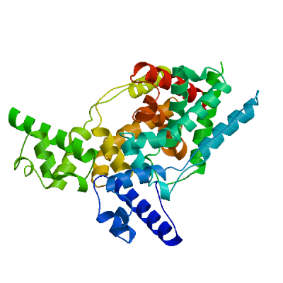
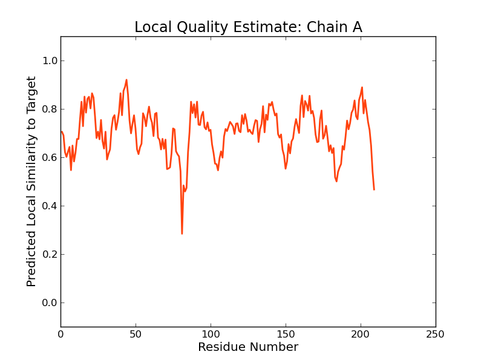
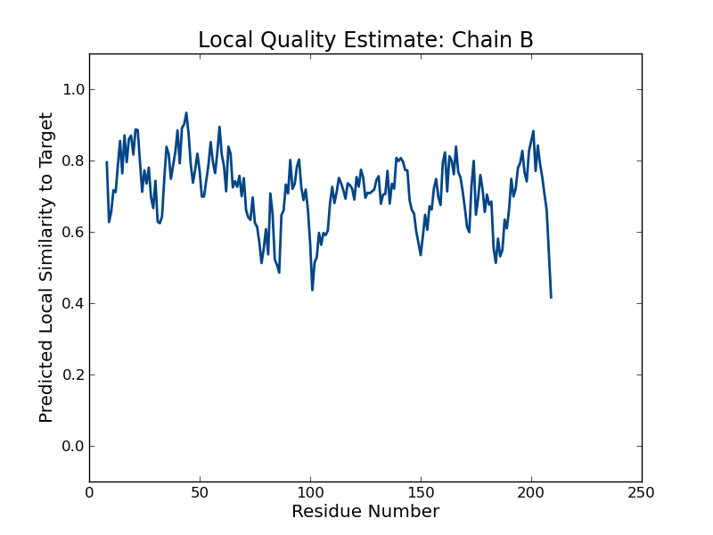
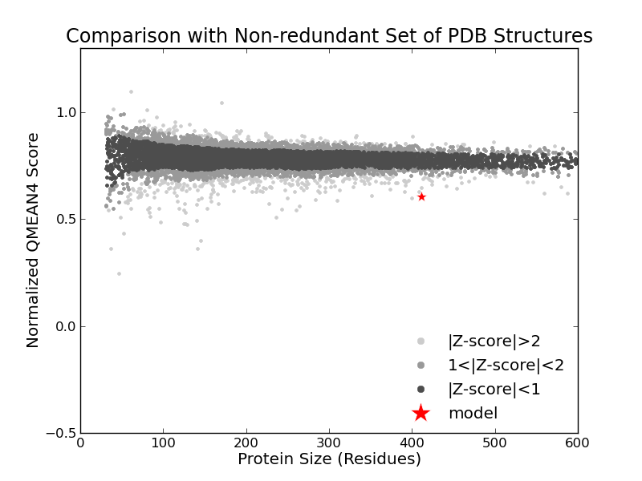

SWISS-MODEL Homology Modelling Report |
Model Building Report
This document lists the results for the homology modelling project "T451DRAFT_1645" submitted to SWISS-MODEL workspace on July 14, 2017, 9:18 p.m..The submitted primary amino acid sequence is given in Table T1.
If you use any results in your research, please cite the relevant publications:
Marco Biasini; Stefan Bienert; Andrew Waterhouse; Konstantin Arnold; Gabriel Studer; Tobias Schmidt; Florian Kiefer; Tiziano Gallo Cassarino; Martino Bertoni; Lorenza Bordoli; Torsten Schwede. (2014). SWISS-MODEL: modelling protein tertiary and quaternary structure using evolutionary information. Nucleic Acids Research (1 July 2014) 42 (W1): W252-W258; doi: 10.1093/nar/gku340.Arnold, K., Bordoli, L., Kopp, J. and Schwede, T. (2006) The SWISS-MODEL workspace: a web-based environment for protein structure homology modelling. Bioinformatics, 22, 195-201.
Benkert, P., Biasini, M. and Schwede, T. (2011) Toward the estimation of the absolute quality of individual protein structure models. Bioinformatics, 27, 343-350
Results
The SWISS-MODEL template library (SMTL version 2017-07-12, PDB release 2017-07-07) was searched with Blast (Altschul et al., 1997) and HHBlits (Remmert, et al., 2011) for evolutionary related structures matching the target sequence in Table T1. For details on the template search, see Materials and Methods. Overall 2006 templates were found (Table T2).
Models
The following model was built (see Materials and Methods "Model Building"):
Model #01 | File | Built with | Oligo-State | Ligands | GMQE | QMEAN |
|---|---|---|---|---|---|---|
|  | PDB | ProMod3 Version 1.0.2. | homo-dimer (matching prediction) | None | 0.59 | -4.69 |
|  |  |
| Template | Seq Identity | Oligo-state | Found by | Method | Resolution | Seq Similarity | Range | Coverage | Description |
|---|---|---|---|---|---|---|---|---|---|
| 1t33.1.A | 24.39 | homo-dimer | HHblits | X-ray | 2.20Å | 0.31 | 1 - 209 | 0.93 | putative transcriptional repressor (TetR/AcrR family) |
Target MVTNENPGTETHDARSRLVMSALRLFAEKGYKAASTREICEAAGANISAIRYYFGDKAGLYRAVFTEPMGDTPCGSNI--
1t33.1.A MNIPT-TTTKGEQAKSQLIAAALAQFGEYGLHA-TTRDIAALAGQNIAAITYYFGSKEDLYLACAQW-IADFLG-EKFRP
Target A-------AYAGLPLPEALVRFFTEFLEPL----KKGEEIRLVMKLHFREMIEPTGVWQQEIDAEIKPQHEALVSLLKEH
1t33.1.A HAEKAERLFSQPAPDRDAIRELILLACKNMIMLLTQEDTVN-LSKFISREQLSPTSAYQLVHEQVIDPLHTHLTRLVAAY
Target LALQRIDTDVHRLAFAIIGMAVYFYVGQEVVSAISPQVLNT---LKAIDVLAERLAGYAVSMIEGEARRRAQEANHE
1t33.1.A TGCDANDTRMILHTHALLGEVLAFRLGKETILLRTGWPQFDEEKAELIYQTVTCHIDLILHGLTQR-----------
Materials and Methods
Template Search
Template search with Blast and HHBlits has been performed against the SWISS-MODEL template library (SMTL, last update: 2017-07-12, last included PDB release: 2017-07-07).
The target sequence was searched with BLAST (Altschul et al., 1997) against the primary amino acid sequence contained in the SMTL. A total of 11 templates were found.
An initial HHblits profile has been built using the procedure outlined in (Remmert, et al., 2011), followed by 1 iteration of HHblits against NR20. The obtained profile has then be searched against all profiles of the SMTL. A total of 2051 templates were found.
Template Selection
For each identified template, the template's quality has been predicted from features of the target-template alignment. The templates with the highest quality have then been selected for model building.
Model Building
Models are built based on the target-template alignment using ProMod3. Coordinates which are conserved between the target and the template are copied from the template to the model. Insertions and deletions are remodelled using a fragment library. Side chains are then rebuilt. Finally, the geometry of the resulting model is regularized by using a force field. In case loop modelling with ProMod3 fails, an alternative model is built with PROMOD-II (Guex, et al., 1997).
Model Quality Estimation
The global and per-residue model quality has been assessed using the QMEAN scoring function (Benkert, et al., 2011) . For improved performance, weights of the individual QMEAN terms have been trained specifically for SWISS-MODEL.
Ligand Modelling
Ligands present in the template structure are transferred by homology to the model when the following criteria are met (Gallo -Casserino, to be published): (a) The ligands are annotated as biologically relevant in the template library, (b) the ligand is in contact with the model, (c) the ligand is not clashing with the protein, (d) the residues in contact with the ligand are conserved between the target and the template. If any of these four criteria is not satisfied, a certain ligand will not be included in the model. The model summary includes information on why and which ligand has not been included.
Oligomeric State Conservation
Homo-oligomeric structure of the target protein is predicted based on the analysis of pairwise interfaces of the identified template structures. For each relevant interface between polypeptide chains (interfaces with more than 10 residue-residue interactions), the QscoreOligomer (Mariani et al., 2011) is predicted from features such as similarity to target and frequency of observing this interface in the identified templates (Kiefer, Bertoni, Biasini, to be published). The prediction is performed with a random forest regressor using these features as input parameters to predict the probability of conservation for each interface. The QscoreOligomer of the whole complex is then calculated as the weight-averaged QscoreOligomer of the interfaces. The oligomeric state of the target is predicted to be the same as in the template when QscoreOligomer is predicted to be higher or equal to 0.5.
References
Altschul, S.F., Madden, T.L., Schaffer, A.A., Zhang, J., Zhang, Z., Miller, W. and Lipman, D.J. (1997) Gapped BLAST and PSI-BLAST: a new generation of protein database search programs. Nucleic Acids Res, 25, 3389-3402.
Remmert, M., Biegert, A., Hauser, A. and Soding, J. (2012) HHblits: lightning-fast iterative protein sequence searching by HMM-HMM alignment. Nat Methods, 9, 173-175.
Guex, N. and Peitsch, M.C. (1997) SWISS-MODEL and the Swiss-PdbViewer: an environment for comparative protein modeling. Electrophoresis, 18, 2714-2723.
Sali, A. and Blundell, T.L. (1993) Comparative protein modelling by satisfaction of spatial restraints. J Mol Biol, 234, 779-815.
Benkert, P., Biasini, M. and Schwede, T. (2011) Toward the estimation of the absolute quality of individual protein structure models. Bioinformatics, 27, 343-350.
Mariani, V., Kiefer, F., Schmidt, T., Haas, J. and Schwede, T. (2011) Assessment of template based protein structure predictions in CASP9. Proteins, 79 Suppl 10, 37-58.
Table T1:
Primary amino acid sequence for which templates were searched and models were built.
LKKGEEIRLVMKLHFREMIEPTGVWQQEIDAEIKPQHEALVSLLKEHLALQRIDTDVHRLAFAIIGMAVYFYVGQEVVSAISPQVLNTLKAIDVLAERLA
GYAVSMIEGEARRRAQEANHE
Table T2:
| Template | Seq Identity | Oligo-state | Found by | Method | Resolution | Seq Similarity | Coverage | Description |
|---|---|---|---|---|---|---|---|---|
| 1t33.1.A | 24.39 | homo-dimer | HHblits | X-ray | 2.20Å | 0.31 | 0.93 | putative transcriptional repressor (TetR/AcrR family) |
| 1t33.1.B | 24.39 | homo-dimer | HHblits | X-ray | 2.20Å | 0.31 | 0.93 | putative transcriptional repressor (TetR/AcrR family) |
| 3loc.1.B | 18.41 | homo-dimer | HHblits | X-ray | 2.50Å | 0.29 | 0.91 | HTH-type transcriptional regulator rutR |
| 3loc.1.A | 18.41 | homo-dimer | HHblits | X-ray | 2.50Å | 0.29 | 0.91 | HTH-type transcriptional regulator rutR |
| 4xk4.2.B | 18.41 | homo-dimer | HHblits | X-ray | 2.27Å | 0.29 | 0.91 | HTH-type transcriptional regulator RutR |
| 4xk4.1.A | 18.41 | homo-dimer | HHblits | X-ray | 2.27Å | 0.29 | 0.91 | HTH-type transcriptional regulator RutR |
| 2rha.1.A | 19.60 | homo-dimer | HHblits | X-ray | 2.10Å | 0.30 | 0.90 | Transcriptional regulator, TetR family |
| 2qtq.1.A | 19.60 | homo-dimer | HHblits | X-ray | 1.85Å | 0.30 | 0.90 | Transcriptional regulator, TetR family |
| 2qtq.1.B | 19.60 | homo-dimer | HHblits | X-ray | 1.85Å | 0.30 | 0.90 | Transcriptional regulator, TetR family |
| 2qtq.2.A | 19.60 | homo-dimer | HHblits | X-ray | 1.85Å | 0.30 | 0.90 | Transcriptional regulator, TetR family |
| 2qco.1.A | 18.91 | homo-dimer | HHblits | X-ray | 2.25Å | 0.29 | 0.91 | CmeR |
| 3lhq.1.A | 19.70 | homo-dimer | HHblits | X-ray | 1.56Å | 0.28 | 0.92 | AcrAB operon repressor (TetR/AcrR family) |
| 4x1e.1.A | 18.00 | homo-dimer | HHblits | X-ray | 2.40Å | 0.29 | 0.90 | HTH-type transcriptional regulator RutR |
| 4x1e.1.B | 18.00 | homo-dimer | HHblits | X-ray | 2.40Å | 0.29 | 0.90 | HTH-type transcriptional regulator RutR |
| 3dew.1.A | 23.32 | homo-dimer | HHblits | X-ray | 1.75Å | 0.32 | 0.87 | Transcriptional regulator, TetR family |
| 3hgg.1.A | 18.50 | homo-dimer | HHblits | X-ray | 2.57Å | 0.29 | 0.90 | CmeR |
| 2fbq.1.A | 18.37 | homo-dimer | HHblits | X-ray | 1.80Å | 0.30 | 0.89 | probable transcriptional regulator |
| 5d18.1.A | 17.50 | monomer | HHblits | X-ray | 2.04Å | 0.28 | 0.90 | TetR family transcriptional regulator |
| 5d19.1.A | 17.50 | homo-dimer | HHblits | X-ray | 2.65Å | 0.28 | 0.90 | TetR family transcriptional regulator |
| 5d19.1.B | 17.50 | homo-dimer | HHblits | X-ray | 2.65Å | 0.28 | 0.90 | TetR family transcriptional regulator |
| 3hgy.1.A | 18.69 | homo-dimer | HHblits | X-ray | 2.42Å | 0.29 | 0.90 | CmeR |
| 3qqa.1.A | 18.69 | homo-dimer | HHblits | X-ray | 2.20Å | 0.29 | 0.90 | CmeR |
| 3qps.1.B | 18.69 | homo-dimer | HHblits | X-ray | 2.35Å | 0.29 | 0.90 | CmeR |
| 3bcg.1.A | 20.10 | homo-dimer | HHblits | X-ray | 2.48Å | 0.28 | 0.90 | HTH-type transcriptional regulator acrR |
| 2qop.1.A | 20.10 | homo-dimer | HHblits | X-ray | 2.55Å | 0.28 | 0.90 | HTH-type transcriptional regulator acrR |
| 3nrg.1.A | 14.43 | monomer | HHblits | X-ray | 2.56Å | 0.27 | 0.91 | TetR family transcriptional regulator |
| 3nrg.3.A | 14.43 | monomer | HHblits | X-ray | 2.56Å | 0.27 | 0.91 | TetR family transcriptional regulator |
| 3nrg.5.A | 14.43 | monomer | HHblits | X-ray | 2.56Å | 0.27 | 0.91 | TetR family transcriptional regulator |
| 3gzi.1.A | 19.29 | homo-dimer | HHblits | X-ray | 2.05Å | 0.29 | 0.89 | Transcriptional regulator, TetR family |
| 3bhq.1.A | 14.07 | homo-dimer | HHblits | X-ray | 1.54Å | 0.28 | 0.90 | Transcriptional regulator |
| 3bhq.1.B | 14.07 | homo-dimer | HHblits | X-ray | 1.54Å | 0.28 | 0.90 | Transcriptional regulator |
| 3vib.1.A | 21.03 | homo-dimer | HHblits | X-ray | 2.40Å | 0.29 | 0.88 | MtrR |
| 3vib.2.A | 21.03 | homo-dimer | HHblits | X-ray | 2.40Å | 0.29 | 0.88 | MtrR |
| 3vib.2.B | 21.03 | homo-dimer | HHblits | X-ray | 2.40Å | 0.29 | 0.88 | MtrR |
| 2uxu.1.A | 14.80 | homo-dimer | HHblits | X-ray | 2.30Å | 0.28 | 0.89 | HTH-TYPE TRANSCRIPTIONAL REGULATOR TTGR |
| 2uxu.1.B | 14.80 | homo-dimer | HHblits | X-ray | 2.30Å | 0.28 | 0.89 | HTH-TYPE TRANSCRIPTIONAL REGULATOR TTGR |
| 2fx0.1.A | 19.90 | homo-dimer | HHblits | X-ray | 2.40Å | 0.30 | 0.86 | hemolysin II regulatory protein |
| 3npi.1.A | 16.24 | homo-dimer | HHblits | X-ray | 2.96Å | 0.27 | 0.89 | TetR family regulatory protein |
| 2xdn.1.A | 14.87 | homo-dimer | HHblits | X-ray | 2.20Å | 0.28 | 0.88 | HTH-TYPE TRANSCRIPTIONAL REGULATOR TTGR |
| 3dcf.1.A | 21.28 | homo-dimer | HHblits | X-ray | 2.50Å | 0.31 | 0.85 | transcriptional regulator of the TetR/AcrR family |
| 2wv1.1.A | 20.00 | homo-dimer | HHblits | X-ray | 2.30Å | 0.30 | 0.86 | HEMOLYSIN II REGULATORY PROTEIN |
| 2wv1.1.B | 20.00 | homo-dimer | HHblits | X-ray | 2.30Å | 0.30 | 0.86 | HEMOLYSIN II REGULATORY PROTEIN |
| 5k7z.2.A | 17.10 | homo-dimer | HHblits | X-ray | 2.92Å | 0.28 | 0.87 | Transcriptional regulator, TetR family |
| 5k7z.2.B | 17.10 | homo-dimer | HHblits | X-ray | 2.92Å | 0.28 | 0.87 | Transcriptional regulator, TetR family |
| 5k7z.1.B | 17.10 | homo-dimer | HHblits | X-ray | 2.92Å | 0.28 | 0.87 | Transcriptional regulator, TetR family |
| 5k7z.1.A | 17.10 | homo-dimer | HHblits | X-ray | 2.92Å | 0.28 | 0.87 | Transcriptional regulator, TetR family |
| 5k7f.1.B | 17.10 | homo-dimer | HHblits | X-ray | 1.70Å | 0.28 | 0.87 | Transcriptional regulator, TetR family |
| 5k7f.1.A | 17.10 | homo-dimer | HHblits | X-ray | 1.70Å | 0.28 | 0.87 | Transcriptional regulator, TetR family |
| 5k7h.1.A | 17.10 | homo-dimer | HHblits | X-ray | 2.35Å | 0.28 | 0.87 | Transcriptional regulator, TetR family |
| 5k7h.1.B | 17.10 | homo-dimer | HHblits | X-ray | 2.35Å | 0.28 | 0.87 | Transcriptional regulator, TetR family |
| 4g12.1.A | 18.75 | homo-dimer | HHblits | X-ray | 3.44Å | 0.29 | 0.87 | Probable transcriptional regulatory protein (Probably TETR-FAMILY) |
| 5h9t.1.A | 18.13 | homo-dimer | HHblits | X-ray | 2.89Å | 0.28 | 0.87 | NalD |
| 5h9t.2.A | 18.13 | homo-dimer | HHblits | X-ray | 2.89Å | 0.28 | 0.87 | NalD |
| 5h9t.3.B | 18.13 | homo-dimer | HHblits | X-ray | 2.89Å | 0.28 | 0.87 | NalD |
| 5h9t.4.B | 18.13 | homo-dimer | HHblits | X-ray | 2.89Å | 0.28 | 0.87 | NalD |
| 5daj.4.A | 18.13 | homo-dimer | HHblits | X-ray | 2.65Å | 0.28 | 0.87 | NalD |
| 3him.1.A | 18.32 | homo-dimer | HHblits | X-ray | 2.20Å | 0.29 | 0.86 | Probable transcriptional regulator |
| 3him.1.B | 18.32 | homo-dimer | HHblits | X-ray | 2.20Å | 0.29 | 0.86 | Probable transcriptional regulator |
| 4uds.1.A | 15.23 | homo-dimer | HHblits | X-ray | 1.76Å | 0.26 | 0.89 | MBDR REGULATOR |
| 3ccy.1.A | 16.06 | homo-dimer | HHblits | X-ray | 2.01Å | 0.28 | 0.87 | Putative TetR-family transcriptional regulator |
| 2w53.1.A | 14.80 | homo-dimer | HHblits | X-ray | 2.00Å | 0.27 | 0.89 | REPRESSOR |
| 2w53.1.B | 14.80 | homo-dimer | HHblits | X-ray | 2.00Å | 0.27 | 0.89 | REPRESSOR |
| 3p9t.1.B | 14.80 | homo-dimer | HHblits | X-ray | 2.02Å | 0.27 | 0.89 | Repressor |
| 5fhp.1.A | 16.67 | homo-dimer | HHblits | X-ray | 2.65Å | 0.28 | 0.87 | NicR |
| 5fhp.2.B | 16.67 | homo-dimer | HHblits | X-ray | 2.65Å | 0.28 | 0.87 | NicR |
| 5fgl.1.A | 16.15 | homo-dimer | HHblits | X-ray | 2.40Å | 0.28 | 0.87 | NicR |
| 3f0c.1.A | 13.85 | homo-dimer | HHblits | X-ray | 2.96Å | 0.27 | 0.88 | Transcriptional regulator |
| 3s5r.1.A | 16.58 | homo-dimer | HHblits | X-ray | 2.60Å | 0.28 | 0.87 | Transcriptional regulator TetR family |
| 4w1u.1.A | 17.19 | homo-dimer | HHblits | X-ray | 1.88Å | 0.28 | 0.87 | HTH-type transcriptional repressor KstR2 |
| 3cdl.1.A | 14.95 | homo-dimer | HHblits | X-ray | 2.36Å | 0.27 | 0.88 | Transcriptional regulator AefR |
| 3cdl.1.B | 14.95 | homo-dimer | HHblits | X-ray | 2.36Å | 0.27 | 0.88 | Transcriptional regulator AefR |
| 2qib.1.A | 17.71 | homo-dimer | HHblits | X-ray | 1.70Å | 0.28 | 0.87 | tetR-family transcriptional regulator |
| 2qib.1.B | 17.71 | homo-dimer | HHblits | X-ray | 1.70Å | 0.28 | 0.87 | tetR-family transcriptional regulator |
| 5icj.1.A | 17.71 | homo-dimer | HHblits | X-ray | 2.40Å | 0.28 | 0.87 | Probable transcriptional regulatory protein |
| 5n1i.1.B | 17.71 | homo-dimer | HHblits | X-ray | 2.40Å | 0.28 | 0.87 | Probable transcriptional regulatory protein |
| 3c2b.1.A | 16.75 | homo-dimer | HHblits | X-ray | 2.10Å | 0.28 | 0.86 | Transcriptional regulator, TetR family |
| 3c2b.1.B | 16.75 | homo-dimer | HHblits | X-ray | 2.10Å | 0.28 | 0.86 | Transcriptional regulator, TetR family |
| 3c07.1.A | 16.06 | homo-dimer | HHblits | X-ray | 2.70Å | 0.27 | 0.87 | Putative tetR-family transcriptional regulator |
| 3c07.1.B | 16.06 | homo-dimer | HHblits | X-ray | 2.70Å | 0.27 | 0.87 | Putative tetR-family transcriptional regulator |
| 3qbm.1.A | 18.72 | homo-dimer | HHblits | X-ray | 1.80Å | 0.29 | 0.85 | TetR transcriptional regulator |
| 3qbm.1.B | 18.72 | homo-dimer | HHblits | X-ray | 1.80Å | 0.29 | 0.85 | TetR transcriptional regulator |
| 3lsr.1.A | 14.36 | homo-dimer | HHblits | X-ray | 2.55Å | 0.26 | 0.88 | DesT |
| 3lsj.1.A | 14.36 | homo-dimer | HHblits | X-ray | 2.30Å | 0.26 | 0.88 | DesT |
| 4ich.1.A | 15.63 | homo-dimer | HHblits | X-ray | 1.95Å | 0.27 | 0.87 | Transcriptional regulator |
| 2iai.1.A | 16.06 | homo-dimer | HHblits | X-ray | 1.65Å | 0.26 | 0.87 | Putative transcriptional regulator SCO3833 |
| 3f1b.1.A | 18.18 | homo-dimer | HHblits | X-ray | 2.40Å | 0.29 | 0.85 | TetR-like transcriptional regulator |
| 1zkg.1.A | 15.79 | homo-dimer | HHblits | X-ray | 2.30Å | 0.27 | 0.86 | transcriptional regulator, TetR family |
| 1zkg.1.B | 15.79 | homo-dimer | HHblits | X-ray | 2.30Å | 0.27 | 0.86 | transcriptional regulator, TetR family |
| 2oer.1.A | 15.26 | homo-dimer | HHblits | X-ray | 2.00Å | 0.27 | 0.86 | Probable transcriptional regulator |
| 2oer.1.B | 15.26 | homo-dimer | HHblits | X-ray | 2.00Å | 0.27 | 0.86 | Probable transcriptional regulator |
| 3ang.1.A | 14.89 | homo-dimer | HHblits | X-ray | 2.25Å | 0.28 | 0.85 | Transcriptional repressor, TetR family |
| 3ang.1.B | 14.89 | homo-dimer | HHblits | X-ray | 2.25Å | 0.28 | 0.85 | Transcriptional repressor, TetR family |
| 3ang.2.A | 14.89 | homo-dimer | HHblits | X-ray | 2.25Å | 0.28 | 0.85 | Transcriptional repressor, TetR family |
| 3ang.2.B | 14.89 | homo-dimer | HHblits | X-ray | 2.25Å | 0.28 | 0.85 | Transcriptional repressor, TetR family |
| 3anp.1.B | 14.89 | homo-dimer | HHblits | X-ray | 1.95Å | 0.28 | 0.85 | Transcriptional repressor, TetR family |
| 3eup.1.A | 17.65 | homo-dimer | HHblits | X-ray | 1.99Å | 0.28 | 0.85 | Transcriptional regulator, TetR family |
| 3eup.1.B | 17.65 | homo-dimer | HHblits | X-ray | 1.99Å | 0.28 | 0.85 | Transcriptional regulator, TetR family |
| 3e7q.1.A | 14.74 | homo-dimer | HHblits | X-ray | 2.20Å | 0.27 | 0.86 | transcriptional regulator |
| 3e7q.1.B | 14.74 | homo-dimer | HHblits | X-ray | 2.20Å | 0.27 | 0.86 | transcriptional regulator |
| 1rkt.1.A | 12.17 | homo-dimer | HHblits | X-ray | 1.95Å | 0.27 | 0.86 | protein yfiR |
| 1vi0.1.A | 17.02 | homo-dimer | HHblits | X-ray | 1.65Å | 0.28 | 0.85 | transcriptional regulator |
| 1vi0.1.B | 17.02 | homo-dimer | HHblits | X-ray | 1.65Å | 0.28 | 0.85 | transcriptional regulator |
| 2gen.1.A | 15.51 | homo-dimer | HHblits | X-ray | 1.70Å | 0.28 | 0.85 | probable transcriptional regulator |
| 2d6y.1.A | 18.38 | homo-dimer | HHblits | X-ray | 2.30Å | 0.29 | 0.84 | putative tetR family regulatory protein |
| 2d6y.1.B | 18.38 | homo-dimer | HHblits | X-ray | 2.30Å | 0.29 | 0.84 | putative tetR family regulatory protein |
| 2ibd.1.A | 17.74 | homo-dimer | HHblits | X-ray | 1.50Å | 0.29 | 0.84 | Possible transcriptional regulator |
| 2ibd.1.B | 17.74 | homo-dimer | HHblits | X-ray | 1.50Å | 0.29 | 0.84 | Possible transcriptional regulator |
| 4mo7.1.A | 18.82 | homo-dimer | HHblits | X-ray | 1.70Å | 0.28 | 0.84 | Transcriptional regulator I2 |
| 3on2.1.A | 12.95 | monomer | HHblits | X-ray | 1.96Å | 0.26 | 0.87 | Probable transcriptional regulator |
| 3on2.4.A | 12.95 | monomer | HHblits | X-ray | 1.96Å | 0.26 | 0.87 | Probable transcriptional regulator |
| 5fmp.1.B | 11.64 | homo-dimer | HHblits | X-ray | 2.26Å | 0.27 | 0.86 | HTH-TYPE TRANSCRIPTIONAL REPRESSOR KSTR |
| 5aqc.1.B | 11.64 | homo-dimer | HHblits | X-ray | 1.66Å | 0.27 | 0.86 | HTH-TYPE TRANSCRIPTIONAL REPRESSOR KSTR |
| 5aqc.1.A | 11.64 | homo-dimer | HHblits | X-ray | 1.66Å | 0.27 | 0.86 | HTH-TYPE TRANSCRIPTIONAL REPRESSOR KSTR |
| 2rae.1.A | 15.43 | homo-dimer | HHblits | X-ray | 2.20Å | 0.28 | 0.85 | Transcriptional regulator, AcrR family protein |
| 2ras.1.A | 15.05 | homo-dimer | HHblits | X-ray | 1.80Å | 0.28 | 0.84 | Transcriptional regulator, TetR family |
| 2ras.1.B | 15.05 | homo-dimer | HHblits | X-ray | 1.80Å | 0.28 | 0.84 | Transcriptional regulator, TetR family |
| 3whb.1.A | 17.11 | homo-dimer | HHblits | X-ray | 2.15Å | 0.28 | 0.85 | Fatty acid metabolism regulator protein |
| 3whb.1.B | 17.11 | homo-dimer | HHblits | X-ray | 2.15Å | 0.28 | 0.85 | Fatty acid metabolism regulator protein |
| 3whc.1.A | 17.11 | homo-dimer | HHblits | X-ray | 2.20Å | 0.28 | 0.85 | Fatty acid metabolism regulator protein |
| 3whc.1.B | 17.11 | homo-dimer | HHblits | X-ray | 2.20Å | 0.28 | 0.85 | Fatty acid metabolism regulator protein |
| 3cwr.1.A | 13.09 | homo-dimer | HHblits | X-ray | 1.50Å | 0.26 | 0.86 | Transcriptional regulator, TetR family |
| 4kwa.1.A | 15.51 | homo-dimer | HHblits | X-ray | 1.80Å | 0.28 | 0.85 | Transcriptional regulator |
| 4w97.1.A | 16.67 | homo-dimer | HHblits | X-ray | 1.60Å | 0.28 | 0.84 | HTH-type transcriptional repressor KstR2 |
| 2of7.1.A | 13.98 | homo-dimer | HHblits | X-ray | 2.30Å | 0.28 | 0.84 | Putative tetR-family transcriptional regulator |
| 4cgr.1.A | 16.32 | homo-dimer | HHblits | X-ray | 2.10Å | 0.26 | 0.86 | PUTATIVE TETR-FAMILY TRANSCRIPTIONAL REGULATOR |
| 4cgr.1.B | 16.32 | homo-dimer | HHblits | X-ray | 2.10Å | 0.26 | 0.86 | PUTATIVE TETR-FAMILY TRANSCRIPTIONAL REGULATOR |
| 5efy.2.B | 16.32 | homo-dimer | HHblits | X-ray | 2.70Å | 0.26 | 0.86 | Putative tetR-family transcriptional regulator |
| 5efy.2.A | 16.32 | homo-dimer | HHblits | X-ray | 2.70Å | 0.26 | 0.86 | Putative tetR-family transcriptional regulator |
| 5efy.1.A | 16.32 | homo-dimer | HHblits | X-ray | 2.70Å | 0.26 | 0.86 | Putative tetR-family transcriptional regulator |
| 5efy.1.B | 16.32 | homo-dimer | HHblits | X-ray | 2.70Å | 0.26 | 0.86 | Putative tetR-family transcriptional regulator |
| 1ui5.1.A | 17.74 | homo-dimer | HHblits | X-ray | 2.40Å | 0.28 | 0.84 | A-factor receptor homolog |
| 1ui5.1.B | 17.74 | homo-dimer | HHblits | X-ray | 2.40Å | 0.28 | 0.84 | A-factor receptor homolog |
| 1ui6.1.A | 17.74 | homo-dimer | HHblits | X-ray | 2.40Å | 0.28 | 0.84 | A-factor receptor homolog |
| 1ui6.1.B | 17.74 | homo-dimer | HHblits | X-ray | 2.40Å | 0.28 | 0.84 | A-factor receptor homolog |
| 4pxi.1.A | 17.74 | homo-tetramer | HHblits | X-ray | 3.20Å | 0.28 | 0.84 | CprB |
| 4pxi.1.B | 17.74 | homo-tetramer | HHblits | X-ray | 3.20Å | 0.28 | 0.84 | CprB |
| 4pxi.1.C | 17.74 | homo-tetramer | HHblits | X-ray | 3.20Å | 0.28 | 0.84 | CprB |
| 4pxi.1.D | 17.74 | homo-tetramer | HHblits | X-ray | 3.20Å | 0.28 | 0.84 | CprB |
| 5h58.1.D | 17.74 | homo-tetramer | HHblits | X-ray | 3.99Å | 0.28 | 0.84 | CprB |
| 5h58.1.A | 17.74 | homo-tetramer | HHblits | X-ray | 3.99Å | 0.28 | 0.84 | CprB |
| 5h58.1.C | 17.74 | homo-tetramer | HHblits | X-ray | 3.99Å | 0.28 | 0.84 | CprB |
| 5h58.1.B | 17.74 | homo-tetramer | HHblits | X-ray | 3.99Å | 0.28 | 0.84 | CprB |
| 3knw.1.A | 10.42 | homo-dimer | HHblits | X-ray | 2.45Å | 0.25 | 0.87 | Putative transcriptional regulator (TetR/AcrR family) |
| 3knw.1.B | 10.42 | homo-dimer | HHblits | X-ray | 2.45Å | 0.25 | 0.87 | Putative transcriptional regulator (TetR/AcrR family) |
| 5dy0.1.A | 11.58 | homo-dimer | HHblits | X-ray | 3.00Å | 0.26 | 0.86 | TetR family transcriptional regulator |
| 5dy0.1.B | 11.58 | homo-dimer | HHblits | X-ray | 3.00Å | 0.26 | 0.86 | TetR family transcriptional regulator |
| 5dy0.2.A | 11.58 | homo-dimer | HHblits | X-ray | 3.00Å | 0.26 | 0.86 | TetR family transcriptional regulator |
| 2id6.1.A | 16.04 | homo-dimer | HHblits | X-ray | 1.75Å | 0.27 | 0.85 | TRANSCRIPTIONAL REGULATOR, TetR FAMILY |
| 4i76.1.A | 16.04 | homo-dimer | HHblits | X-ray | 2.10Å | 0.27 | 0.85 | Transcriptional regulator, TetR family |
| 4i76.2.A | 16.04 | homo-dimer | HHblits | X-ray | 2.10Å | 0.27 | 0.85 | Transcriptional regulator, TetR family |
| 4i6z.1.E | 16.04 | homo-tetramer | HHblits | X-ray | 3.20Å | 0.27 | 0.85 | Transcriptional regulator, TetR family |
| 3lwj.1.A | 15.68 | homo-dimer | HHblits | X-ray | 2.07Å | 0.28 | 0.84 | Putative TetR-family transcriptional regulator |
| 5ezg.1.A | 12.04 | homo-dimer | HHblits | X-ray | 1.84Å | 0.26 | 0.86 | HTH-type transcriptional regulator EthR |
| 5eyr.1.A | 12.04 | homo-dimer | HHblits | X-ray | 1.57Å | 0.26 | 0.86 | EthR |
| 3pas.1.A | 17.20 | homo-dimer | HHblits | X-ray | 1.90Å | 0.28 | 0.84 | TetR family transcription regulator |
| 3pas.2.A | 17.20 | homo-dimer | HHblits | X-ray | 1.90Å | 0.28 | 0.84 | TetR family transcription regulator |
| 5dy1.1.A | 11.58 | homo-dimer | HHblits | X-ray | 2.65Å | 0.26 | 0.86 | TetR family transcriptional regulator |
| 5dy1.1.B | 11.58 | homo-dimer | HHblits | X-ray | 2.65Å | 0.26 | 0.86 | TetR family transcriptional regulator |
| 2iek.1.A | 15.51 | homo-dimer | HHblits | X-ray | 1.83Å | 0.27 | 0.85 | Transcriptional regulator, TetR family |
| 1z77.1.A | 15.51 | monomer | HHblits | X-ray | 2.00Å | 0.27 | 0.85 | transcriptional regulator (TetR family) |
| 5gpc.1.A | 16.67 | homo-tetramer | HHblits | X-ray | 2.80Å | 0.28 | 0.84 | Transcriptional regulator (TetR/AcrR family) |
| 5gp9.1.B | 16.67 | homo-dimer | HHblits | X-ray | 1.75Å | 0.28 | 0.84 | Transcriptional regulator (TetR/AcrR family) |
| 5gp9.1.A | 16.67 | homo-dimer | HHblits | X-ray | 1.75Å | 0.28 | 0.84 | Transcriptional regulator (TetR/AcrR family) |
| 5gpc.1.B | 16.67 | homo-tetramer | HHblits | X-ray | 2.80Å | 0.28 | 0.84 | Transcriptional regulator (TetR/AcrR family) |
| 5gpc.1.E | 16.67 | homo-tetramer | HHblits | X-ray | 2.80Å | 0.28 | 0.84 | Transcriptional regulator (TetR/AcrR family) |
| 5gpa.1.A | 16.67 | homo-dimer | HHblits | X-ray | 2.05Å | 0.28 | 0.84 | Transcriptional regulator (TetR/AcrR family) |
| 5gpa.1.B | 16.67 | homo-dimer | HHblits | X-ray | 2.05Å | 0.28 | 0.84 | Transcriptional regulator (TetR/AcrR family) |
| 1u9o.1.A | 11.52 | homo-dimer | HHblits | X-ray | 3.30Å | 0.26 | 0.86 | Transcriptional repressor EthR |
| 3nnr.1.A | 11.58 | homo-dimer | HHblits | X-ray | 2.49Å | 0.26 | 0.86 | Transcriptional regulator, TetR family |
| 3rd3.1.A | 16.22 | homo-dimer | HHblits | X-ray | 2.40Å | 0.28 | 0.84 | Probable transcriptional regulator |
| 3rd3.1.B | 16.22 | homo-dimer | HHblits | X-ray | 2.40Å | 0.28 | 0.84 | Probable transcriptional regulator |
| 3qpl.1.A | 11.05 | homo-dimer | HHblits | X-ray | 3.20Å | 0.26 | 0.86 | HTH-type transcriptional regulator EthR |
| 3tp3.1.A | 11.05 | homo-dimer | HHblits | X-ray | 1.86Å | 0.26 | 0.86 | HTH-type transcriptional regulator EthR |
| 4jnn.1.A | 15.59 | homo-dimer | HHblits | X-ray | 2.35Å | 0.27 | 0.84 | Transcriptional regulator |
| 2q24.1.A | 18.58 | homo-dimer | HHblits | X-ray | 1.80Å | 0.29 | 0.83 | Putative tetR family transcriptional regulator |
| 2q24.1.B | 18.58 | homo-dimer | HHblits | X-ray | 1.80Å | 0.29 | 0.83 | Putative tetR family transcriptional regulator |
| 3mnl.1.A | 11.89 | homo-dimer | HHblits | X-ray | 1.80Å | 0.28 | 0.84 | TRANSCRIPTIONAL REGULATORY PROTEIN (PROBABLY TETR-FAMILY) |
| 5cw8.1.A | 11.89 | homo-dimer | HHblits | X-ray | 2.60Å | 0.28 | 0.84 | HTH-type transcriptional repressor KstR |
| 5cxg.1.A | 11.89 | homo-dimer | HHblits | X-ray | 2.10Å | 0.28 | 0.84 | HTH-type transcriptional repressor KstR |
| 5cxg.1.B | 11.89 | homo-dimer | HHblits | X-ray | 2.10Å | 0.28 | 0.84 | HTH-type transcriptional repressor KstR |
| 3g1o.1.A | 11.05 | homo-dimer | HHblits | X-ray | 1.85Å | 0.25 | 0.86 | TRANSCRIPTIONAL REGULATORY REPRESSOR PROTEIN (TETR-FAMILY) ETHR |
| 3g7r.1.A | 11.58 | homo-dimer | HHblits | X-ray | 1.38Å | 0.25 | 0.86 | Putative transcriptional regulator |
| 2jk3.1.A | 20.67 | homo-dimer | HHblits | X-ray | 2.20Å | 0.30 | 0.81 | HEMOLYSIN II REGULATORY PROTEIN |
| 2jk3.1.B | 20.67 | homo-dimer | HHblits | X-ray | 2.20Å | 0.30 | 0.81 | HEMOLYSIN II REGULATORY PROTEIN |
| 3vpr.1.A | 18.68 | homo-dimer | HHblits | X-ray | 2.27Å | 0.29 | 0.82 | Transcriptional regulator, TetR family |
| 3vpr.1.B | 18.68 | homo-dimer | HHblits | X-ray | 2.27Å | 0.29 | 0.82 | Transcriptional regulator, TetR family |
| 3vpr.2.A | 18.68 | homo-dimer | HHblits | X-ray | 2.27Å | 0.29 | 0.82 | Transcriptional regulator, TetR family |
| 3vpr.2.B | 18.68 | homo-dimer | HHblits | X-ray | 2.27Å | 0.29 | 0.82 | Transcriptional regulator, TetR family |
| 1t56.1.A | 11.05 | homo-dimer | HHblits | X-ray | 1.70Å | 0.25 | 0.86 | EthR repressor |
| 5j1u.1.B | 11.05 | homo-dimer | HHblits | X-ray | 1.80Å | 0.25 | 0.86 | EthR |
| 3geu.1.A | 15.38 | homo-dimer | HHblits | X-ray | 1.90Å | 0.29 | 0.82 | Intercellular adhesion protein R |
| 3geu.1.B | 15.38 | homo-dimer | HHblits | X-ray | 1.90Å | 0.29 | 0.82 | Intercellular adhesion protein R |
| 3geu.2.A | 15.38 | homo-dimer | HHblits | X-ray | 1.90Å | 0.29 | 0.82 | Intercellular adhesion protein R |
| 3geu.2.B | 15.38 | homo-dimer | HHblits | X-ray | 1.90Å | 0.29 | 0.82 | Intercellular adhesion protein R |
| 2pz9.1.A | 16.22 | homo-dimer | HHblits | X-ray | 2.80Å | 0.27 | 0.84 | Putative regulatory protein |
| 3g1l.1.A | 11.64 | homo-dimer | HHblits | X-ray | 1.70Å | 0.26 | 0.86 | TRANSCRIPTIONAL REGULATORY REPRESSOR PROTEIN (TETR-FAMILY) ETHR |
| 5dxz.1.A | 11.76 | homo-dimer | HHblits | X-ray | 2.25Å | 0.26 | 0.85 | TetR family transcriptional regulator |
| 2v57.1.A | 17.93 | homo-dimer | HHblits | X-ray | 1.90Å | 0.28 | 0.83 | TETR FAMILY TRANSCRIPTIONAL REPRESSOR LFRR |
| 2wgb.1.B | 17.93 | homo-dimer | HHblits | X-ray | 2.00Å | 0.28 | 0.83 | TETR FAMILY TRANSCRIPTIONAL REPRESSOR LFRR |
| 2wgb.1.A | 17.93 | homo-dimer | HHblits | X-ray | 2.00Å | 0.28 | 0.83 | TETR FAMILY TRANSCRIPTIONAL REPRESSOR LFRR |
| 2v57.1.B | 17.93 | homo-dimer | HHblits | X-ray | 1.90Å | 0.28 | 0.83 | TETR FAMILY TRANSCRIPTIONAL REPRESSOR LFRR |
| 1sgm.1.A | 17.39 | homo-dimer | HHblits | X-ray | 2.00Å | 0.28 | 0.83 | Putative HTH-type transcriptional regulator yxaF |
| 3q0w.1.A | 11.11 | homo-dimer | HHblits | X-ray | 1.60Å | 0.25 | 0.86 | HTH-type transcriptional regulator EthR |
| 3bjb.1.A | 13.04 | homo-dimer | HHblits | X-ray | 2.50Å | 0.28 | 0.83 | Probable transcriptional regulator, TetR family protein |
| 3bjb.1.B | 13.04 | homo-dimer | HHblits | X-ray | 2.50Å | 0.28 | 0.83 | Probable transcriptional regulator, TetR family protein |
| 3bjb.2.A | 13.04 | homo-dimer | HHblits | X-ray | 2.50Å | 0.28 | 0.83 | Probable transcriptional regulator, TetR family protein |
| 3bjb.2.B | 13.04 | homo-dimer | HHblits | X-ray | 2.50Å | 0.28 | 0.83 | Probable transcriptional regulator, TetR family protein |
| 3bjb.3.A | 13.04 | homo-dimer | HHblits | X-ray | 2.50Å | 0.28 | 0.83 | Probable transcriptional regulator, TetR family protein |
| 3bjb.3.B | 13.04 | homo-dimer | HHblits | X-ray | 2.50Å | 0.28 | 0.83 | Probable transcriptional regulator, TetR family protein |
| 3bni.1.A | 17.49 | homo-dimer | HHblits | X-ray | 2.30Å | 0.28 | 0.83 | Putative TetR-family transcriptional regulator |
| 3bni.1.B | 17.49 | homo-dimer | HHblits | X-ray | 2.30Å | 0.28 | 0.83 | Putative TetR-family transcriptional regulator |
| 2rek.1.A | 19.67 | homo-dimer | HHblits | X-ray | 1.86Å | 0.28 | 0.83 | Putative tetR-family transcriptional regulator |
| 2rek.1.B | 19.67 | homo-dimer | HHblits | X-ray | 1.86Å | 0.28 | 0.83 | Putative tetR-family transcriptional regulator |
| 2id3.1.A | 15.85 | homo-dimer | HHblits | X-ray | 1.70Å | 0.28 | 0.83 | Putative transcriptional regulator |
| 2zcm.1.A | 14.84 | homo-dimer | HHblits | X-ray | 1.33Å | 0.28 | 0.82 | Biofilm operon icaABCD HTH-type negative transcriptional regulator icaR |
| 2zcm.1.B | 14.84 | homo-dimer | HHblits | X-ray | 1.33Å | 0.28 | 0.82 | Biofilm operon icaABCD HTH-type negative transcriptional regulator icaR |
| 4mxm.1.A | 19.44 | homo-dimer | HHblits | X-ray | 1.95Å | 0.29 | 0.81 | Transcriptional regulator I2 |
| 4mxm.1.B | 19.44 | homo-dimer | HHblits | X-ray | 1.95Å | 0.29 | 0.81 | Transcriptional regulator I2 |
| 2f07.1.A | 14.21 | homo-dimer | HHblits | X-ray | 2.30Å | 0.27 | 0.83 | YvdT |
| 2jj7.1.A | 20.90 | homo-dimer | HHblits | X-ray | 2.10Å | 0.30 | 0.80 | HEMOLYSIN II REGULATORY PROTEIN |
| 2jj7.1.B | 20.90 | homo-dimer | HHblits | X-ray | 2.10Å | 0.30 | 0.80 | HEMOLYSIN II REGULATORY PROTEIN |
| 3he0.1.A | 15.14 | homo-dimer | HHblits | X-ray | 2.20Å | 0.27 | 0.84 | Transcriptional regulator, TetR family |
| 3he0.1.B | 15.14 | homo-dimer | HHblits | X-ray | 2.20Å | 0.27 | 0.84 | Transcriptional regulator, TetR family |
| 4nel.1.A | 15.85 | homo-dimer | HHblits | X-ray | 2.05Å | 0.27 | 0.83 | Transcriptional regulator |
| 4l62.1.A | 15.38 | homo-tetramer | HHblits | X-ray | 2.90Å | 0.28 | 0.82 | Transcriptional regulator |
| 4l62.2.B | 15.38 | homo-tetramer | HHblits | X-ray | 2.90Å | 0.28 | 0.82 | Transcriptional regulator |
| 5mqq.1.A | 12.43 | homo-dimer | HHblits | X-ray | 2.09Å | 0.26 | 0.84 | AmtR protein |
| 5mqq.2.B | 12.43 | homo-dimer | HHblits | X-ray | 2.09Å | 0.26 | 0.84 | AmtR protein |
| 5mqq.3.B | 12.43 | homo-dimer | HHblits | X-ray | 2.09Å | 0.26 | 0.84 | AmtR protein |
| 4yze.1.A | 10.27 | homo-dimer | HHblits | X-ray | 2.20Å | 0.26 | 0.84 | HTH-type transcriptional repressor NemR |
| 4yze.1.B | 10.27 | homo-dimer | HHblits | X-ray | 2.20Å | 0.26 | 0.84 | HTH-type transcriptional repressor NemR |
| 4yze.2.A | 10.27 | homo-dimer | HHblits | X-ray | 2.20Å | 0.26 | 0.84 | HTH-type transcriptional repressor NemR |
| 3b81.1.A | 12.97 | homo-dimer | HHblits | X-ray | 2.10Å | 0.26 | 0.84 | Transcriptional regulator, AcrR family |
| 3br5.2.A | 13.04 | homo-dimer | HHblits | X-ray | 2.90Å | 0.26 | 0.83 | HTH-type transcriptional regulator qacR |
| 3br5.1.B | 13.04 | homo-dimer | HHblits | X-ray | 2.90Å | 0.26 | 0.83 | HTH-type transcriptional regulator qacR |
| 3br5.1.A | 13.04 | homo-dimer | HHblits | X-ray | 2.90Å | 0.26 | 0.83 | HTH-type transcriptional regulator qacR |
| 3br3.1.A | 13.04 | homo-dimer | HHblits | X-ray | 2.80Å | 0.26 | 0.83 | HTH-type transcriptional regulator qacR |
| 3br3.1.B | 13.04 | homo-dimer | HHblits | X-ray | 2.80Å | 0.26 | 0.83 | HTH-type transcriptional regulator qacR |
| 4gcl.2.B | 11.35 | homo-tetramer | HHblits | X-ray | 2.65Å | 0.26 | 0.84 | Nucleoid occlusion factor SlmA |
| 4gcl.2.A | 11.35 | homo-tetramer | HHblits | X-ray | 2.65Å | 0.26 | 0.84 | Nucleoid occlusion factor SlmA |
| 3nxc.1.A | 11.35 | homo-dimer | HHblits | X-ray | 2.50Å | 0.26 | 0.84 | HTH-type protein slmA |
| 4gcl.2.C | 11.35 | homo-tetramer | HHblits | X-ray | 2.65Å | 0.26 | 0.84 | Nucleoid occlusion factor SlmA |
| 5haw.1.A | 9.73 | hetero-oligomer | HHblits | X-ray | 1.89Å | 0.26 | 0.84 | Nucleoid occlusion factor SlmA |
| 5haw.1.B | 9.73 | hetero-oligomer | HHblits | X-ray | 1.89Å | 0.26 | 0.84 | Nucleoid occlusion factor SlmA |
| 5hbu.1.B | 11.35 | homo-tetramer | HHblits | X-ray | 2.60Å | 0.26 | 0.84 | Nucleoid occlusion factor SlmA |
| 5hbu.1.A | 11.35 | homo-tetramer | HHblits | X-ray | 2.60Å | 0.26 | 0.84 | Nucleoid occlusion factor SlmA |
| 5hbu.1.C | 11.35 | homo-tetramer | HHblits | X-ray | 2.60Å | 0.26 | 0.84 | Nucleoid occlusion factor SlmA |
| 5hbu.1.D | 11.35 | homo-tetramer | HHblits | X-ray | 2.60Å | 0.26 | 0.84 | Nucleoid occlusion factor SlmA |
| 5hbu.2.A | 11.35 | hetero-oligomer | HHblits | X-ray | 2.60Å | 0.26 | 0.84 | Nucleoid occlusion factor SlmA |
| 1qvu.1.B | 12.50 | homo-dimer | HHblits | X-ray | 2.96Å | 0.26 | 0.83 | Transcriptional regulator qacR |
| 1qvu.1.A | 12.50 | homo-dimer | HHblits | X-ray | 2.96Å | 0.26 | 0.83 | Transcriptional regulator qacR |
| 1qvu.2.A | 12.50 | homo-dimer | HHblits | X-ray | 2.96Å | 0.26 | 0.83 | Transcriptional regulator qacR |
| 1qvu.2.B | 12.50 | homo-dimer | HHblits | X-ray | 2.96Å | 0.26 | 0.83 | Transcriptional regulator qacR |
| 5d1w.1.A | 17.78 | homo-dimer | HHblits | X-ray | 3.59Å | 0.28 | 0.81 | Rv3249c transcriptional regulator |
| 5d1w.1.B | 17.78 | homo-dimer | HHblits | X-ray | 3.59Å | 0.28 | 0.81 | Rv3249c transcriptional regulator |
| 5d1w.2.A | 17.78 | homo-dimer | HHblits | X-ray | 3.59Å | 0.28 | 0.81 | Rv3249c transcriptional regulator |
| 5d1w.2.B | 17.78 | homo-dimer | HHblits | X-ray | 3.59Å | 0.28 | 0.81 | Rv3249c transcriptional regulator |
| 5d1w.3.A | 17.78 | homo-dimer | HHblits | X-ray | 3.59Å | 0.28 | 0.81 | Rv3249c transcriptional regulator |
| 5d1w.3.B | 17.78 | homo-dimer | HHblits | X-ray | 3.59Å | 0.28 | 0.81 | Rv3249c transcriptional regulator |
| 2dg7.1.A | 16.39 | homo-dimer | HHblits | X-ray | 2.30Å | 0.27 | 0.83 | putative transcriptional regulator |
| 3br2.1.A | 13.04 | homo-dimer | HHblits | X-ray | 2.90Å | 0.26 | 0.83 | HTH-type transcriptional regulator qacR |
| 3br2.1.B | 13.04 | homo-dimer | HHblits | X-ray | 2.90Å | 0.26 | 0.83 | HTH-type transcriptional regulator qacR |
| 3br2.2.A | 13.04 | homo-dimer | HHblits | X-ray | 2.90Å | 0.26 | 0.83 | HTH-type transcriptional regulator qacR |
| 3br2.2.B | 13.04 | homo-dimer | HHblits | X-ray | 2.90Å | 0.26 | 0.83 | HTH-type transcriptional regulator qacR |
| 3br1.3.O | 13.04 | homo-16-mer | HHblits | X-ray | 3.31Å | 0.26 | 0.83 | HTH-type transcriptional regulator qacR |
| 3bqz.1.B | 13.04 | homo-dimer | HHblits | X-ray | 2.17Å | 0.26 | 0.83 | HTH-type transcriptional regulator qacR |
| 3bqz.1.A | 13.04 | homo-dimer | HHblits | X-ray | 2.17Å | 0.26 | 0.83 | HTH-type transcriptional regulator qacR |
| 3br1.2.B | 13.04 | homo-dimer | HHblits | X-ray | 3.31Å | 0.26 | 0.83 | HTH-type transcriptional regulator qacR |
| 3br1.3.G | 13.04 | homo-16-mer | HHblits | X-ray | 3.31Å | 0.26 | 0.83 | HTH-type transcriptional regulator qacR |
| 3br1.3.F | 13.04 | homo-16-mer | HHblits | X-ray | 3.31Å | 0.26 | 0.83 | HTH-type transcriptional regulator qacR |
| 2g7s.1.A | 13.11 | homo-dimer | HHblits | X-ray | 1.40Å | 0.26 | 0.83 | transcriptional regulator, TetR family |
| 4gck.1.A | 10.27 | homo-tetramer | HHblits | X-ray | 2.05Å | 0.25 | 0.84 | Nucleoid occlusion factor SlmA |
| 4gck.1.D | 10.27 | homo-tetramer | HHblits | X-ray | 2.05Å | 0.25 | 0.84 | Nucleoid occlusion factor SlmA |
| 4gfl.1.A | 10.27 | homo-dimer | HHblits | X-ray | 2.30Å | 0.25 | 0.84 | Nucleoid occlusion factor SlmA |
| 4gfl.1.B | 10.27 | homo-dimer | HHblits | X-ray | 2.30Å | 0.25 | 0.84 | Nucleoid occlusion factor SlmA |
| 1jup.2.A | 12.50 | homo-dimer | HHblits | X-ray | 2.95Å | 0.26 | 0.83 | HYPOTHETICAL TRANSCRIPTIONAL REGULATOR IN QACA 5'REGION |
| 1jt0.1.D | 12.50 | homo-tetramer | HHblits | X-ray | 2.90Å | 0.26 | 0.83 | HYPOTHETICAL TRANSCRIPTIONAL REGULATOR IN QACA 5'REGION |
| 1jt0.1.E | 12.50 | homo-tetramer | HHblits | X-ray | 2.90Å | 0.26 | 0.83 | HYPOTHETICAL TRANSCRIPTIONAL REGULATOR IN QACA 5'REGION |
| 1jt0.1.F | 12.50 | homo-tetramer | HHblits | X-ray | 2.90Å | 0.26 | 0.83 | HYPOTHETICAL TRANSCRIPTIONAL REGULATOR IN QACA 5'REGION |
| 1jt0.1.C | 12.50 | homo-tetramer | HHblits | X-ray | 2.90Å | 0.26 | 0.83 | HYPOTHETICAL TRANSCRIPTIONAL REGULATOR IN QACA 5'REGION |
| 1jup.1.B | 12.50 | homo-dimer | HHblits | X-ray | 2.95Å | 0.26 | 0.83 | HYPOTHETICAL TRANSCRIPTIONAL REGULATOR IN QACA 5'REGION |
| 1jup.1.A | 12.50 | homo-dimer | HHblits | X-ray | 2.95Å | 0.26 | 0.83 | HYPOTHETICAL TRANSCRIPTIONAL REGULATOR IN QACA 5'REGION |
| 1jup.2.B | 12.50 | homo-dimer | HHblits | X-ray | 2.95Å | 0.26 | 0.83 | HYPOTHETICAL TRANSCRIPTIONAL REGULATOR IN QACA 5'REGION |
| 1jus.1.B | 12.50 | homo-dimer | HHblits | X-ray | 2.84Å | 0.26 | 0.83 | HYPOTHETICAL TRANSCRIPTIONAL REGULATOR IN QACA 5'REGION |
| 1jty.1.A | 12.50 | homo-dimer | HHblits | X-ray | 2.97Å | 0.26 | 0.83 | HYPOTHETICAL TRANSCRIPTIONAL REGULATOR IN QACA 5'REGION |
| 1jty.1.B | 12.50 | homo-dimer | HHblits | X-ray | 2.97Å | 0.26 | 0.83 | HYPOTHETICAL TRANSCRIPTIONAL REGULATOR IN QACA 5'REGION |
| 1jty.2.B | 12.50 | homo-dimer | HHblits | X-ray | 2.97Å | 0.26 | 0.83 | HYPOTHETICAL TRANSCRIPTIONAL REGULATOR IN QACA 5'REGION |
| 1rkw.1.A | 12.50 | homo-dimer | HHblits | X-ray | 2.62Å | 0.26 | 0.83 | Transcriptional regulator qacR |
| 1rkw.2.B | 12.50 | homo-dimer | HHblits | X-ray | 2.62Å | 0.26 | 0.83 | Transcriptional regulator qacR |
| 2dtz.1.A | 12.50 | homo-dimer | HHblits | X-ray | 2.80Å | 0.26 | 0.83 | HTH-type transcriptional regulator qacR |
| 3mvp.1.A | 11.96 | homo-dimer | HHblits | X-ray | 1.85Å | 0.26 | 0.83 | TetR/AcrR transcriptional regulator |
| 3mvp.1.B | 11.96 | homo-dimer | HHblits | X-ray | 1.85Å | 0.26 | 0.83 | TetR/AcrR transcriptional regulator |
| 3br6.2.B | 13.11 | homo-dimer | HHblits | X-ray | 3.20Å | 0.26 | 0.83 | HTH-type transcriptional regulator qacR |
| 3br0.1.B | 13.11 | homo-dimer | HHblits | X-ray | 2.42Å | 0.26 | 0.83 | HTH-type transcriptional regulator qacR |
| 3br6.2.A | 13.11 | homo-dimer | HHblits | X-ray | 3.20Å | 0.26 | 0.83 | HTH-type transcriptional regulator qacR |
| 3br0.1.A | 13.11 | homo-dimer | HHblits | X-ray | 2.42Å | 0.26 | 0.83 | HTH-type transcriptional regulator qacR |
| 3br6.1.B | 13.11 | homo-dimer | HHblits | X-ray | 3.20Å | 0.26 | 0.83 | HTH-type transcriptional regulator qacR |
| 3br6.1.A | 13.11 | homo-dimer | HHblits | X-ray | 3.20Å | 0.26 | 0.83 | HTH-type transcriptional regulator qacR |
| 2zb9.1.A | 10.87 | homo-dimer | HHblits | X-ray | 2.25Å | 0.26 | 0.83 | Putative transcriptional regulator |
| 2zb9.1.B | 10.87 | homo-dimer | HHblits | X-ray | 2.25Å | 0.26 | 0.83 | Putative transcriptional regulator |
| 5hsz.1.A | 9.73 | hetero-oligomer | HHblits | X-ray | 2.30Å | 0.25 | 0.84 | Nucleoid occlusion factor SlmA |
| 5hsz.1.B | 9.73 | hetero-oligomer | HHblits | X-ray | 2.30Å | 0.25 | 0.84 | Nucleoid occlusion factor SlmA |
| 3btj.2.A | 13.11 | homo-dimer | HHblits | X-ray | 2.98Å | 0.26 | 0.83 | HTH-type transcriptional regulator qacR |
| 3btj.1.B | 13.11 | homo-dimer | HHblits | X-ray | 2.98Å | 0.26 | 0.83 | HTH-type transcriptional regulator qacR |
| 3btj.1.A | 13.11 | homo-dimer | HHblits | X-ray | 2.98Å | 0.26 | 0.83 | HTH-type transcriptional regulator qacR |
| 3btj.2.B | 13.11 | homo-dimer | HHblits | X-ray | 2.98Å | 0.26 | 0.83 | HTH-type transcriptional regulator qacR |
| 3ppb.1.A | 11.41 | homo-dimer | HHblits | X-ray | 2.10Å | 0.25 | 0.83 | putative tetR family transcription regulator |
| 4jkz.1.A | 16.76 | homo-dimer | HHblits | X-ray | 1.80Å | 0.28 | 0.81 | Transcriptional regulator, TetR family |
| 3col.1.A | 8.15 | homo-dimer | HHblits | X-ray | 2.10Å | 0.25 | 0.83 | Putative transcription regulator |
| 3col.1.B | 8.15 | homo-dimer | HHblits | X-ray | 2.10Å | 0.25 | 0.83 | Putative transcription regulator |
| 5e57.1.A | 14.75 | homo-trimer | HHblits | X-ray | 1.98Å | 0.26 | 0.83 | Transcription regulator AmtR |
| 4gct.1.A | 9.84 | homo-tetramer | HHblits | X-ray | 2.45Å | 0.26 | 0.83 | Nucleoid occlusion factor SlmA |
| 4gct.1.B | 9.84 | homo-tetramer | HHblits | X-ray | 2.45Å | 0.26 | 0.83 | Nucleoid occlusion factor SlmA |
| 4gct.1.C | 9.84 | homo-tetramer | HHblits | X-ray | 2.45Å | 0.26 | 0.83 | Nucleoid occlusion factor SlmA |
| 4gct.1.D | 9.84 | homo-tetramer | HHblits | X-ray | 2.45Å | 0.26 | 0.83 | Nucleoid occlusion factor SlmA |
| 4gfk.1.A | 9.84 | homo-dimer | HHblits | X-ray | 1.95Å | 0.26 | 0.83 | Nucleoid occlusion factor SlmA |
| 4gfk.1.B | 9.84 | homo-dimer | HHblits | X-ray | 1.95Å | 0.26 | 0.83 | Nucleoid occlusion factor SlmA |
| 3vuq.1.A | 16.85 | homo-dimer | HHblits | X-ray | 2.05Å | 0.28 | 0.81 | Transcriptional regulator (TetR/AcrR family) |
| 3vuq.1.B | 16.85 | homo-dimer | HHblits | X-ray | 2.05Å | 0.28 | 0.81 | Transcriptional regulator (TetR/AcrR family) |
| 3vuq.2.A | 16.85 | homo-dimer | HHblits | X-ray | 2.05Å | 0.28 | 0.81 | Transcriptional regulator (TetR/AcrR family) |
| 3vuq.2.B | 16.85 | homo-dimer | HHblits | X-ray | 2.05Å | 0.28 | 0.81 | Transcriptional regulator (TetR/AcrR family) |
| 5c4y.1.A | 17.05 | homo-dimer | HHblits | X-ray | 1.77Å | 0.28 | 0.80 | Putative transcription regulator Lmo0852 |
| 2eh3.1.A | 16.48 | homo-dimer | HHblits | X-ray | 1.55Å | 0.28 | 0.80 | Transcriptional regulator |
| 3fiw.1.A | 14.29 | homo-dimer | HHblits | X-ray | 2.20Å | 0.26 | 0.82 | Putative tetR-family transcriptional regulator |
| 3fiw.1.B | 14.29 | homo-dimer | HHblits | X-ray | 2.20Å | 0.26 | 0.82 | Putative tetR-family transcriptional regulator |
| 3fiw.2.B | 14.29 | homo-dimer | HHblits | X-ray | 2.20Å | 0.26 | 0.82 | Putative tetR-family transcriptional regulator |
| 3btc.1.A | 12.64 | homo-dimer | HHblits | X-ray | 2.90Å | 0.26 | 0.82 | HTH-type transcriptional regulator qacR |
| 3btc.1.B | 12.64 | homo-dimer | HHblits | X-ray | 2.90Å | 0.26 | 0.82 | HTH-type transcriptional regulator qacR |
| 3btc.2.A | 12.64 | homo-dimer | HHblits | X-ray | 2.90Å | 0.26 | 0.82 | HTH-type transcriptional regulator qacR |
| 3btc.2.B | 12.64 | homo-dimer | HHblits | X-ray | 2.90Å | 0.26 | 0.82 | HTH-type transcriptional regulator qacR |
| 2qwt.1.A | 16.76 | monomer | HHblits | X-ray | 2.30Å | 0.27 | 0.81 | Transcriptional regulator, TetR family |
| 4jl3.1.A | 16.29 | homo-tetramer | HHblits | X-ray | 2.50Å | 0.27 | 0.81 | Transcriptional regulator, TetR family |
| 4jl3.1.B | 16.29 | homo-tetramer | HHblits | X-ray | 2.50Å | 0.27 | 0.81 | Transcriptional regulator, TetR family |
| 4jl3.1.C | 16.29 | homo-tetramer | HHblits | X-ray | 2.50Å | 0.27 | 0.81 | Transcriptional regulator, TetR family |
| 4jl3.1.D | 16.29 | homo-tetramer | HHblits | X-ray | 2.50Å | 0.27 | 0.81 | Transcriptional regulator, TetR family |
| 5k58.1.A | 10.99 | homo-tetramer | HHblits | X-ray | 2.77Å | 0.26 | 0.82 | Nucleoid occlusion factor SlmA |
| 5k58.1.B | 10.99 | homo-tetramer | HHblits | X-ray | 2.77Å | 0.26 | 0.82 | Nucleoid occlusion factor SlmA |
| 5k58.1.C | 10.99 | homo-tetramer | HHblits | X-ray | 2.77Å | 0.26 | 0.82 | Nucleoid occlusion factor SlmA |
| 5k58.1.D | 10.99 | homo-tetramer | HHblits | X-ray | 2.77Å | 0.26 | 0.82 | Nucleoid occlusion factor SlmA |
| 1jt6.2.A | 12.64 | homo-dimer | HHblits | X-ray | 2.54Å | 0.26 | 0.82 | Hypothetical transcriptional regulator IN QACA 5'region |
| 1jt6.1.A | 12.64 | homo-dimer | HHblits | X-ray | 2.54Å | 0.26 | 0.82 | Hypothetical transcriptional regulator IN QACA 5'region |
| 1jt6.1.B | 12.64 | homo-dimer | HHblits | X-ray | 2.54Å | 0.26 | 0.82 | Hypothetical transcriptional regulator IN QACA 5'region |
| 1jt6.2.B | 12.64 | homo-dimer | HHblits | X-ray | 2.54Å | 0.26 | 0.82 | Hypothetical transcriptional regulator IN QACA 5'region |
| 2g0e.1.A | 12.64 | homo-dimer | HHblits | X-ray | 2.88Å | 0.26 | 0.82 | HTH-type transcriptional regulator qacR |
| 1t33.1.A | 36.54 | homo-dimer | BLAST | X-ray | 2.20Å | 0.38 | 0.71 | putative transcriptional repressor (TetR/AcrR family) |
| 1t33.1.B | 36.54 | homo-dimer | BLAST | X-ray | 2.20Å | 0.38 | 0.71 | putative transcriptional repressor (TetR/AcrR family) |
| 3aqs.2.A | 15.56 | homo-dimer | HHblits | X-ray | 3.60Å | 0.26 | 0.81 | Bacterial regulatory proteins, tetR family |
| 3aqs.1.B | 15.56 | homo-dimer | HHblits | X-ray | 3.60Å | 0.26 | 0.81 | Bacterial regulatory proteins, tetR family |
| 3aqs.1.A | 15.56 | homo-dimer | HHblits | X-ray | 3.60Å | 0.26 | 0.81 | Bacterial regulatory proteins, tetR family |
| 3aqs.2.B | 15.56 | homo-dimer | HHblits | X-ray | 3.60Å | 0.26 | 0.81 | Bacterial regulatory proteins, tetR family |
| 3aqt.1.B | 15.56 | homo-dimer | HHblits | X-ray | 2.50Å | 0.26 | 0.81 | Bacterial regulatory proteins, tetR family |
| 4nn1.1.A | 15.64 | homo-dimer | HHblits | X-ray | 2.99Å | 0.27 | 0.81 | Transcriptional regulator |
| 2fq4.1.A | 15.64 | homo-dimer | HHblits | X-ray | 1.79Å | 0.27 | 0.81 | Transcriptional regulator, TetR family |
| 3vvy.1.A | 12.15 | homo-dimer | HHblits | X-ray | 1.63Å | 0.26 | 0.82 | Putative regulatory protein |
| 3vvx.1.B | 12.15 | homo-dimer | HHblits | X-ray | 2.05Å | 0.26 | 0.82 | Putative regulatory protein |
| 3vvx.1.A | 12.15 | homo-dimer | HHblits | X-ray | 2.05Å | 0.26 | 0.82 | Putative regulatory protein |
| 3vvy.1.B | 12.15 | homo-dimer | HHblits | X-ray | 1.63Å | 0.26 | 0.82 | Putative regulatory protein |
| 3vvy.2.B | 12.15 | homo-dimer | HHblits | X-ray | 1.63Å | 0.26 | 0.82 | Putative regulatory protein |
| 3vvz.1.A | 12.15 | homo-dimer | HHblits | X-ray | 2.51Å | 0.26 | 0.82 | Putative regulatory protein |
| 3vvz.1.B | 12.15 | homo-dimer | HHblits | X-ray | 2.51Å | 0.26 | 0.82 | Putative regulatory protein |
| 3vvz.2.B | 12.15 | homo-dimer | HHblits | X-ray | 2.51Å | 0.26 | 0.82 | Putative regulatory protein |
| 3vw0.1.A | 12.15 | homo-dimer | HHblits | X-ray | 2.60Å | 0.26 | 0.82 | Putative regulatory protein |
| 3vw0.1.B | 12.15 | homo-dimer | HHblits | X-ray | 2.60Å | 0.26 | 0.82 | Putative regulatory protein |
| 3vw0.2.A | 12.15 | homo-dimer | HHblits | X-ray | 2.60Å | 0.26 | 0.82 | Putative regulatory protein |
| 3vw0.2.B | 12.15 | homo-dimer | HHblits | X-ray | 2.60Å | 0.26 | 0.82 | Putative regulatory protein |
| 3vw1.1.B | 12.15 | homo-dimer | HHblits | X-ray | 2.21Å | 0.26 | 0.82 | Putative regulatory protein |
| 3vw1.2.A | 12.15 | homo-dimer | HHblits | X-ray | 2.21Å | 0.26 | 0.82 | Putative regulatory protein |
| 3vw2.1.B | 12.15 | homo-dimer | HHblits | X-ray | 2.34Å | 0.26 | 0.82 | Putative regulatory protein |
| 2o7t.1.A | 12.22 | homo-dimer | HHblits | X-ray | 2.10Å | 0.26 | 0.81 | Transcriptional regulator |
| 3vp5.1.A | 13.89 | homo-dimer | HHblits | X-ray | 1.90Å | 0.26 | 0.81 | Transcriptional regulator |
| 3vok.1.A | 13.89 | homo-dimer | HHblits | X-ray | 2.00Å | 0.26 | 0.81 | Transcriptional regulator |
| 3vox.1.A | 13.89 | homo-dimer | HHblits | X-ray | 3.10Å | 0.26 | 0.81 | Transcriptional regulator |
| 3vox.1.B | 13.89 | homo-dimer | HHblits | X-ray | 3.10Å | 0.26 | 0.81 | Transcriptional regulator |
| 3vox.2.A | 13.89 | homo-dimer | HHblits | X-ray | 3.10Å | 0.26 | 0.81 | Transcriptional regulator |
| 3dpj.1.A | 12.15 | homo-dimer | HHblits | X-ray | 1.90Å | 0.25 | 0.82 | Transcription regulator, TetR family |
| 3dpj.1.B | 12.15 | homo-dimer | HHblits | X-ray | 1.90Å | 0.25 | 0.82 | Transcription regulator, TetR family |
| 4d5f.1.A | 12.22 | homo-dimer | HHblits | X-ray | 2.20Å | 0.25 | 0.81 | TETRACYCLINE RESISTANCE REPRESSOR PROTEIN |
| 4mk6.1.A | 11.30 | homo-dimer | HHblits | X-ray | 2.35Å | 0.25 | 0.80 | Probable Dihydroxyacetone Kinase Regulator DHSK_reg |
| 3dew.1.A | 36.18 | homo-dimer | BLAST | X-ray | 1.75Å | 0.37 | 0.69 | Transcriptional regulator, TetR family |
| 1zk8.1.A | 6.82 | homo-dimer | HHblits | X-ray | 2.15Å | 0.25 | 0.80 | Transcriptional regulator, TetR family |
| 1zk8.1.B | 6.82 | homo-dimer | HHblits | X-ray | 2.15Å | 0.25 | 0.80 | Transcriptional regulator, TetR family |
| 2iu5.1.A | 7.87 | homo-dimer | HHblits | X-ray | 1.60Å | 0.23 | 0.81 | HTH-TYPE DHAKLM OPERON TRANSCRIPTIONAL ACTIVATOR DHAS |
| 2iu5.1.B | 7.87 | homo-dimer | HHblits | X-ray | 1.60Å | 0.23 | 0.81 | HTH-TYPE DHAKLM OPERON TRANSCRIPTIONAL ACTIVATOR DHAS |
| 2hku.1.A | 17.68 | homo-dimer | HHblits | X-ray | 2.00Å | 0.28 | 0.74 | A putative transcriptional regulator |
| 2hku.1.B | 17.68 | homo-dimer | HHblits | X-ray | 2.00Å | 0.28 | 0.74 | A putative transcriptional regulator |
| 3egq.1.A | 17.79 | homo-dimer | HHblits | X-ray | 2.55Å | 0.28 | 0.74 | TetR family Transcriptional regulator |
| 2hyj.1.A | 15.76 | homo-dimer | HHblits | X-ray | 2.19Å | 0.27 | 0.75 | Putative tetR-family transcriptional regulator |
| 3crj.1.A | 12.12 | homo-dimer | HHblits | X-ray | 2.60Å | 0.27 | 0.75 | Transcription regulator |
| 3crj.1.B | 12.12 | homo-dimer | HHblits | X-ray | 2.60Å | 0.27 | 0.75 | Transcription regulator |
| 3crj.2.A | 12.12 | homo-dimer | HHblits | X-ray | 2.60Å | 0.27 | 0.75 | Transcription regulator |
| 3crj.2.B | 12.12 | homo-dimer | HHblits | X-ray | 2.60Å | 0.27 | 0.75 | Transcription regulator |
| 3bru.1.A | 19.75 | homo-dimer | HHblits | X-ray | 2.30Å | 0.27 | 0.73 | Regulatory protein, TetR family |
| 3cjd.1.A | 12.80 | homo-dimer | HHblits | X-ray | 1.79Å | 0.26 | 0.74 | Transcriptional regulator, TetR family |
| 2nx4.1.B | 17.61 | homo-dimer | HHblits | X-ray | 1.70Å | 0.28 | 0.72 | Transcriptional regulator, TetR family protein |
| 2nx4.1.A | 17.61 | homo-dimer | HHblits | X-ray | 1.70Å | 0.28 | 0.72 | Transcriptional regulator, TetR family protein |
| 2nx4.2.B | 17.61 | homo-dimer | HHblits | X-ray | 1.70Å | 0.28 | 0.72 | Transcriptional regulator, TetR family protein |
| 2i10.1.A | 17.95 | homo-dimer | HHblits | X-ray | 2.05Å | 0.28 | 0.71 | Putative TetR transcriptional regulator |
| 2i10.1.B | 17.95 | homo-dimer | HHblits | X-ray | 2.05Å | 0.28 | 0.71 | Putative TetR transcriptional regulator |
| 3on4.1.A | 17.95 | homo-dimer | HHblits | X-ray | 1.85Å | 0.28 | 0.71 | Transcriptional regulator, TetR family |
| 2pbx.1.A | 14.01 | homo-dimer | HHblits | X-ray | 2.20Å | 0.27 | 0.71 | Hemagglutinin/protease regulatory protein |
| 2pbx.1.B | 14.01 | homo-dimer | HHblits | X-ray | 2.20Å | 0.27 | 0.71 | Hemagglutinin/protease regulatory protein |
| 2zcn.1.A | 16.67 | homo-dimer | HHblits | X-ray | 1.90Å | 0.29 | 0.68 | Biofilm operon icaABCD HTH-type negative transcriptional regulator icaR |
| 2zcn.1.B | 16.67 | homo-dimer | HHblits | X-ray | 1.90Å | 0.29 | 0.68 | Biofilm operon icaABCD HTH-type negative transcriptional regulator icaR |
| 3kz9.1.A | 13.55 | homo-dimer | HHblits | X-ray | 2.10Å | 0.27 | 0.70 | SmcR |
| 3kz9.1.B | 13.55 | homo-dimer | HHblits | X-ray | 2.10Å | 0.27 | 0.70 | SmcR |
| 3kz9.2.A | 13.55 | homo-dimer | HHblits | X-ray | 2.10Å | 0.27 | 0.70 | SmcR |
| 3kz9.2.B | 13.55 | homo-dimer | HHblits | X-ray | 2.10Å | 0.27 | 0.70 | SmcR |
| 3kkd.1.A | 17.39 | homo-dimer | HHblits | X-ray | 2.10Å | 0.29 | 0.62 | transcriptional regulator |
| 3kkd.2.A | 17.39 | homo-dimer | HHblits | X-ray | 2.10Å | 0.29 | 0.62 | transcriptional regulator |
| 3kkd.2.B | 17.39 | homo-dimer | HHblits | X-ray | 2.10Å | 0.29 | 0.62 | transcriptional regulator |
| 2gfn.1.A | 18.12 | homo-dimer | HHblits | X-ray | 1.90Å | 0.28 | 0.62 | HTH-type transcriptional regulator pksA related protein |
| 2gfn.1.B | 18.12 | homo-dimer | HHblits | X-ray | 1.90Å | 0.28 | 0.62 | HTH-type transcriptional regulator pksA related protein |
| 2g3b.1.A | 14.07 | homo-dimer | HHblits | X-ray | 2.00Å | 0.28 | 0.61 | putative TetR-family transcriptional regulator |
| 2g3b.1.B | 14.07 | homo-dimer | HHblits | X-ray | 2.00Å | 0.28 | 0.61 | putative TetR-family transcriptional regulator |
| 3ljl.1.A | 12.59 | homo-dimer | HHblits | X-ray | 3.20Å | 0.28 | 0.61 | transcriptional regulator LuxT |
| 3ljl.1.B | 12.59 | homo-dimer | HHblits | X-ray | 3.20Å | 0.28 | 0.61 | transcriptional regulator LuxT |
| 5d1r.1.A | 10.07 | homo-dimer | HHblits | X-ray | 2.00Å | 0.25 | 0.63 | Rv1816 transcriptional regulator |
| 5d1r.1.B | 10.07 | homo-dimer | HHblits | X-ray | 2.00Å | 0.25 | 0.63 | Rv1816 transcriptional regulator |
| 3rh2.1.A | 13.43 | homo-dimer | HHblits | X-ray | 2.42Å | 0.28 | 0.61 | Hypothetical TetR-like transcriptional regulator |
| 2np5.1.A | 16.79 | homo-dimer | HHblits | X-ray | 1.80Å | 0.28 | 0.59 | Transcriptional regulator |
| 2np5.1.B | 16.79 | homo-dimer | HHblits | X-ray | 1.80Å | 0.28 | 0.59 | Transcriptional regulator |
| 2np5.2.A | 16.79 | homo-dimer | HHblits | X-ray | 1.80Å | 0.28 | 0.59 | Transcriptional regulator |
| 2np5.2.B | 16.79 | homo-dimer | HHblits | X-ray | 1.80Å | 0.28 | 0.59 | Transcriptional regulator |
| 3jsj.1.A | 15.67 | homo-dimer | HHblits | X-ray | 2.10Å | 0.26 | 0.61 | Putative TetR-family transcriptional regulator |
| 4me9.1.A | 14.50 | homo-dimer | HHblits | X-ray | 2.50Å | 0.28 | 0.59 | Transcriptional regulator, TetR family |
| 4me9.1.B | 14.50 | homo-dimer | HHblits | X-ray | 2.50Å | 0.28 | 0.59 | Transcriptional regulator, TetR family |
| 2qko.1.A | 10.53 | homo-dimer | HHblits | X-ray | 2.35Å | 0.26 | 0.60 | Possible transcriptional regulator, TetR family protein |
| 2zcx.1.A | 12.78 | homo-dimer | HHblits | X-ray | 2.22Å | 0.25 | 0.60 | TetR-family transcriptional regulator |
| 3bcg.1.A | 32.17 | homo-dimer | BLAST | X-ray | 2.48Å | 0.35 | 0.52 | HTH-type transcriptional regulator acrR |
| 2qop.1.A | 32.17 | homo-dimer | BLAST | X-ray | 2.55Å | 0.35 | 0.52 | HTH-type transcriptional regulator acrR |
| 3lhq.1.A | 31.68 | homo-dimer | BLAST | X-ray | 1.56Å | 0.36 | 0.46 | AcrAB operon repressor (TetR/AcrR family) |
| 2hyt.1.A | 22.45 | homo-dimer | HHblits | X-ray | 1.64Å | 0.31 | 0.44 | TetR-family transcriptional regulator |
| 3iuv.1.A | 17.17 | homo-dimer | HHblits | X-ray | 2.55Å | 0.29 | 0.45 | uncharacterized TetR family protein |
| 3hti.1.A | 17.17 | homo-dimer | HHblits | X-ray | 2.50Å | 0.29 | 0.45 | EbrA repressor |
| 3hta.1.A | 17.17 | homo-dimer | HHblits | X-ray | 2.30Å | 0.29 | 0.45 | EbrA repressor |
| 3hta.1.B | 17.17 | homo-dimer | HHblits | X-ray | 2.30Å | 0.29 | 0.45 | EbrA repressor |
| 3hta.2.A | 17.17 | homo-dimer | HHblits | X-ray | 2.30Å | 0.29 | 0.45 | EbrA repressor |
| 3hth.1.A | 17.17 | homo-dimer | HHblits | X-ray | 2.70Å | 0.29 | 0.45 | EbrA repressor |
| 3hth.1.B | 17.17 | homo-dimer | HHblits | X-ray | 2.70Å | 0.29 | 0.45 | EbrA repressor |
| 3hth.2.A | 17.17 | homo-dimer | HHblits | X-ray | 2.70Å | 0.29 | 0.45 | EbrA repressor |
| 3htj.1.A | 17.17 | homo-dimer | HHblits | X-ray | 2.70Å | 0.29 | 0.45 | EbrA repressor |
| 3htj.1.B | 17.17 | homo-dimer | HHblits | X-ray | 2.70Å | 0.29 | 0.45 | EbrA repressor |
| 3v6g.1.A | 17.00 | homo-dimer | HHblits | X-ray | 1.82Å | 0.28 | 0.45 | PROBABLE TRANSCRIPTIONAL REGULATORY PROTEIN (PROBABLY DEOR-FAMILY) |
| 3v6g.1.B | 17.00 | homo-dimer | HHblits | X-ray | 1.82Å | 0.28 | 0.45 | PROBABLE TRANSCRIPTIONAL REGULATORY PROTEIN (PROBABLY DEOR-FAMILY) |
| 3v78.1.A | 17.00 | homo-dimer | HHblits | X-ray | 2.30Å | 0.28 | 0.45 | PROBABLE TRANSCRIPTIONAL REGULATORY PROTEIN (PROBABLY DEOR-FAMILY) |
| 3v78.1.B | 17.00 | homo-dimer | HHblits | X-ray | 2.30Å | 0.28 | 0.45 | PROBABLE TRANSCRIPTIONAL REGULATORY PROTEIN (PROBABLY DEOR-FAMILY) |
| 3t6n.1.A | 17.00 | homo-dimer | HHblits | X-ray | 2.31Å | 0.28 | 0.45 | Transcriptional regulator |
| 3t6n.1.B | 17.00 | homo-dimer | HHblits | X-ray | 2.31Å | 0.28 | 0.45 | Transcriptional regulator |
| 2wui.1.A | 20.41 | homo-dimer | HHblits | X-ray | 2.90Å | 0.29 | 0.44 | TRANSCRIPTIONAL REGULATOR |
| 2hxo.1.A | 16.00 | homo-dimer | HHblits | X-ray | 2.40Å | 0.27 | 0.45 | Putative TetR-family transcriptional regulator |
| 2hxo.1.B | 16.00 | homo-dimer | HHblits | X-ray | 2.40Å | 0.27 | 0.45 | Putative TetR-family transcriptional regulator |
| 2dg8.1.A | 22.92 | homo-dimer | HHblits | X-ray | 2.21Å | 0.30 | 0.43 | putative tetR-family transcriptional regulatory protein |
| 2dg8.1.B | 22.92 | homo-dimer | HHblits | X-ray | 2.21Å | 0.30 | 0.43 | putative tetR-family transcriptional regulatory protein |
| 2dg8.2.A | 22.92 | homo-dimer | HHblits | X-ray | 2.21Å | 0.30 | 0.43 | putative tetR-family transcriptional regulatory protein |
| 2dg8.2.B | 22.92 | homo-dimer | HHblits | X-ray | 2.21Å | 0.30 | 0.43 | putative tetR-family transcriptional regulatory protein |
| 2np3.1.A | 25.53 | homo-dimer | HHblits | X-ray | 2.35Å | 0.31 | 0.43 | Putative TetR-family regulator |
| 2g7g.1.A | 15.31 | homo-dimer | HHblits | X-ray | 2.01Å | 0.27 | 0.44 | Rha04620, Putative Transcriptional Regulator |
| 2g7l.1.A | 17.35 | homo-dimer | HHblits | X-ray | 2.10Å | 0.27 | 0.44 | TetR-family transcriptional regulator |
| 2hxi.1.A | 14.43 | homo-dimer | HHblits | X-ray | 1.70Å | 0.28 | 0.44 | Putative transcriptional regulator |
| 2hxi.1.B | 14.43 | homo-dimer | HHblits | X-ray | 1.70Å | 0.28 | 0.44 | Putative transcriptional regulator |
| 3ni7.1.A | 21.28 | homo-dimer | HHblits | X-ray | 2.78Å | 0.30 | 0.43 | Bacterial regulatory proteins, TetR family |
| 2fd5.1.A | 19.15 | homo-dimer | HHblits | X-ray | 1.70Å | 0.30 | 0.43 | transcriptional regulator |
| 3zql.1.A | 20.21 | homo-dimer | HHblits | X-ray | 2.99Å | 0.29 | 0.43 | PUTATIVE REPRESSOR SIMREG2 |
| 2y31.1.A | 20.21 | homo-dimer | HHblits | X-ray | 2.30Å | 0.29 | 0.43 | PUTATIVE REPRESSOR SIMREG2 |
| 2y2z.1.A | 20.21 | homo-dimer | HHblits | X-ray | 1.95Å | 0.29 | 0.43 | PUTATIVE REPRESSOR SIMREG2 |
| 2y30.1.A | 20.21 | homo-dimer | HHblits | X-ray | 2.30Å | 0.29 | 0.43 | PUTATIVE REPRESSOR SIMREG2 |
| 3zqf.1.C | 21.74 | hetero-oligomer | HHblits | X-ray | 2.56Å | 0.30 | 0.42 | TETRACYCLINE REPRESSOR PROTEIN CLASS B FROM TRANSPOSON TN10, TETRACYCLINE REPRESSOR PROTEIN CLASS D |
| 2ns7.2.A | 21.74 | homo-dimer | HHblits | X-ray | 2.40Å | 0.30 | 0.42 | Tetracycline repressor protein |
| 2ns7.2.B | 21.74 | homo-dimer | HHblits | X-ray | 2.40Å | 0.30 | 0.42 | Tetracycline repressor protein |
| 2ns7.1.A | 21.74 | homo-dimer | HHblits | X-ray | 2.40Å | 0.30 | 0.42 | Tetracycline repressor protein |
| 2ns8.1.A | 21.74 | hetero-oligomer | HHblits | X-ray | 2.55Å | 0.30 | 0.42 | Tetracycline repressor protein |
| 2ns8.1.B | 21.74 | hetero-oligomer | HHblits | X-ray | 2.55Å | 0.30 | 0.42 | Tetracycline repressor protein |
| 2ns8.2.B | 21.74 | hetero-oligomer | HHblits | X-ray | 2.55Å | 0.30 | 0.42 | Tetracycline repressor protein |
| 2ns8.2.A | 21.74 | hetero-oligomer | HHblits | X-ray | 2.55Å | 0.30 | 0.42 | Tetracycline repressor protein |
| 2ns7.1.B | 21.74 | homo-dimer | HHblits | X-ray | 2.40Å | 0.30 | 0.42 | Tetracycline repressor protein |
| 3zqi.1.A | 21.74 | hetero-oligomer | HHblits | X-ray | 1.50Å | 0.30 | 0.42 | TETRACYCLINE REPRESSOR PROTEIN CLASS B FROM TRANSPOSON TN10, TETRACYCLINE REPRESSOR PROTEIN CLASS D |
| 3zqi.1.B | 21.74 | hetero-oligomer | HHblits | X-ray | 1.50Å | 0.30 | 0.42 | TETRACYCLINE REPRESSOR PROTEIN CLASS B FROM TRANSPOSON TN10, TETRACYCLINE REPRESSOR PROTEIN CLASS D |
| 3zqh.1.A | 21.74 | hetero-oligomer | HHblits | X-ray | 1.60Å | 0.30 | 0.42 | TETRACYCLINE REPRESSOR PROTEIN CLASS B FROM TRANSPOSON TN10, TETRACYCLINE REPRESSOR PROTEIN CLASS D |
| 3zqg.1.C | 21.74 | hetero-oligomer | HHblits | X-ray | 2.45Å | 0.30 | 0.42 | TETRACYCLINE REPRESSOR PROTEIN CLASS B FROM TRANSPOSON TN10, TETRACYCLINE REPRESSOR PROTEIN CLASS D |
| 2xge.2.A | 20.43 | homo-dimer | HHblits | X-ray | 2.14Å | 0.29 | 0.42 | TETRACYCLINE REPRESSOR PROTEIN CLASS B FROM TRANSPOSON TN10, TETRACYCLINE REPRESSOR PROTEIN CLASS D |
| 2xgc.2.A | 20.43 | homo-dimer | HHblits | X-ray | 2.15Å | 0.29 | 0.42 | TETRACYCLINE REPRESSOR PROTEIN CLASS B FROM TRANSPOSON TN10, TETRACYCLINE REPRESSOR PROTEIN CLASS D |
| 4ac0.1.A | 21.74 | homo-dimer | HHblits | X-ray | 2.45Å | 0.30 | 0.42 | TETRACYCLINE REPRESSOR PROTEIN CLASS B FROM TRANSPOSON TN1 0 |
| 3fk6.1.A | 20.65 | homo-dimer | HHblits | X-ray | 2.10Å | 0.29 | 0.42 | Tetracycline repressor protein class B from transposon Tn10, Tetracycline repressor protein class D |
| 3fk6.1.B | 20.65 | homo-dimer | HHblits | X-ray | 2.10Å | 0.29 | 0.42 | Tetracycline repressor protein class B from transposon Tn10, Tetracycline repressor protein class D |
| 3fk7.1.B | 20.65 | homo-dimer | HHblits | X-ray | 2.06Å | 0.29 | 0.42 | Tetracycline repressor protein class B from transposon Tn10, Tetracycline repressor protein class D |
| 2xgd.1.A | 20.65 | homo-dimer | HHblits | X-ray | 2.25Å | 0.29 | 0.42 | TETRACYCLINE REPRESSOR PROTEIN CLASS B FROM TRANSPOSON TN10, TETRACYCLINE REPRESSOR PROTEIN CLASS D |
| 2xgc.1.A | 20.65 | homo-dimer | HHblits | X-ray | 2.15Å | 0.29 | 0.42 | TETRACYCLINE REPRESSOR PROTEIN CLASS B FROM TRANSPOSON TN10, TETRACYCLINE REPRESSOR PROTEIN CLASS D |
| 1a6i.1.A | 20.65 | homo-dimer | HHblits | X-ray | 2.40Å | 0.29 | 0.42 | TETRACYCLINE REPRESSOR PROTEIN CLASS D |
| 2xge.1.A | 20.65 | homo-dimer | HHblits | X-ray | 2.14Å | 0.29 | 0.42 | TETRACYCLINE REPRESSOR PROTEIN CLASS B FROM TRANSPOSON TN10, TETRACYCLINE REPRESSOR PROTEIN CLASS D |
| 3bqy.1.A | 24.18 | homo-dimer | HHblits | X-ray | 1.95Å | 0.30 | 0.41 | Putative TetR family transcriptional regulator |
| 2vkv.1.A | 20.65 | homo-dimer | HHblits | X-ray | 1.74Å | 0.29 | 0.42 | TETRACYCLINE REPRESSOR PROTEIN CLASS B FROM TRANSPOSON TN10, TETRACYCLINE REPRESSOR PROTEIN CLASS D |
| 3qkx.1.A | 15.96 | homo-dimer | HHblits | X-ray | 2.35Å | 0.28 | 0.43 | Uncharacterized HTH-type transcriptional regulator HI_0893 |
| 3qkx.1.B | 15.96 | homo-dimer | HHblits | X-ray | 2.35Å | 0.28 | 0.43 | Uncharacterized HTH-type transcriptional regulator HI_0893 |
| 4za6.1.A | 15.38 | monomer | HHblits | X-ray | 1.97Å | 0.30 | 0.41 | TetR family transcriptional regulator |
| 2oi8.1.A | 15.96 | homo-dimer | HHblits | X-ray | 2.50Å | 0.27 | 0.43 | Putative regulatory protein SCO4313 |
| 5fkk.1.A | 19.57 | homo-dimer | HHblits | X-ray | 1.75Å | 0.29 | 0.42 | TETRACYCLINE REPRESSOR, CLASS D |
| 5fkk.1.B | 19.57 | homo-dimer | HHblits | X-ray | 1.75Å | 0.29 | 0.42 | TETRACYCLINE REPRESSOR, CLASS D |
| 4b3a.1.A | 19.57 | homo-dimer | HHblits | X-ray | 1.70Å | 0.29 | 0.42 | TETRACYCLINE REPRESSOR PROTEIN CLASS D |
| 5fko.1.A | 19.57 | homo-dimer | HHblits | X-ray | 1.85Å | 0.29 | 0.42 | TETRACYCLINE REPRESSOR, CLASS D, E147A MUTANT |
| 2xb5.1.A | 19.57 | homo-dimer | HHblits | X-ray | 2.50Å | 0.29 | 0.42 | TETRACYCLINE REPRESSOR PROTEIN CLASS D |
| 2xrl.1.A | 19.57 | homo-dimer | HHblits | X-ray | 1.85Å | 0.29 | 0.42 | TETRACYCLINE REPRESSOR PROTEIN CLASS D |
| 2xpw.1.A | 19.57 | homo-dimer | HHblits | X-ray | 1.44Å | 0.29 | 0.42 | TETRACYCLINE REPRESSOR PROTEIN CLASS D |
| 2x6o.1.A | 19.57 | monomer | HHblits | X-ray | 2.30Å | 0.29 | 0.42 | TETRACYCLINE REPRESSOR PROTEIN CLASS D |
| 1ork.1.A | 19.57 | homo-dimer | HHblits | X-ray | 2.40Å | 0.29 | 0.42 | TETRACYCLINE REPRESSOR |
| 1bjz.1.A | 19.57 | homo-dimer | HHblits | X-ray | 2.20Å | 0.29 | 0.42 | TETRACYCLINE REPRESSOR |
| 4abz.1.A | 19.57 | homo-dimer | HHblits | X-ray | 1.89Å | 0.29 | 0.42 | TETRACYCLINE REPRESSOR CLASS D |
| 4d7m.1.A | 19.57 | homo-dimer | HHblits | X-ray | 1.55Å | 0.29 | 0.42 | TETRACYCLINE REPRESSOR PROTEIN CLASS D |
| 2trt.1.A | 19.57 | homo-dimer | HHblits | X-ray | 2.50Å | 0.29 | 0.42 | TETRACYCLINE REPRESSOR CLASS D |
| 2vpr.1.A | 15.05 | homo-dimer | HHblits | X-ray | 2.49Å | 0.28 | 0.42 | TETRACYCLINE RESISTANCE REPRESSOR PROTEIN |
| 1qpi.1.C | 19.78 | homo-dimer | HHblits | X-ray | 2.50Å | 0.29 | 0.41 | PROTEIN (TETRACYCLINE REPRESSOR) |
| 4d5c.1.A | 16.30 | homo-dimer | HHblits | X-ray | 1.70Å | 0.28 | 0.42 | TETRACYCLINE REPRESSOR PROTEIN TETR |
| 3o60.1.A | 10.75 | homo-dimer | HHblits | X-ray | 2.80Å | 0.27 | 0.42 | Lin0861 protein |
| 3o60.1.B | 10.75 | homo-dimer | HHblits | X-ray | 2.80Å | 0.27 | 0.42 | Lin0861 protein |
| 3frq.1.A | 11.96 | homo-dimer | HHblits | X-ray | 1.76Å | 0.27 | 0.42 | Repressor protein MphR(A) |
| 3g56.1.B | 11.96 | homo-dimer | HHblits | X-ray | 2.10Å | 0.27 | 0.42 | Regulator of macrolide 2'-phosphotransferase I |
| 3g56.1.A | 11.96 | homo-dimer | HHblits | X-ray | 2.10Å | 0.27 | 0.42 | Regulator of macrolide 2'-phosphotransferase I |
| 1z0x.1.A | 14.44 | homo-dimer | HHblits | X-ray | 2.40Å | 0.28 | 0.41 | transcriptional regulator, TetR family |
| 1z0x.1.B | 14.44 | homo-dimer | HHblits | X-ray | 2.40Å | 0.28 | 0.41 | transcriptional regulator, TetR family |
| 4rhp.1.A | 16.48 | homo-dimer | HHblits | X-ray | 2.39Å | 0.27 | 0.41 | Ubiquinone biosynthesis protein COQ9, mitochondrial |
| 4rhp.1.B | 16.48 | homo-dimer | HHblits | X-ray | 2.39Å | 0.27 | 0.41 | Ubiquinone biosynthesis protein COQ9, mitochondrial |
| 3b6a.1.A | 14.29 | homo-dimer | HHblits | X-ray | 3.05Å | 0.27 | 0.41 | ActR protein |
| 3b6c.1.B | 14.29 | homo-dimer | HHblits | X-ray | 2.30Å | 0.27 | 0.41 | ActII protein |
| 3b6c.1.A | 14.29 | homo-dimer | HHblits | X-ray | 2.30Å | 0.27 | 0.41 | ActII protein |
| 3b6a.1.B | 14.29 | homo-dimer | HHblits | X-ray | 3.05Å | 0.27 | 0.41 | ActR protein |
| 4hku.1.A | 14.61 | homo-dimer | HHblits | X-ray | 2.30Å | 0.28 | 0.40 | TetR transcriptional regulator |
| 4hku.1.B | 14.61 | homo-dimer | HHblits | X-ray | 2.30Å | 0.28 | 0.40 | TetR transcriptional regulator |
| 3kkc.1.A | 9.09 | homo-dimer | HHblits | X-ray | 2.50Å | 0.28 | 0.40 | TetR family Transcriptional regulator |
| 3kkc.1.B | 9.09 | homo-dimer | HHblits | X-ray | 2.50Å | 0.28 | 0.40 | TetR family Transcriptional regulator |
| 3kkc.2.A | 9.09 | homo-dimer | HHblits | X-ray | 2.50Å | 0.28 | 0.40 | TetR family Transcriptional regulator |
| 3kkc.2.B | 9.09 | homo-dimer | HHblits | X-ray | 2.50Å | 0.28 | 0.40 | TetR family Transcriptional regulator |
| 2yvh.1.A | 16.09 | homo-tetramer | HHblits | X-ray | 2.50Å | 0.28 | 0.39 | Transcriptional regulator |
| 2yvh.1.B | 16.09 | homo-tetramer | HHblits | X-ray | 2.50Å | 0.28 | 0.39 | Transcriptional regulator |
| 2yve.1.A | 16.28 | homo-dimer | HHblits | X-ray | 1.40Å | 0.28 | 0.39 | Transcriptional regulator |
| 2yve.1.B | 16.28 | homo-dimer | HHblits | X-ray | 1.40Å | 0.28 | 0.39 | Transcriptional regulator |
| 2zoy.1.A | 16.28 | homo-dimer | HHblits | X-ray | 1.90Å | 0.28 | 0.39 | Transcriptional regulator |
| 2zoy.1.B | 16.28 | homo-dimer | HHblits | X-ray | 1.90Å | 0.28 | 0.39 | Transcriptional regulator |
| 2zoz.1.A | 16.28 | homo-dimer | HHblits | X-ray | 1.95Å | 0.28 | 0.39 | Transcriptional regulator |
| 2zoz.1.B | 16.28 | homo-dimer | HHblits | X-ray | 1.95Å | 0.28 | 0.39 | Transcriptional regulator |
| 4af5.1.A | 34.85 | homo-dimer | HHblits | X-ray | 1.90Å | 0.37 | 0.30 | HTH-TYPE TRANSCRIPTIONAL REPRESSOR ACNR COMPND 2 |
| 4ac6.1.A | 34.92 | homo-dimer | HHblits | X-ray | 2.54Å | 0.37 | 0.29 | HTH-TYPE TRANSCRIPTIONAL REPRESSOR ACNR |
| 4aci.1.B | 34.92 | homo-dimer | HHblits | X-ray | 1.65Å | 0.37 | 0.29 | HTH-TYPE TRANSCRIPTIONAL REPRESSOR ACNR |
| 2fbq.1.A | 44.07 | homo-dimer | BLAST | X-ray | 1.80Å | 0.41 | 0.27 | probable transcriptional regulator |
| 3gzi.1.A | 40.00 | homo-dimer | BLAST | X-ray | 2.05Å | 0.40 | 0.27 | Transcriptional regulator, TetR family |
| 4af5.1.A | 38.33 | homo-dimer | BLAST | X-ray | 1.90Å | 0.39 | 0.27 | HTH-TYPE TRANSCRIPTIONAL REPRESSOR ACNR COMPND 2 |
| 4ac6.1.A | 38.33 | homo-dimer | BLAST | X-ray | 2.54Å | 0.39 | 0.27 | HTH-TYPE TRANSCRIPTIONAL REPRESSOR ACNR |
| 4aci.1.B | 38.33 | homo-dimer | BLAST | X-ray | 1.65Å | 0.39 | 0.27 | HTH-TYPE TRANSCRIPTIONAL REPRESSOR ACNR |
| 2vt2.1.A | 20.00 | homo-dimer | HHblits | X-ray | 2.30Å | 0.29 | 0.25 | REDOX-SENSING TRANSCRIPTIONAL REPRESSOR REX |
| 2vt2.1.B | 20.00 | homo-dimer | HHblits | X-ray | 2.30Å | 0.29 | 0.25 | REDOX-SENSING TRANSCRIPTIONAL REPRESSOR REX |
| 1stz.1.A | 16.67 | homo-trimer | HHblits | X-ray | 2.20Å | 0.30 | 0.24 | Heat-inducible transcription repressor hrcA homolog |
| 1stz.1.B | 16.67 | homo-trimer | HHblits | X-ray | 2.20Å | 0.30 | 0.24 | Heat-inducible transcription repressor hrcA homolog |
| 1stz.1.C | 16.67 | homo-trimer | HHblits | X-ray | 2.20Å | 0.30 | 0.24 | Heat-inducible transcription repressor hrcA homolog |
| 2ao9.1.A | 16.07 | homo-18-mer | HHblits | X-ray | 1.90Å | 0.27 | 0.25 | Phage protein |
| 2ao9.1.B | 16.07 | homo-18-mer | HHblits | X-ray | 1.90Å | 0.27 | 0.25 | Phage protein |
| 2ao9.1.D | 16.07 | homo-18-mer | HHblits | X-ray | 1.90Å | 0.27 | 0.25 | Phage protein |
| 2ao9.1.E | 16.07 | homo-18-mer | HHblits | X-ray | 1.90Å | 0.27 | 0.25 | Phage protein |
| 2ao9.1.F | 16.07 | homo-18-mer | HHblits | X-ray | 1.90Å | 0.27 | 0.25 | Phage protein |
| 2ao9.1.G | 16.07 | homo-18-mer | HHblits | X-ray | 1.90Å | 0.27 | 0.25 | Phage protein |
| 2ao9.1.H | 16.07 | homo-18-mer | HHblits | X-ray | 1.90Å | 0.27 | 0.25 | Phage protein |
| 2ao9.1.I | 16.07 | homo-18-mer | HHblits | X-ray | 1.90Å | 0.27 | 0.25 | Phage protein |
| 2ld5.1.A | 7.41 | monomer | HHblits | NMR | NA | 0.26 | 0.24 | Homeobox protein Hox-A13 |
| 5chh.1.A | 13.73 | monomer | HHblits | X-ray | 1.85Å | 0.26 | 0.23 | AraC family transcriptional regulator |
| 2cue.1.A | 10.87 | monomer | HHblits | NMR | NA | 0.28 | 0.21 | Paired box protein Pax6 |
| 3hef.1.A | 13.33 | homo-octamer | HHblits | X-ray | 1.65Å | 0.29 | 0.20 | Gene 1 protein |
| 3hef.1.B | 13.33 | homo-octamer | HHblits | X-ray | 1.65Å | 0.29 | 0.20 | Gene 1 protein |
| 4qtr.1.A | 17.78 | homo-dimer | HHblits | X-ray | 3.20Å | 0.29 | 0.20 | dualENH |
| 4qtr.1.B | 17.78 | homo-dimer | HHblits | X-ray | 3.20Å | 0.29 | 0.20 | dualENH |
| 4qtr.2.A | 17.78 | homo-dimer | HHblits | X-ray | 3.20Å | 0.29 | 0.20 | dualENH |
| 4qtr.2.B | 17.78 | homo-dimer | HHblits | X-ray | 3.20Å | 0.29 | 0.20 | dualENH |
| 1du6.1.A | 16.28 | monomer | HHblits | NMR | NA | 0.32 | 0.19 | HOMEOBOX PROTEIN PBX1 |
| 2l7z.1.A | 8.70 | monomer | HHblits | NMR | NA | 0.27 | 0.21 | Homeobox protein Hox-A13 |
| 2ezl.1.A | 10.87 | monomer | HHblits | NMR | NA | 0.27 | 0.21 | TRANSPOSASE |
| 2ezk.1.A | 10.87 | monomer | HHblits | NMR | NA | 0.27 | 0.21 | TRANSPOSASE |
| 2dn0.1.A | 11.36 | monomer | HHblits | NMR | NA | 0.30 | 0.20 | Zinc fingers and homeoboxes protein 3 |
| 1x2n.1.A | 10.87 | monomer | HHblits | NMR | NA | 0.27 | 0.21 | Homeobox protein PKNOX1 |
| 3k2a.1.A | 11.11 | monomer | HHblits | X-ray | 1.95Å | 0.28 | 0.20 | Homeobox protein Meis2 |
| 4fe4.2.A | 15.91 | homo-dimer | HHblits | X-ray | 3.45Å | 0.30 | 0.20 | Xylose operon regulatory protein |
| 4fe4.1.B | 15.91 | homo-dimer | HHblits | X-ray | 3.45Å | 0.30 | 0.20 | Xylose operon regulatory protein |
| 4fe4.1.A | 15.91 | homo-dimer | HHblits | X-ray | 3.45Å | 0.30 | 0.20 | Xylose operon regulatory protein |
| 3zob.1.A | 18.60 | monomer | HHblits | NMR | NA | 0.31 | 0.19 | HOMEOBOX PROTEIN ENGRAILED-2 |
| 5flv.1.A | 11.11 | monomer | HHblits | X-ray | 3.01Å | 0.28 | 0.20 | HOMEOBOX PROTEIN NKX-2.5, T-BOX TRANSCRIPTION FACTOR TBX5 |
| 5flv.3.A | 11.11 | monomer | HHblits | X-ray | 3.01Å | 0.28 | 0.20 | HOMEOBOX PROTEIN NKX-2.5, T-BOX TRANSCRIPTION FACTOR TBX5 |
| 3ket.1.A | 26.19 | homo-dimer | HHblits | X-ray | 2.40Å | 0.33 | 0.19 | Redox-sensing transcriptional repressor rex |
| 3keo.1.B | 26.19 | homo-dimer | HHblits | X-ray | 1.50Å | 0.33 | 0.19 | Redox-sensing transcriptional repressor rex |
| 3keo.1.A | 26.19 | homo-dimer | HHblits | X-ray | 1.50Å | 0.33 | 0.19 | Redox-sensing transcriptional repressor rex |
| 3keq.1.A | 26.19 | homo-dimer | HHblits | X-ray | 2.40Å | 0.33 | 0.19 | Redox-sensing transcriptional repressor rex |
| 3keq.1.B | 26.19 | homo-dimer | HHblits | X-ray | 2.40Å | 0.33 | 0.19 | Redox-sensing transcriptional repressor rex |
| 4dzp.1.A | 16.28 | homo-octamer | HHblits | X-ray | 1.80Å | 0.31 | 0.19 | Gene 1 protein |
| 4dzp.1.B | 16.28 | homo-octamer | HHblits | X-ray | 1.80Å | 0.31 | 0.19 | Gene 1 protein |
| 2ecb.1.A | 11.11 | monomer | HHblits | NMR | NA | 0.28 | 0.20 | Zinc fingers and homeoboxes protein 1 |
| 3k2z.1.A | 13.33 | homo-dimer | HHblits | X-ray | 1.37Å | 0.27 | 0.20 | LexA repressor |
| 3k2z.1.B | 13.33 | homo-dimer | HHblits | X-ray | 1.37Å | 0.27 | 0.20 | LexA repressor |
| 2dmp.1.A | 11.11 | monomer | HHblits | NMR | NA | 0.27 | 0.20 | Zinc fingers and homeoboxes protein 2 |
| 2jt1.1.A | 24.39 | monomer | HHblits | NMR | NA | 0.35 | 0.19 | PefI protein |
| 2l7m.1.A | 13.64 | monomer | HHblits | NMR | NA | 0.29 | 0.20 | Pituitary homeobox 2 |
| 4dzj.1.A | 16.28 | homo-octamer | HHblits | X-ray | 1.90Å | 0.31 | 0.19 | Gene 1 protein |
| 4dzj.1.B | 16.28 | homo-octamer | HHblits | X-ray | 1.90Å | 0.31 | 0.19 | Gene 1 protein |
| 2xsj.1.C | 16.28 | hetero-oligomer | HHblits | X-ray | 2.50Å | 0.31 | 0.19 | SULFUR RELAY PROTEIN, TUSE/DSRC/DSVC FAMILY |
| 5edn.1.A | 18.18 | monomer | HHblits | X-ray | 3.20Å | 0.29 | 0.20 | Homeobox protein Hox-B13 |
| 5edn.2.A | 18.18 | monomer | HHblits | X-ray | 3.20Å | 0.29 | 0.20 | Homeobox protein Hox-B13 |
| 5edn.3.A | 18.18 | monomer | HHblits | X-ray | 3.20Å | 0.29 | 0.20 | Homeobox protein Hox-B13 |
| 5edn.4.A | 18.18 | monomer | HHblits | X-ray | 3.20Å | 0.29 | 0.20 | Homeobox protein Hox-B13 |
| 4nb5.1.A | 15.56 | homo-tetramer | HHblits | X-ray | 1.64Å | 0.27 | 0.20 | DNA binding protein |
| 4nb5.1.B | 15.56 | homo-tetramer | HHblits | X-ray | 1.64Å | 0.27 | 0.20 | DNA binding protein |
| 4nb5.1.D | 15.56 | homo-tetramer | HHblits | X-ray | 1.64Å | 0.27 | 0.20 | DNA binding protein |
| 2hdd.1.C | 16.28 | homo-dimer | HHblits | X-ray | 1.90Å | 0.30 | 0.19 | PROTEIN (ENGRAILED HOMEODOMAIN Q50K) |
| 2hdd.1.D | 16.28 | homo-dimer | HHblits | X-ray | 1.90Å | 0.30 | 0.19 | PROTEIN (ENGRAILED HOMEODOMAIN Q50K) |
| 1ztr.1.A | 16.28 | monomer | HHblits | NMR | NA | 0.30 | 0.19 | Segmentation polarity homeobox protein engrailed |
| 2jwt.1.A | 16.28 | monomer | HHblits | NMR | NA | 0.30 | 0.19 | Segmentation polarity homeobox protein engrailed |
| 1hdd.1.D | 16.28 | homo-dimer | HHblits | X-ray | 2.80Å | 0.30 | 0.19 | PROTEIN (ENGRAILED HOMEODOMAIN) |
| 1hdd.1.C | 16.28 | homo-dimer | HHblits | X-ray | 2.80Å | 0.30 | 0.19 | PROTEIN (ENGRAILED HOMEODOMAIN) |
| 5nla.1.A | 15.91 | monomer | HHblits | X-ray | 2.70Å | 0.28 | 0.20 | Putative transcriptional regulator TRANSCRIPTION REGULATOR protein |
| 1le8.1.D | 13.64 | hetero-oligomer | HHblits | X-ray | 2.30Å | 0.28 | 0.20 | Mating-type protein alpha-2 |
| 2dmq.1.A | 13.95 | monomer | HHblits | NMR | NA | 0.30 | 0.19 | LIM/homeobox protein Lhx9 |
| 1yz8.1.C | 13.95 | monomer | HHblits | NMR | NA | 0.30 | 0.19 | Pituitary homeobox 2 |
| 4rdu.1.A | 19.05 | monomer | HHblits | X-ray | 1.85Å | 0.32 | 0.19 | Homeobox protein DLX-5 |
| 2l7f.1.A | 13.95 | monomer | HHblits | NMR | NA | 0.30 | 0.19 | Pituitary homeobox 2 |
| 2lkx.1.A | 13.95 | monomer | HHblits | NMR | NA | 0.30 | 0.19 | Pituitary homeobox 3 |
| 1xs9.1.C | 13.64 | hetero-oligomer | HHblits | NMR | NA | 0.28 | 0.20 | Multiple antibiotic resistance protein marA |
| 4dyc.1.B | 13.95 | homo-octamer | HHblits | X-ray | 1.80Å | 0.29 | 0.19 | Terminase small subunit |
| 4dyc.1.A | 13.95 | homo-octamer | HHblits | X-ray | 1.80Å | 0.29 | 0.19 | Terminase small subunit |
| 4dyr.1.A | 13.95 | homo-octamer | HHblits | X-ray | 1.65Å | 0.29 | 0.19 | Gene 1 protein |
| 2ly9.1.A | 9.09 | monomer | HHblits | NMR | NA | 0.27 | 0.20 | Zinc fingers and homeoboxes protein 1 |
| 2dms.1.A | 18.60 | monomer | HHblits | NMR | NA | 0.29 | 0.19 | Homeobox protein OTX2 |
| 1p7j.1.A | 16.67 | monomer | HHblits | X-ray | 2.10Å | 0.31 | 0.19 | Segmentation polarity homeobox protein engrailed |
| 1jhh.1.A | 13.64 | homo-dimer | HHblits | X-ray | 2.10Å | 0.27 | 0.20 | LEXA REPRESSOR |
| 2hot.1.C | 11.63 | homo-dimer | HHblits | X-ray | 2.19Å | 0.29 | 0.19 | Segmentation polarity homeobox protein engrailed |
| 2hot.1.D | 11.63 | homo-dimer | HHblits | X-ray | 2.19Å | 0.29 | 0.19 | Segmentation polarity homeobox protein engrailed |
| 2da1.1.A | 14.29 | monomer | HHblits | NMR | NA | 0.30 | 0.19 | Alpha-fetoprotein enhancer binding protein |
| 4xrm.1.C | 11.63 | homo-dimer | HHblits | X-ray | 1.60Å | 0.28 | 0.19 | Homeobox protein Meis2 |
| 4xrm.1.D | 11.63 | homo-dimer | HHblits | X-ray | 1.60Å | 0.28 | 0.19 | Homeobox protein Meis2 |
| 2m0c.1.A | 6.98 | monomer | HHblits | NMR | NA | 0.28 | 0.19 | Homeobox protein aristaless-like 4 |
| 4rbo.1.A | 9.30 | monomer | HHblits | X-ray | 3.30Å | 0.28 | 0.19 | Putative homeobox protein NANOGP8 |
| 4fe7.1.A | 16.67 | homo-dimer | HHblits | X-ray | 2.90Å | 0.30 | 0.19 | Xylose operon regulatory protein |
| 5eg0.1.A | 11.63 | hetero-oligomer | HHblits | X-ray | 3.10Å | 0.28 | 0.19 | Homeobox protein Meis2 |
| 4l5j.1.A | 11.63 | homo-tetramer | HHblits | X-ray | 2.60Å | 0.28 | 0.19 | Transcriptional regulator LsrR |
| 4l5i.1.B | 11.63 | homo-tetramer | HHblits | X-ray | 3.21Å | 0.28 | 0.19 | Transcriptional regulator LsrR |
| 4l5i.1.C | 11.63 | homo-tetramer | HHblits | X-ray | 3.21Å | 0.28 | 0.19 | Transcriptional regulator LsrR |
| 4l5i.1.D | 11.63 | homo-tetramer | HHblits | X-ray | 3.21Å | 0.28 | 0.19 | Transcriptional regulator LsrR |
| 4l5i.1.A | 11.63 | homo-tetramer | HHblits | X-ray | 3.21Å | 0.28 | 0.19 | Transcriptional regulator LsrR |
| 4l5j.1.B | 11.63 | homo-tetramer | HHblits | X-ray | 2.60Å | 0.28 | 0.19 | Transcriptional regulator LsrR |
| 1jhf.1.A | 11.36 | homo-dimer | HHblits | X-ray | 1.80Å | 0.26 | 0.20 | LEXA REPRESSOR |
| 5d50.1.A | 14.29 | hetero-oligomer | HHblits | X-ray | 2.49Å | 0.30 | 0.19 | Repressor |
| 5d50.1.B | 14.29 | hetero-oligomer | HHblits | X-ray | 2.49Å | 0.30 | 0.19 | Repressor |
| 5d50.1.C | 14.29 | hetero-oligomer | HHblits | X-ray | 2.49Å | 0.30 | 0.19 | Repressor |
| 5d50.1.D | 14.29 | hetero-oligomer | HHblits | X-ray | 2.49Å | 0.30 | 0.19 | Repressor |
| 5d50.2.A | 14.29 | hetero-oligomer | HHblits | X-ray | 2.49Å | 0.30 | 0.19 | Repressor |
| 5d50.2.B | 14.29 | hetero-oligomer | HHblits | X-ray | 2.49Å | 0.30 | 0.19 | Repressor |
| 5d50.2.C | 14.29 | hetero-oligomer | HHblits | X-ray | 2.49Å | 0.30 | 0.19 | Repressor |
| 5d50.2.D | 14.29 | hetero-oligomer | HHblits | X-ray | 2.49Å | 0.30 | 0.19 | Repressor |
| 1bw5.1.A | 16.67 | monomer | HHblits | NMR | NA | 0.30 | 0.19 | INSULIN GENE ENHANCER PROTEIN ISL-1 |
| 3wgi.1.B | 26.83 | homo-dimer | HHblits | X-ray | 3.25Å | 0.32 | 0.19 | Redox-sensing transcriptional repressor rex |
| 3wg9.2.A | 26.83 | homo-dimer | HHblits | X-ray | 1.97Å | 0.32 | 0.19 | Redox-sensing transcriptional repressor rex |
| 3wg9.2.B | 26.83 | homo-dimer | HHblits | X-ray | 1.97Å | 0.32 | 0.19 | Redox-sensing transcriptional repressor rex |
| 3wgh.1.B | 26.83 | homo-dimer | HHblits | X-ray | 2.05Å | 0.32 | 0.19 | Redox-sensing transcriptional repressor rex |
| 3wgg.1.A | 26.83 | homo-dimer | HHblits | X-ray | 2.10Å | 0.32 | 0.19 | Redox-sensing transcriptional repressor rex |
| 3wgg.1.B | 26.83 | homo-dimer | HHblits | X-ray | 2.10Å | 0.32 | 0.19 | Redox-sensing transcriptional repressor rex |
| 2hoa.1.A | 13.95 | monomer | HHblits | NMR | NA | 0.28 | 0.19 | ANTENNAPEDIA PROTEIN |
| 1ahd.1.C | 13.95 | monomer | HHblits | NMR | NA | 0.28 | 0.19 | Homeotic protein antennapedia |
| 1bl0.1.C | 13.95 | monomer | HHblits | X-ray | 2.30Å | 0.28 | 0.19 | PROTEIN (MULTIPLE ANTIBIOTIC RESISTANCE PROTEIN) |
| 3nar.1.A | 16.67 | monomer | HHblits | X-ray | 2.60Å | 0.30 | 0.19 | Zinc fingers and homeoboxes protein 1 |
| 3nar.2.A | 16.67 | monomer | HHblits | X-ray | 2.60Å | 0.30 | 0.19 | Zinc fingers and homeoboxes protein 1 |
| 3hdd.1.C | 19.51 | homo-dimer | HHblits | X-ray | 2.20Å | 0.31 | 0.19 | ENGRAILED HOMEODOMAIN |
| 3hdd.1.D | 19.51 | homo-dimer | HHblits | X-ray | 2.20Å | 0.31 | 0.19 | ENGRAILED HOMEODOMAIN |
| 2l9r.1.A | 14.29 | monomer | HHblits | NMR | NA | 0.29 | 0.19 | Homeobox protein Nkx-3.1 |
| 1du0.1.C | 19.51 | homo-dimer | HHblits | X-ray | 2.00Å | 0.31 | 0.19 | ENGRAILED HOMEODOMAIN |
| 1du0.1.D | 19.51 | homo-dimer | HHblits | X-ray | 2.00Å | 0.31 | 0.19 | ENGRAILED HOMEODOMAIN |
| 5lux.1.B | 11.63 | monomer | HHblits | X-ray | 3.23Å | 0.27 | 0.19 | Homeobox protein CDX-1 |
| 5lty.1.B | 11.63 | monomer | HHblits | X-ray | 2.66Å | 0.27 | 0.19 | Homeobox protein CDX-2 |
| 1pog.1.A | 13.95 | monomer | HHblits | NMR | NA | 0.27 | 0.19 | OCT-1 POU HOMEODOMAIN DNA-BINDING PROTEIN |
| 1jgg.1.C | 14.29 | homo-dimer | HHblits | X-ray | 2.00Å | 0.29 | 0.19 | Segmentation Protein Even-Skipped |
| 1jgg.1.D | 14.29 | homo-dimer | HHblits | X-ray | 2.00Å | 0.29 | 0.19 | Segmentation Protein Even-Skipped |
| 4fe4.2.A | 17.07 | homo-dimer | HHblits | X-ray | 3.45Å | 0.31 | 0.19 | Xylose operon regulatory protein |
| 4fe4.1.B | 17.07 | homo-dimer | HHblits | X-ray | 3.45Å | 0.31 | 0.19 | Xylose operon regulatory protein |
| 4fe4.1.A | 17.07 | homo-dimer | HHblits | X-ray | 3.45Å | 0.31 | 0.19 | Xylose operon regulatory protein |
| 1ftz.1.A | 13.95 | monomer | HHblits | NMR | NA | 0.27 | 0.19 | FUSHI TARAZU PROTEIN |
| 2dmu.1.A | 9.52 | monomer | HHblits | NMR | NA | 0.29 | 0.19 | Homeobox protein goosecoid |
| 2mg4.1.A | 19.05 | homo-dimer | HHblits | NMR | NA | 0.29 | 0.19 | Computational designed homodimer |
| 2obp.1.A | 19.05 | monomer | HHblits | X-ray | 1.70Å | 0.29 | 0.19 | Putative DNA-binding protein |
| 3rkq.1.A | 9.52 | homo-dimer | HHblits | X-ray | 1.70Å | 0.29 | 0.19 | Homeobox protein Nkx-2.5 |
| 1hom.1.A | 13.95 | monomer | HHblits | NMR | NA | 0.27 | 0.19 | ANTENNAPEDIA PROTEIN |
| 3a01.1.B | 17.07 | hetero-oligomer | HHblits | X-ray | 2.70Å | 0.30 | 0.19 | Homeobox protein aristaless |
| 3a01.2.B | 17.07 | hetero-oligomer | HHblits | X-ray | 2.70Å | 0.30 | 0.19 | Homeobox protein aristaless |
| 3a02.1.A | 17.07 | monomer | HHblits | X-ray | 1.00Å | 0.30 | 0.19 | Homeobox protein aristaless |
| 3lnq.1.A | 17.07 | monomer | HHblits | X-ray | 2.25Å | 0.30 | 0.19 | Homeobox protein aristaless |
| 1p7i.1.A | 17.07 | monomer | HHblits | X-ray | 2.10Å | 0.30 | 0.19 | Segmentation polarity homeobox protein engrailed |
| 1p7i.3.A | 17.07 | monomer | HHblits | X-ray | 2.10Å | 0.30 | 0.19 | Segmentation polarity homeobox protein engrailed |
| 1p7i.4.A | 17.07 | monomer | HHblits | X-ray | 2.10Å | 0.30 | 0.19 | Segmentation polarity homeobox protein engrailed |
| 2dmn.1.A | 13.95 | monomer | HHblits | NMR | NA | 0.27 | 0.19 | Homeobox protein TGIF2LX |
| 3oou.1.A | 14.29 | monomer | HHblits | X-ray | 1.57Å | 0.28 | 0.19 | Lin2118 protein |
| 1fjl.1.A | 14.63 | homo-dimer | HHblits | X-ray | 2.00Å | 0.30 | 0.19 | PAIRED PROTEIN |
| 1fjl.2.A | 14.63 | homo-dimer | HHblits | X-ray | 2.00Å | 0.30 | 0.19 | PAIRED PROTEIN |
| 2msy.1.A | 6.98 | monomer | HHblits | NMR | NA | 0.27 | 0.19 | Homeobox protein Hox-C9 |
| 5fgm.1.A | 11.63 | monomer | HHblits | X-ray | 2.60Å | 0.26 | 0.19 | ECF RNA polymerase sigma factor SigR |
| 2rn7.1.A | 22.50 | monomer | HHblits | NMR | NA | 0.32 | 0.18 | IS629 orfA |
| 2e19.1.A | 9.52 | monomer | HHblits | NMR | NA | 0.28 | 0.19 | Transcription factor 8 |
| 9ant.1.C | 16.67 | monomer | HHblits | X-ray | 2.40Å | 0.28 | 0.19 | ANTENNAPEDIA HOMEODOMAIN |
| 9ant.2.C | 16.67 | monomer | HHblits | X-ray | 2.40Å | 0.28 | 0.19 | ANTENNAPEDIA HOMEODOMAIN |
| 4u0y.1.A | 14.29 | homo-tetramer | HHblits | X-ray | 1.91Å | 0.28 | 0.19 | HTH-type transcriptional repressor YvoA |
| 4u0y.1.B | 14.29 | homo-tetramer | HHblits | X-ray | 1.91Å | 0.28 | 0.19 | HTH-type transcriptional repressor YvoA |
| 4u0y.1.D | 14.29 | homo-tetramer | HHblits | X-ray | 1.91Å | 0.28 | 0.19 | HTH-type transcriptional repressor YvoA |
| 2e1o.1.A | 7.14 | monomer | HHblits | NMR | NA | 0.28 | 0.19 | Homeobox protein PRH |
| 1e3o.1.C | 17.07 | monomer | HHblits | X-ray | 1.90Å | 0.30 | 0.19 | OCTAMER-BINDING TRANSCRIPTION FACTOR 1 |
| 3r61.1.A | 22.50 | homo-dimer | HHblits | X-ray | 1.90Å | 0.32 | 0.18 | Transcriptional regulator mntR |
| 3r61.1.B | 22.50 | homo-dimer | HHblits | X-ray | 1.90Å | 0.32 | 0.18 | Transcriptional regulator mntR |
| 2f5e.1.A | 22.50 | homo-dimer | HHblits | X-ray | 2.20Å | 0.32 | 0.18 | Transcriptional regulator mntR |
| 2hyg.1.A | 22.50 | homo-dimer | HHblits | X-ray | 2.80Å | 0.32 | 0.18 | Transcriptional regulator mntR |
| 2f5d.1.B | 22.50 | homo-dimer | HHblits | X-ray | 1.90Å | 0.32 | 0.18 | Transcriptional regulator mntR |
| 2f5c.1.A | 22.50 | homo-dimer | HHblits | X-ray | 2.40Å | 0.32 | 0.18 | Transcriptional regulator mntR |
| 2ev6.1.A | 22.50 | homo-dimer | HHblits | X-ray | 1.70Å | 0.32 | 0.18 | Transcriptional regulator mntR |
| 2ev6.1.B | 22.50 | homo-dimer | HHblits | X-ray | 1.70Å | 0.32 | 0.18 | Transcriptional regulator mntR |
| 2hyf.3.A | 22.50 | homo-tetramer | HHblits | X-ray | 2.80Å | 0.32 | 0.18 | Transcriptional regulator mntR |
| 2hyf.3.B | 22.50 | homo-tetramer | HHblits | X-ray | 2.80Å | 0.32 | 0.18 | Transcriptional regulator mntR |
| 2hyf.3.C | 22.50 | homo-tetramer | HHblits | X-ray | 2.80Å | 0.32 | 0.18 | Transcriptional regulator mntR |
| 2hyf.3.D | 22.50 | homo-tetramer | HHblits | X-ray | 2.80Å | 0.32 | 0.18 | Transcriptional regulator mntR |
| 3by6.1.B | 19.05 | homo-dimer | HHblits | X-ray | 2.20Å | 0.28 | 0.19 | Predicted transcriptional regulator |
| 3by6.1.A | 19.05 | homo-dimer | HHblits | X-ray | 2.20Å | 0.28 | 0.19 | Predicted transcriptional regulator |
| 3by6.2.B | 19.05 | homo-dimer | HHblits | X-ray | 2.20Å | 0.28 | 0.19 | Predicted transcriptional regulator |
| 3by6.3.A | 19.05 | homo-dimer | HHblits | X-ray | 2.20Å | 0.28 | 0.19 | Predicted transcriptional regulator |
| 2m34.1.A | 14.29 | monomer | HHblits | NMR | NA | 0.28 | 0.19 | Homeobox protein GBX-1 |
| 2me0.1.A | 14.29 | monomer | HHblits | NMR | NA | 0.28 | 0.19 | Homeobox protein GBX-1 |
| 2me6.1.A | 14.29 | monomer | HHblits | NMR | NA | 0.28 | 0.19 | Homeobox protein GBX-1 |
| 1xs9.1.C | 14.29 | hetero-oligomer | HHblits | NMR | NA | 0.28 | 0.19 | Multiple antibiotic resistance protein marA |
| 4fcy.1.A | 11.90 | homo-tetramer | HHblits | X-ray | 3.71Å | 0.27 | 0.19 | Transposase |
| 4fcy.1.B | 11.90 | homo-tetramer | HHblits | X-ray | 3.71Å | 0.27 | 0.19 | Transposase |
| 2da5.1.A | 9.30 | monomer | HHblits | NMR | NA | 0.26 | 0.19 | Zinc fingers and homeoboxes protein 3 |
| 3mn2.1.A | 11.90 | monomer | HHblits | X-ray | 1.80Å | 0.27 | 0.19 | probable AraC family transcriptional regulator |
| 3mn2.2.A | 11.90 | monomer | HHblits | X-ray | 1.80Å | 0.27 | 0.19 | probable AraC family transcriptional regulator |
| 1zq3.1.C | 9.52 | monomer | HHblits | NMR | NA | 0.27 | 0.19 | Homeotic bicoid protein |
| 4egy.1.A | 11.90 | homo-dimer | HHblits | X-ray | 2.30Å | 0.27 | 0.19 | Arabinose metabolism transcriptional repressor |
| 4egz.1.A | 11.90 | homo-dimer | HHblits | X-ray | 2.30Å | 0.27 | 0.19 | Arabinose metabolism transcriptional repressor |
| 4egz.1.B | 11.90 | homo-dimer | HHblits | X-ray | 2.30Å | 0.27 | 0.19 | Arabinose metabolism transcriptional repressor |
| 5d4s.2.B | 11.90 | homo-dimer | HHblits | X-ray | 1.97Å | 0.27 | 0.19 | Arabinose metabolism transcriptional repressor |
| 5d4r.2.A | 11.90 | homo-dimer | HHblits | X-ray | 2.07Å | 0.27 | 0.19 | Arabinose metabolism transcriptional repressor |
| 2r5y.1.D | 20.51 | hetero-oligomer | HHblits | X-ray | 2.60Å | 0.33 | 0.18 | Homeobox protein extradenticle |
| 1b8i.1.D | 20.51 | hetero-oligomer | HHblits | X-ray | 2.40Å | 0.33 | 0.18 | PROTEIN (HOMEOBOX PROTEIN EXTRADENTICLE) |
| 2lp0.1.A | 9.52 | hetero-oligomer | HHblits | NMR | NA | 0.27 | 0.19 | Homeobox protein Hox-C9 |
| 1san.1.A | 14.29 | monomer | HHblits | NMR | NA | 0.27 | 0.19 | ANTENNAPEDIA PROTEIN |
| 2da7.1.A | 11.90 | monomer | HHblits | NMR | NA | 0.27 | 0.19 | Zinc finger homeobox protein 1b |
| 5suw.1.A | 14.63 | monomer | HHblits | X-ray | 2.30Å | 0.29 | 0.19 | TCP pilus virulence regulatory protein |
| 4mlo.1.A | 14.63 | monomer | HHblits | X-ray | 1.65Å | 0.29 | 0.19 | TCP pilus virulence regulatory protein |
| 3gbg.1.A | 14.63 | monomer | HHblits | X-ray | 1.90Å | 0.29 | 0.19 | TCP pilus virulence regulatory protein |
| 3ikv.1.A | 17.07 | homo-dimer | HHblits | X-ray | 2.40Å | 0.29 | 0.19 | Redox-sensing transcriptional repressor rex |
| 3ikv.1.B | 17.07 | homo-dimer | HHblits | X-ray | 2.40Å | 0.29 | 0.19 | Redox-sensing transcriptional repressor rex |
| 3il2.1.A | 17.07 | homo-dimer | HHblits | X-ray | 2.49Å | 0.29 | 0.19 | Redox-sensing transcriptional repressor rex |
| 3il2.1.B | 17.07 | homo-dimer | HHblits | X-ray | 2.49Å | 0.29 | 0.19 | Redox-sensing transcriptional repressor rex |
| 3ikt.1.A | 17.07 | homo-dimer | HHblits | X-ray | 2.26Å | 0.29 | 0.19 | Redox-sensing transcriptional repressor rex |
| 1xcb.4.A | 17.07 | homo-dimer | HHblits | X-ray | 2.90Å | 0.29 | 0.19 | Redox-sensing transcriptional repressor rex |
| 1xcb.1.B | 17.07 | homo-dimer | HHblits | X-ray | 2.90Å | 0.29 | 0.19 | Redox-sensing transcriptional repressor rex |
| 1xcb.2.A | 17.07 | homo-dimer | HHblits | X-ray | 2.90Å | 0.29 | 0.19 | Redox-sensing transcriptional repressor rex |
| 1xcb.2.B | 17.07 | homo-dimer | HHblits | X-ray | 2.90Å | 0.29 | 0.19 | Redox-sensing transcriptional repressor rex |
| 1xcb.3.A | 17.07 | homo-dimer | HHblits | X-ray | 2.90Å | 0.29 | 0.19 | Redox-sensing transcriptional repressor rex |
| 1xcb.3.B | 17.07 | homo-dimer | HHblits | X-ray | 2.90Å | 0.29 | 0.19 | Redox-sensing transcriptional repressor rex |
| 1xcb.1.A | 17.07 | homo-dimer | HHblits | X-ray | 2.90Å | 0.29 | 0.19 | Redox-sensing transcriptional repressor rex |
| 3w6v.1.A | 25.64 | monomer | HHblits | X-ray | 2.95Å | 0.32 | 0.18 | AdpA |
| 2ys9.1.A | 7.14 | monomer | HHblits | NMR | NA | 0.27 | 0.19 | Homeobox and leucine zipper protein Homez |
| 2a6c.1.A | 17.07 | homo-dimer | HHblits | X-ray | 1.90Å | 0.28 | 0.19 | Helix-turn-helix motif |
| 4hv6.1.A | 20.00 | homo-dimer | HHblits | X-ray | 2.30Å | 0.30 | 0.18 | Transcriptional regulator MntR |
| 4hv6.2.A | 20.00 | homo-dimer | HHblits | X-ray | 2.30Å | 0.30 | 0.18 | Transcriptional regulator MntR |
| 1enh.1.A | 17.50 | monomer | HHblits | X-ray | 2.10Å | 0.30 | 0.18 | ENGRAILED HOMEODOMAIN |
| 5kvr.1.A | 11.90 | homo-dimer | HHblits | X-ray | 1.36Å | 0.27 | 0.19 | Pyruvate dehydrogenase complex repressor |
| 4cyc.1.A | 14.29 | hetero-oligomer | HHblits | X-ray | 2.36Å | 0.27 | 0.19 | HOMEOTIC PROTEIN ULTRABITHORAX |
| 4uut.1.A | 14.29 | monomer | HHblits | X-ray | 2.80Å | 0.27 | 0.19 | HOMEOTIC PROTEIN ULTRABITHORAX |
| 2r5y.1.C | 17.07 | hetero-oligomer | HHblits | X-ray | 2.60Å | 0.28 | 0.19 | Homeotic protein Sex combs reduced |
| 2r5z.1.C | 17.07 | hetero-oligomer | HHblits | X-ray | 2.60Å | 0.28 | 0.19 | Homeotic protein Sex combs reduced |
| 2vi6.1.A | 9.76 | monomer | HHblits | X-ray | 2.60Å | 0.28 | 0.19 | HOMEOBOX PROTEIN NANOG |
| 2vi6.4.A | 9.76 | monomer | HHblits | X-ray | 2.60Å | 0.28 | 0.19 | HOMEOBOX PROTEIN NANOG |
| 2vi6.7.A | 9.76 | monomer | HHblits | X-ray | 2.60Å | 0.28 | 0.19 | HOMEOBOX PROTEIN NANOG |
| 2djn.1.A | 20.51 | monomer | HHblits | NMR | NA | 0.32 | 0.18 | Homeobox protein DLX-5 |
| 3g5g.1.A | 12.20 | homo-dimer | HHblits | X-ray | 2.80Å | 0.28 | 0.19 | Regulatory protein |
| 3g5g.6.B | 12.20 | homo-dimer | HHblits | X-ray | 2.80Å | 0.28 | 0.19 | Regulatory protein |
| 1r22.1.A | 23.08 | homo-dimer | HHblits | X-ray | 2.30Å | 0.32 | 0.18 | Transcriptional repressor smtB |
| 1r22.1.B | 23.08 | homo-dimer | HHblits | X-ray | 2.30Å | 0.32 | 0.18 | Transcriptional repressor smtB |
| 1ocp.1.A | 12.20 | monomer | HHblits | NMR | NA | 0.28 | 0.19 | OCT-3 |
| 4xic.1.A | 17.07 | monomer | HHblits | X-ray | 2.69Å | 0.28 | 0.19 | Homeotic protein antennapedia |
| 4xid.1.A | 17.07 | monomer | HHblits | X-ray | 2.70Å | 0.28 | 0.19 | Homeotic protein antennapedia |
| 5jlw.1.A | 17.07 | monomer | HHblits | X-ray | 2.09Å | 0.28 | 0.19 | Homeotic protein antennapedia |
| 5jlx.2.A | 17.07 | monomer | HHblits | X-ray | 2.75Å | 0.28 | 0.19 | Homeotic protein antennapedia |
| 5chh.1.A | 20.00 | monomer | HHblits | X-ray | 1.85Å | 0.29 | 0.18 | AraC family transcriptional regulator |
| 2dt5.1.A | 14.63 | homo-dimer | HHblits | X-ray | 2.16Å | 0.27 | 0.19 | AT-rich DNA-binding protein |
| 2dt5.1.B | 14.63 | homo-dimer | HHblits | X-ray | 2.16Å | 0.27 | 0.19 | AT-rich DNA-binding protein |
| 2k9s.1.A | 9.76 | monomer | HHblits | NMR | NA | 0.27 | 0.19 | Arabinose operon regulatory protein |
| 1d5y.1.C | 14.63 | homo-dimer | HHblits | X-ray | 2.70Å | 0.27 | 0.19 | ROB TRANSCRIPTION FACTOR |
| 1d5y.1.D | 14.63 | homo-dimer | HHblits | X-ray | 2.70Å | 0.27 | 0.19 | ROB TRANSCRIPTION FACTOR |
| 3sqn.1.A | 12.20 | homo-dimer | HHblits | X-ray | 2.31Å | 0.27 | 0.19 | Conserved domain protein |
| 3sqn.1.B | 12.20 | homo-dimer | HHblits | X-ray | 2.31Å | 0.27 | 0.19 | Conserved domain protein |
| 4r6i.1.A | 12.20 | homo-dimer | HHblits | X-ray | 2.65Å | 0.27 | 0.19 | Anthrax toxin expression trans-acting positive regulator |
| 4r6i.1.B | 12.20 | homo-dimer | HHblits | X-ray | 2.65Å | 0.27 | 0.19 | Anthrax toxin expression trans-acting positive regulator |
| 1zgw.1.C | 12.20 | monomer | HHblits | NMR | NA | 0.27 | 0.19 | Ada polyprotein |
| 4i6u.1.A | 12.20 | homo-dimer | HHblits | X-ray | 1.97Å | 0.27 | 0.19 | Regulatory protein |
| 4i6u.2.B | 12.20 | homo-dimer | HHblits | X-ray | 1.97Å | 0.27 | 0.19 | Regulatory protein |
| 4i6u.3.A | 12.20 | homo-dimer | HHblits | X-ray | 1.97Å | 0.27 | 0.19 | Regulatory protein |
| 4i6u.3.B | 12.20 | homo-dimer | HHblits | X-ray | 1.97Å | 0.27 | 0.19 | Regulatory protein |
| 4ivz.1.A | 12.20 | homo-dimer | HHblits | X-ray | 3.10Å | 0.27 | 0.19 | Regulatory protein |
| 4ivz.2.A | 12.20 | homo-dimer | HHblits | X-ray | 3.10Å | 0.27 | 0.19 | Regulatory protein |
| 2ef8.1.A | 21.95 | homo-dimer | HHblits | X-ray | 1.95Å | 0.27 | 0.19 | Putative transcription factor |
| 2ef8.1.B | 21.95 | homo-dimer | HHblits | X-ray | 1.95Å | 0.27 | 0.19 | Putative transcription factor |
| 1bl0.1.C | 12.20 | monomer | HHblits | X-ray | 2.30Å | 0.27 | 0.19 | PROTEIN (MULTIPLE ANTIBIOTIC RESISTANCE PROTEIN) |
| 3f21.3.A | 15.00 | monomer | HHblits | X-ray | 2.20Å | 0.29 | 0.18 | Double-stranded RNA-specific adenosine deaminase |
| 3f21.2.A | 15.00 | monomer | HHblits | X-ray | 2.20Å | 0.29 | 0.18 | Double-stranded RNA-specific adenosine deaminase |
| 3f21.1.A | 15.00 | monomer | HHblits | X-ray | 2.20Å | 0.29 | 0.18 | Double-stranded RNA-specific adenosine deaminase |
| 3f22.1.A | 15.00 | monomer | HHblits | X-ray | 2.50Å | 0.29 | 0.18 | Double-stranded RNA-specific adenosine deaminase |
| 3f22.2.A | 15.00 | monomer | HHblits | X-ray | 2.50Å | 0.29 | 0.18 | Double-stranded RNA-specific adenosine deaminase |
| 2n8g.1.A | 15.00 | monomer | HHblits | NMR | NA | 0.29 | 0.18 | Homeobox protein GBX-1 |
| 3fya.1.A | 12.50 | homo-dimer | HHblits | X-ray | 3.00Å | 0.29 | 0.18 | Regulatory protein |
| 3fya.1.B | 12.50 | homo-dimer | HHblits | X-ray | 3.00Å | 0.29 | 0.18 | Regulatory protein |
| 1puf.1.C | 9.76 | hetero-oligomer | HHblits | X-ray | 1.90Å | 0.27 | 0.19 | Homeobox protein Hox-A9 |
| 3vk0.1.A | 15.00 | homo-dimer | HHblits | X-ray | 1.88Å | 0.29 | 0.18 | Transcriptional regulator |
| 3vk0.2.A | 15.00 | homo-dimer | HHblits | X-ray | 1.88Å | 0.29 | 0.18 | Transcriptional regulator |
| 3vk0.2.B | 15.00 | homo-dimer | HHblits | X-ray | 1.88Å | 0.29 | 0.18 | Transcriptional regulator |
| 3oio.1.A | 17.50 | monomer | HHblits | X-ray | 1.65Å | 0.29 | 0.18 | Transcriptional regulator (AraC-type DNA-binding domain-containing proteins) |
| 4fe7.1.A | 17.95 | homo-dimer | HHblits | X-ray | 2.90Å | 0.31 | 0.18 | Xylose operon regulatory protein |
| 2lfw.1.A | 7.14 | hetero-oligomer | HHblits | NMR | NA | 0.25 | 0.19 | PhyR sigma-like domain |
| 1vnd.1.A | 12.50 | monomer | HHblits | NMR | NA | 0.29 | 0.18 | VND/NK-2 PROTEIN |
| 1nk3.1.C | 12.50 | monomer | HHblits | NMR | NA | 0.29 | 0.18 | HOMEOBOX PROTEIN VND |
| 1nk2.1.C | 12.50 | monomer | HHblits | NMR | NA | 0.29 | 0.18 | HOMEOBOX PROTEIN VND |
| 4i6t.1.A | 12.50 | homo-dimer | HHblits | X-ray | 2.00Å | 0.28 | 0.18 | Regulatory protein |
| 4i6t.1.B | 12.50 | homo-dimer | HHblits | X-ray | 2.00Å | 0.28 | 0.18 | Regulatory protein |
| 3sqn.1.A | 4.65 | homo-dimer | HHblits | X-ray | 2.31Å | 0.23 | 0.19 | Conserved domain protein |
| 3eus.1.A | 9.52 | homo-dimer | HHblits | X-ray | 1.80Å | 0.25 | 0.19 | DNA-binding protein |
| 3eus.1.B | 9.52 | homo-dimer | HHblits | X-ray | 1.80Å | 0.25 | 0.19 | DNA-binding protein |
| 4ndl.1.A | 17.50 | monomer | HHblits | X-ray | 3.50Å | 0.28 | 0.18 | ENH-c2b, computational designed homodimer |
| 4ndl.2.A | 17.50 | monomer | HHblits | X-ray | 3.50Å | 0.28 | 0.18 | ENH-c2b, computational designed homodimer |
| 4ndl.3.A | 17.50 | monomer | HHblits | X-ray | 3.50Å | 0.28 | 0.18 | ENH-c2b, computational designed homodimer |
| 1z05.1.A | 12.20 | homo-dimer | HHblits | X-ray | 2.00Å | 0.26 | 0.19 | transcriptional regulator, ROK family |
| 1akh.1.C | 17.95 | hetero-oligomer | HHblits | X-ray | 2.50Å | 0.30 | 0.18 | PROTEIN (MATING-TYPE PROTEIN A-1) |
| 4uus.1.A | 15.00 | hetero-oligomer | HHblits | X-ray | 2.55Å | 0.28 | 0.18 | HOMEOTIC PROTEIN ULTRABITHORAX |
| 4uus.2.A | 15.00 | hetero-oligomer | HHblits | X-ray | 2.55Å | 0.28 | 0.18 | HOMEOTIC PROTEIN ULTRABITHORAX |
| 2h1k.1.C | 12.20 | monomer | HHblits | X-ray | 2.42Å | 0.26 | 0.19 | Pancreatic and duodenal homeobox 1 |
| 2h1k.2.C | 12.20 | monomer | HHblits | X-ray | 2.42Å | 0.26 | 0.19 | Pancreatic and duodenal homeobox 1 |
| 5hod.1.A | 10.26 | homo-dimer | HHblits | X-ray | 2.68Å | 0.30 | 0.18 | LIM/homeobox protein Lhx4 |
| 5hod.1.D | 10.26 | homo-dimer | HHblits | X-ray | 2.68Å | 0.30 | 0.18 | LIM/homeobox protein Lhx4 |
| 1wpk.1.A | 12.50 | monomer | HHblits | NMR | NA | 0.28 | 0.18 | ADA regulatory protein |
| 1u8b.1.C | 12.50 | monomer | HHblits | X-ray | 2.10Å | 0.28 | 0.18 | Ada polyprotein |
| 4ia8.1.A | 12.50 | homo-dimer | HHblits | X-ray | 1.85Å | 0.28 | 0.18 | Regulatory protein |
| 4ia8.1.B | 12.50 | homo-dimer | HHblits | X-ray | 1.85Å | 0.28 | 0.18 | Regulatory protein |
| 3mkl.1.A | 24.32 | monomer | HHblits | X-ray | 2.15Å | 0.34 | 0.17 | HTH-type transcriptional regulator gadX |
| 3mkl.2.A | 24.32 | monomer | HHblits | X-ray | 2.15Å | 0.34 | 0.17 | HTH-type transcriptional regulator gadX |
| 1hdp.1.A | 12.20 | monomer | HHblits | NMR | NA | 0.26 | 0.19 | OCT-2 POU HOMEODOMAIN |
| 4xrs.1.D | 12.82 | hetero-oligomer | HHblits | X-ray | 3.50Å | 0.30 | 0.18 | Homeobox protein DLX-3 |
| 4xrs.2.D | 12.82 | hetero-oligomer | HHblits | X-ray | 3.50Å | 0.30 | 0.18 | Homeobox protein DLX-3 |
| 2mgq.1.A | 17.95 | monomer | HHblits | NMR | NA | 0.29 | 0.18 | Homeobox protein ceh-37 |
| 2dmt.1.A | 10.26 | monomer | HHblits | NMR | NA | 0.29 | 0.18 | Homeobox protein BarH-like 1 |
| 2o38.1.A | 15.00 | homo-dimer | HHblits | X-ray | 1.83Å | 0.27 | 0.18 | Hypothetical protein |
| 2o38.1.B | 15.00 | homo-dimer | HHblits | X-ray | 1.83Å | 0.27 | 0.18 | Hypothetical protein |
| 1b72.1.C | 17.95 | hetero-oligomer | HHblits | X-ray | 2.35Å | 0.29 | 0.18 | PROTEIN (HOMEOBOX PROTEIN HOX-B1) |
| 2jn6.1.A | 15.38 | monomer | HHblits | NMR | NA | 0.29 | 0.18 | Protein Cgl2762 |
| 3bs3.1.A | 21.05 | homo-dimer | HHblits | X-ray | 1.65Å | 0.31 | 0.17 | Putative DNA-binding protein |
| 2k9l.1.A | 21.62 | monomer | HHblits | NMR | NA | 0.33 | 0.17 | RNA polymerase sigma factor RpoN |
| 5ui5.1.C | 21.62 | monomer | HHblits | X-ray | 3.40Å | 0.33 | 0.17 | RNA polymerase sigma factor RpoN |
| 5ui5.2.C | 21.62 | monomer | HHblits | X-ray | 3.40Å | 0.33 | 0.17 | RNA polymerase sigma factor RpoN |
| 1wi3.1.A | 9.76 | monomer | HHblits | NMR | NA | 0.25 | 0.19 | DNA-binding protein SATB2 |
| 3f6w.1.A | 15.00 | homo-dimer | HHblits | X-ray | 1.85Å | 0.27 | 0.18 | XRE-family like protein |
| 3f6w.2.B | 15.00 | homo-dimer | HHblits | X-ray | 1.85Å | 0.27 | 0.18 | XRE-family like protein |
| 2ivm.1.A | 27.03 | homo-octamer | HHblits | X-ray | 2.50Å | 0.33 | 0.17 | TRANSCRIPTIONAL REGULATORY PROTEIN |
| 2ivm.1.B | 27.03 | homo-octamer | HHblits | X-ray | 2.50Å | 0.33 | 0.17 | TRANSCRIPTIONAL REGULATORY PROTEIN |
| 2mez.1.A | 7.50 | monomer | HHblits | NMR | NA | 0.27 | 0.18 | Multiprotein Bridging Factor (MBP-like) |
| 4czd.1.B | 10.00 | hetero-oligomer | HHblits | X-ray | 2.23Å | 0.27 | 0.18 | PUTATIVE TRANSCRIPTIONAL REGULATOR, ASNC FAMILY |
| 4czd.2.B | 10.00 | hetero-oligomer | HHblits | X-ray | 2.23Å | 0.27 | 0.18 | PUTATIVE TRANSCRIPTIONAL REGULATOR, ASNC FAMILY |
| 5duk.1.A | 13.16 | homo-dimer | HHblits | X-ray | 2.35Å | 0.30 | 0.17 | putative DNA binding protein |
| 5duk.1.B | 13.16 | homo-dimer | HHblits | X-ray | 2.35Å | 0.30 | 0.17 | putative DNA binding protein |
| 2ecc.1.A | 15.38 | monomer | HHblits | NMR | NA | 0.28 | 0.18 | Homeobox and leucine zipper protein Homez |
| 2kt0.1.A | 10.26 | monomer | HHblits | NMR | NA | 0.28 | 0.18 | Homeobox protein NANOG |
| 1b72.1.D | 22.22 | hetero-oligomer | HHblits | X-ray | 2.35Å | 0.34 | 0.16 | PROTEIN (PBX1) |
| 3oio.1.A | 15.00 | monomer | HHblits | X-ray | 1.65Å | 0.26 | 0.18 | Transcriptional regulator (AraC-type DNA-binding domain-containing proteins) |
| 3mkl.1.A | 4.88 | monomer | HHblits | X-ray | 2.15Å | 0.24 | 0.19 | HTH-type transcriptional regulator gadX |
| 3mkl.2.A | 4.88 | monomer | HHblits | X-ray | 2.15Å | 0.24 | 0.19 | HTH-type transcriptional regulator gadX |
| 1f43.1.A | 18.42 | monomer | HHblits | NMR | NA | 0.30 | 0.17 | MATING-TYPE PROTEIN A-1 |
| 1yrn.1.C | 18.42 | hetero-oligomer | HHblits | X-ray | 2.50Å | 0.30 | 0.17 | PROTEIN (MAT A1 HOMEODOMAIN) |
| 2x48.1.A | 24.32 | monomer | HHblits | X-ray | 2.60Å | 0.32 | 0.17 | CAG38821 |
| 2x48.2.A | 24.32 | monomer | HHblits | X-ray | 2.60Å | 0.32 | 0.17 | CAG38821 |
| 2x48.3.A | 24.32 | monomer | HHblits | X-ray | 2.60Å | 0.32 | 0.17 | CAG38821 |
| 3dnv.1.A | 12.82 | hetero-oligomer | HHblits | X-ray | 2.68Å | 0.28 | 0.18 | HTH-type transcriptional regulator hipB |
| 2wiu.1.B | 12.82 | hetero-oligomer | HHblits | X-ray | 2.35Å | 0.28 | 0.18 | HTH-TYPE TRANSCRIPTIONAL REGULATOR HIPB |
| 1b8i.1.C | 15.38 | hetero-oligomer | HHblits | X-ray | 2.40Å | 0.28 | 0.18 | PROTEIN (ULTRABITHORAX HOMEOTIC PROTEIN IV) |
| 1ftt.1.A | 10.26 | monomer | HHblits | NMR | NA | 0.28 | 0.18 | THYROID TRANSCRIPTION FACTOR 1 HOMEODOMAIN |
| 2da3.1.A | 7.50 | monomer | HHblits | NMR | NA | 0.26 | 0.18 | Alpha-fetoprotein enhancer binding protein |
| 1v4r.1.A | 10.00 | monomer | HHblits | NMR | NA | 0.26 | 0.18 | Transcriptional Repressor |
| 2da4.1.A | 5.00 | monomer | HHblits | NMR | NA | 0.26 | 0.18 | Hypothetical protein DKFZp686K21156 |
| 2da2.1.A | 10.00 | monomer | HHblits | NMR | NA | 0.26 | 0.18 | Alpha-fetoprotein enhancer binding protein |
| 1u78.1.C | 21.05 | monomer | HHblits | X-ray | 2.69Å | 0.30 | 0.17 | transposable element tc3 transposase |
| 3s8q.1.B | 10.26 | homo-dimer | HHblits | X-ray | 2.10Å | 0.28 | 0.18 | R-M CONTROLLER PROTEIN |
| 3s8q.1.A | 10.26 | homo-dimer | HHblits | X-ray | 2.10Å | 0.28 | 0.18 | R-M CONTROLLER PROTEIN |
| 3clc.1.B | 10.26 | homo-tetramer | HHblits | X-ray | 2.80Å | 0.28 | 0.18 | Regulatory protein |
| 4i8t.1.A | 10.26 | homo-dimer | HHblits | X-ray | 3.00Å | 0.28 | 0.18 | Regulatory protein |
| 4iwr.1.A | 10.26 | homo-dimer | HHblits | X-ray | 2.40Å | 0.28 | 0.18 | Regulatory protein |
| 4iwr.1.B | 10.26 | homo-dimer | HHblits | X-ray | 2.40Å | 0.28 | 0.18 | Regulatory protein |
| 4i8t.1.B | 10.26 | homo-dimer | HHblits | X-ray | 3.00Å | 0.28 | 0.18 | Regulatory protein |
| 4i6r.1.A | 10.26 | homo-dimer | HHblits | X-ray | 1.38Å | 0.28 | 0.18 | Regulatory protein |
| 3clc.1.A | 10.26 | homo-tetramer | HHblits | X-ray | 2.80Å | 0.28 | 0.18 | Regulatory protein |
| 3ufd.2.B | 10.26 | homo-dimer | HHblits | X-ray | 2.80Å | 0.28 | 0.18 | Regulatory protein |
| 3jso.1.A | 12.82 | homo-dimer | HHblits | X-ray | 2.29Å | 0.28 | 0.18 | LexA repressor |
| 3jso.1.B | 12.82 | homo-dimer | HHblits | X-ray | 2.29Å | 0.28 | 0.18 | LexA repressor |
| 3jsp.1.A | 12.82 | homo-dimer | HHblits | X-ray | 2.90Å | 0.28 | 0.18 | LexA repressor |
| 3jsp.1.B | 12.82 | homo-dimer | HHblits | X-ray | 2.90Å | 0.28 | 0.18 | LexA repressor |
| 1uhs.1.A | 12.50 | monomer | HHblits | NMR | NA | 0.25 | 0.18 | homeodomain only protein |
| 3lwf.1.A | 15.79 | homo-dimer | HHblits | X-ray | 2.06Å | 0.29 | 0.17 | Putative transcriptional regulator |
| 2p81.1.A | 25.00 | monomer | HHblits | NMR | NA | 0.34 | 0.16 | Segmentation polarity homeobox protein engrailed |
| 4ghj.1.A | 12.82 | homo-dimer | HHblits | X-ray | 1.75Å | 0.27 | 0.18 | Probable transcriptional regulator |
| 4ghj.1.B | 12.82 | homo-dimer | HHblits | X-ray | 1.75Å | 0.27 | 0.18 | Probable transcriptional regulator |
| 2k27.1.A | 18.42 | monomer | HHblits | NMR | NA | 0.29 | 0.17 | Paired box protein Pax-8 |
| 1ig7.1.C | 16.22 | monomer | HHblits | X-ray | 2.20Å | 0.31 | 0.17 | Homeotic protein Msx-1 |
| 3kz3.1.A | 21.05 | homo-dimer | HHblits | X-ray | 1.64Å | 0.29 | 0.17 | Repressor protein CI |
| 3kz3.1.B | 21.05 | homo-dimer | HHblits | X-ray | 1.64Å | 0.29 | 0.17 | Repressor protein CI |
| 3vep.1.B | 18.42 | hetero-oligomer | HHblits | X-ray | 2.50Å | 0.29 | 0.17 | Probable RNA polymerase sigma-D factor |
| 3vfz.1.A | 18.42 | monomer | HHblits | X-ray | 1.90Å | 0.29 | 0.17 | Probable RNA polymerase sigma-D factor |
| 3vfz.2.A | 18.42 | monomer | HHblits | X-ray | 1.90Å | 0.29 | 0.17 | Probable RNA polymerase sigma-D factor |
| 5ef6.1.A | 18.42 | monomer | HHblits | X-ray | 3.00Å | 0.29 | 0.17 | Homeobox protein Hox-B13 |
| 5ef6.3.A | 18.42 | monomer | HHblits | X-ray | 3.00Å | 0.29 | 0.17 | Homeobox protein Hox-B13 |
| 1qry.1.A | 13.16 | monomer | HHblits | NMR | NA | 0.29 | 0.17 | PROTEIN (HOMEOBOX VENTRAL NERVOUS SYSTEM DEFECTIVE PROTEIN) |
| 2hi3.1.A | 12.82 | monomer | HHblits | NMR | NA | 0.26 | 0.18 | Homeodomain-only protein |
| 2r0q.1.E | 10.53 | homo-tetramer | HHblits | X-ray | 3.20Å | 0.28 | 0.17 | Putative transposon Tn552 DNA-invertase bin3 |
| 2r0q.1.F | 10.53 | homo-tetramer | HHblits | X-ray | 3.20Å | 0.28 | 0.17 | Putative transposon Tn552 DNA-invertase bin3 |
| 1j75.1.A | 2.56 | homo-dimer | HHblits | X-ray | 1.85Å | 0.26 | 0.18 | Tumor Stroma and Activated Macrophage Protein DLM-1 |
| 2xsd.1.C | 7.69 | monomer | HHblits | X-ray | 2.05Å | 0.26 | 0.18 | POU DOMAIN, CLASS 3, TRANSCRIPTION FACTOR 1 |
| 2glo.1.C | 7.69 | monomer | HHblits | NMR | NA | 0.26 | 0.18 | brinker CG9653-PA |
| 3w6v.1.A | 7.50 | monomer | HHblits | X-ray | 2.95Å | 0.24 | 0.18 | AdpA |
| 1bia.1.A | 25.00 | monomer | HHblits | X-ray | 2.30Å | 0.32 | 0.16 | BirA BIFUNCTIONAL PROTEIN |
| 1hxd.1.A | 25.00 | monomer | HHblits | X-ray | 2.40Å | 0.32 | 0.16 | BIRA BIFUNCTIONAL PROTEIN |
| 1hxd.2.A | 25.00 | monomer | HHblits | X-ray | 2.40Å | 0.32 | 0.16 | BIRA BIFUNCTIONAL PROTEIN |
| 2ewn.1.A | 25.00 | homo-dimer | HHblits | X-ray | 2.80Å | 0.32 | 0.16 | BirA bifunctional protein |
| 2ewn.1.B | 25.00 | homo-dimer | HHblits | X-ray | 2.80Å | 0.32 | 0.16 | BirA bifunctional protein |
| 5suw.1.A | 10.00 | monomer | HHblits | X-ray | 2.30Å | 0.24 | 0.18 | TCP pilus virulence regulatory protein |
| 4mlo.1.A | 10.00 | monomer | HHblits | X-ray | 1.65Å | 0.24 | 0.18 | TCP pilus virulence regulatory protein |
| 3gbg.1.A | 10.00 | monomer | HHblits | X-ray | 1.90Å | 0.24 | 0.18 | TCP pilus virulence regulatory protein |
| 2p4w.1.A | 16.22 | homo-dimer | HHblits | X-ray | 2.60Å | 0.30 | 0.17 | Transcriptional regulatory protein arsR family |
| 2p4w.1.B | 16.22 | homo-dimer | HHblits | X-ray | 2.60Å | 0.30 | 0.17 | Transcriptional regulatory protein arsR family |
| 3cmy.1.A | 16.67 | homo-dimer | HHblits | X-ray | 1.95Å | 0.32 | 0.16 | Paired box protein Pax-3 |
| 4a0x.1.A | 13.16 | homo-hexamer | HHblits | X-ray | 2.40Å | 0.28 | 0.17 | TRANSCRIPTION FACTOR FAPR |
| 4a0y.1.A | 13.16 | homo-tetramer | HHblits | X-ray | 2.60Å | 0.28 | 0.17 | TRANSCRIPTION FACTOR FAPR |
| 4a0z.1.A | 13.16 | homo-dimer | HHblits | X-ray | 1.90Å | 0.28 | 0.17 | TRANSCRIPTION FACTOR FAPR |
| 4a12.1.A | 13.16 | homo-tetramer | HHblits | X-ray | 3.15Å | 0.28 | 0.17 | TRANSCRIPTION FACTOR FAPR |
| 4a12.1.B | 13.16 | homo-tetramer | HHblits | X-ray | 3.15Å | 0.28 | 0.17 | TRANSCRIPTION FACTOR FAPR |
| 4cyc.1.B | 22.86 | hetero-oligomer | HHblits | X-ray | 2.36Å | 0.34 | 0.16 | HOMEOBOX PROTEIN EXTRADENTICLE |
| 4uus.1.B | 22.86 | hetero-oligomer | HHblits | X-ray | 2.55Å | 0.34 | 0.16 | HOMEOTIC PROTEIN EXTRADENTICLE |
| 4uus.2.B | 22.86 | hetero-oligomer | HHblits | X-ray | 2.55Å | 0.34 | 0.16 | HOMEOTIC PROTEIN EXTRADENTICLE |
| 2hoe.1.A | 18.92 | homo-dimer | HHblits | X-ray | 2.46Å | 0.30 | 0.17 | N-acetylglucosamine kinase |
| 3bp8.1.A | 15.79 | hetero-oligomer | HHblits | X-ray | 2.85Å | 0.28 | 0.17 | Putative NAGC-like transcriptional regulator |
| 3bp8.1.B | 15.79 | hetero-oligomer | HHblits | X-ray | 2.85Å | 0.28 | 0.17 | Putative NAGC-like transcriptional regulator |
| 2mqk.1.A | 16.22 | monomer | HHblits | NMR | NA | 0.30 | 0.17 | ATP-dependent target DNA activator B |
| 1uly.1.A | 13.51 | homo-dimer | HHblits | X-ray | 2.50Å | 0.30 | 0.17 | hypothetical protein PH1932 |
| 1mnm.1.E | 10.53 | hetero-oligomer | HHblits | X-ray | 2.25Å | 0.27 | 0.17 | PROTEIN (MAT ALPHA-2 TRANSCRIPTIONAL REPRESSOR) |
| 1mnm.1.F | 10.53 | hetero-oligomer | HHblits | X-ray | 2.25Å | 0.27 | 0.17 | PROTEIN (MAT ALPHA-2 TRANSCRIPTIONAL REPRESSOR) |
| 2k40.1.A | 10.81 | monomer | HHblits | NMR | NA | 0.29 | 0.17 | Homeobox expressed in ES cells 1 |
| 3f72.1.B | 10.81 | homo-dimer | HHblits | X-ray | 2.31Å | 0.29 | 0.17 | Cadmium efflux system accessory protein |
| 3f72.1.A | 10.81 | homo-dimer | HHblits | X-ray | 2.31Å | 0.29 | 0.17 | Cadmium efflux system accessory protein |
| 3f72.2.A | 10.81 | homo-dimer | HHblits | X-ray | 2.31Å | 0.29 | 0.17 | Cadmium efflux system accessory protein |
| 3f72.3.A | 10.81 | homo-dimer | HHblits | X-ray | 2.31Å | 0.29 | 0.17 | Cadmium efflux system accessory protein |
| 3f72.3.B | 10.81 | homo-dimer | HHblits | X-ray | 2.31Å | 0.29 | 0.17 | Cadmium efflux system accessory protein |
| 2rvc.1.A | 10.81 | monomer | HHblits | NMR | NA | 0.29 | 0.17 | Interferon-inducible and double-stranded-dependent eIF-2kinase |
| 1mdm.1.C | 18.92 | hetero-oligomer | HHblits | X-ray | 2.80Å | 0.29 | 0.17 | PAIRED BOX PROTEIN PAX-5 |
| 1k78.2.C | 18.92 | hetero-oligomer | HHblits | X-ray | 2.25Å | 0.29 | 0.17 | Paired Box Protein Pax5 |
| 3oou.1.A | 13.16 | monomer | HHblits | X-ray | 1.57Å | 0.27 | 0.17 | Lin2118 protein |
| 4kmf.1.A | 10.81 | monomer | HHblits | X-ray | 1.70Å | 0.29 | 0.17 | Interferon-inducible and double-stranded-dependent eIF-2kinase |
| 1gt0.1.C | 16.22 | hetero-oligomer | HHblits | X-ray | 2.60Å | 0.29 | 0.17 | OCTAMER-BINDING TRANSCRIPTION FACTOR 1 |
| 1hf0.1.A | 16.22 | homo-dimer | HHblits | X-ray | 2.70Å | 0.29 | 0.17 | OCTAMER-BINDING TRANSCRIPTION FACTOR 1 |
| 1hf0.1.B | 16.22 | homo-dimer | HHblits | X-ray | 2.70Å | 0.29 | 0.17 | OCTAMER-BINDING TRANSCRIPTION FACTOR 1 |
| 5eg0.1.D | 18.92 | hetero-oligomer | HHblits | X-ray | 3.10Å | 0.29 | 0.17 | Homeobox protein Hox-B13 |
| 5k5o.1.A | 16.22 | homo-tetramer | HHblits | X-ray | 3.20Å | 0.29 | 0.17 | AspA |
| 5k5o.1.C | 16.22 | homo-tetramer | HHblits | X-ray | 3.20Å | 0.29 | 0.17 | AspA |
| 5k5o.1.B | 16.22 | homo-tetramer | HHblits | X-ray | 3.20Å | 0.29 | 0.17 | AspA |
| 5k5o.1.D | 16.22 | homo-tetramer | HHblits | X-ray | 3.20Å | 0.29 | 0.17 | AspA |
| 5k5r.1.D | 16.22 | homo-tetramer | HHblits | X-ray | 3.09Å | 0.29 | 0.17 | AspA |
| 5k5r.1.A | 16.22 | homo-tetramer | HHblits | X-ray | 3.09Å | 0.29 | 0.17 | AspA |
| 5k5r.1.B | 16.22 | homo-tetramer | HHblits | X-ray | 3.09Å | 0.29 | 0.17 | AspA |
| 5k5r.1.C | 16.22 | homo-tetramer | HHblits | X-ray | 3.09Å | 0.29 | 0.17 | AspA |
| 5k5r.2.B | 16.22 | homo-dimer | HHblits | X-ray | 3.09Å | 0.29 | 0.17 | AspA |
| 5k5r.2.A | 16.22 | homo-dimer | HHblits | X-ray | 3.09Å | 0.29 | 0.17 | AspA |
| 2k9m.1.A | 22.86 | monomer | HHblits | NMR | NA | 0.33 | 0.16 | RNA polymerase sigma factor RpoN |
| 4omy.1.A | 16.22 | homo-dimer | HHblits | X-ray | 3.06Å | 0.29 | 0.17 | NolR |
| 4omy.2.A | 16.22 | homo-dimer | HHblits | X-ray | 3.06Å | 0.29 | 0.17 | NolR |
| 4omz.1.A | 16.22 | homo-dimer | HHblits | X-ray | 2.64Å | 0.29 | 0.17 | NolR |
| 4omz.1.B | 16.22 | homo-dimer | HHblits | X-ray | 2.64Å | 0.29 | 0.17 | NolR |
| 4omz.3.A | 16.22 | homo-dimer | HHblits | X-ray | 2.64Å | 0.29 | 0.17 | NolR |
| 3mn2.1.A | 10.53 | monomer | HHblits | X-ray | 1.80Å | 0.27 | 0.17 | probable AraC family transcriptional regulator |
| 3mn2.2.A | 10.53 | monomer | HHblits | X-ray | 1.80Å | 0.27 | 0.17 | probable AraC family transcriptional regulator |
| 1o4x.1.C | 16.22 | hetero-oligomer | HHblits | NMR | NA | 0.29 | 0.17 | transcription factor Oct-1 |
| 1cqt.1.C | 16.22 | hetero-oligomer | HHblits | X-ray | 3.20Å | 0.29 | 0.17 | POU DOMAIN, CLASS 2, TRANSCRIPTION FACTOR 1 |
| 1cqt.2.C | 16.22 | hetero-oligomer | HHblits | X-ray | 3.20Å | 0.29 | 0.17 | POU DOMAIN, CLASS 2, TRANSCRIPTION FACTOR 1 |
| 2cqx.1.A | 10.81 | monomer | HHblits | NMR | NA | 0.29 | 0.17 | LAG1 longevity assurance homolog 5 |
| 1ixr.1.C | 5.13 | hetero-oligomer | HHblits | X-ray | 3.30Å | 0.24 | 0.18 | RuvB |
| 4go1.1.A | 13.51 | homo-tetramer | HHblits | X-ray | 3.00Å | 0.28 | 0.17 | Transcriptional regulator LsrR |
| 4go1.1.B | 13.51 | homo-tetramer | HHblits | X-ray | 3.00Å | 0.28 | 0.17 | Transcriptional regulator LsrR |
| 3pqk.1.A | 22.22 | homo-dimer | HHblits | X-ray | 2.09Å | 0.30 | 0.16 | Biofilm growth-associated repressor |
| 3pqj.1.A | 22.22 | homo-dimer | HHblits | X-ray | 2.48Å | 0.30 | 0.16 | Biofilm growth-associated repressor |
| 1wsu.1.D | 10.81 | homo-tetramer | HHblits | X-ray | 2.30Å | 0.28 | 0.17 | Selenocysteine-specific elongation factor |
| 1wsu.1.F | 10.81 | homo-tetramer | HHblits | X-ray | 2.30Å | 0.28 | 0.17 | Selenocysteine-specific elongation factor |
| 1wsu.1.G | 10.81 | homo-tetramer | HHblits | X-ray | 2.30Å | 0.28 | 0.17 | Selenocysteine-specific elongation factor |
| 3l1p.1.A | 13.89 | homo-dimer | HHblits | X-ray | 2.80Å | 0.30 | 0.16 | POU domain, class 5, transcription factor 1 |
| 1in4.1.A | 2.70 | monomer | HHblits | X-ray | 1.60Å | 0.28 | 0.17 | HOLLIDAY JUNCTION DNA HELICASE RUVB |
| 1in5.1.A | 2.70 | monomer | HHblits | X-ray | 2.00Å | 0.28 | 0.17 | HOLLIDAY JUNCTION DNA HELICASE RUVB |
| 2zkz.2.A | 16.67 | homo-dimer | HHblits | X-ray | 2.00Å | 0.30 | 0.16 | Transcriptional repressor pagR |
| 2zkz.1.B | 16.67 | homo-dimer | HHblits | X-ray | 2.00Å | 0.30 | 0.16 | Transcriptional repressor pagR |
| 2zkz.1.A | 16.67 | homo-dimer | HHblits | X-ray | 2.00Å | 0.30 | 0.16 | Transcriptional repressor pagR |
| 2zkz.3.A | 16.67 | homo-dimer | HHblits | X-ray | 2.00Å | 0.30 | 0.16 | Transcriptional repressor pagR |
| 4s0h.1.B | 11.11 | hetero-oligomer | HHblits | X-ray | 2.82Å | 0.30 | 0.16 | Homeobox protein Nkx-2.5 |
| 4s0h.2.B | 11.11 | hetero-oligomer | HHblits | X-ray | 2.82Å | 0.30 | 0.16 | Homeobox protein Nkx-2.5 |
| 1z6r.1.A | 16.22 | homo-dimer | HHblits | X-ray | 2.70Å | 0.28 | 0.17 | Mlc protein |
| 1z6r.1.B | 16.22 | homo-dimer | HHblits | X-ray | 2.70Å | 0.28 | 0.17 | Mlc protein |
| 1z6r.2.B | 16.22 | homo-dimer | HHblits | X-ray | 2.70Å | 0.28 | 0.17 | Mlc protein |
| 5eea.2.C | 19.44 | monomer | HHblits | X-ray | 2.19Å | 0.30 | 0.16 | Homeobox protein Hox-B13 |
| 5eea.1.C | 19.44 | monomer | HHblits | X-ray | 2.19Å | 0.30 | 0.16 | Homeobox protein Hox-B13 |
| 5eea.4.C | 19.44 | monomer | HHblits | X-ray | 2.19Å | 0.30 | 0.16 | Homeobox protein Hox-B13 |
| 5ego.1.D | 19.44 | hetero-oligomer | HHblits | X-ray | 2.54Å | 0.30 | 0.16 | Homeobox protein Hox-B13 |
| 3cuo.1.A | 16.67 | homo-dimer | HHblits | X-ray | 2.00Å | 0.30 | 0.16 | Uncharacterized HTH-type transcriptional regulator ygaV |
| 3cuo.1.B | 16.67 | homo-dimer | HHblits | X-ray | 2.00Å | 0.30 | 0.16 | Uncharacterized HTH-type transcriptional regulator ygaV |
| 3cuo.2.A | 16.67 | homo-dimer | HHblits | X-ray | 2.00Å | 0.30 | 0.16 | Uncharacterized HTH-type transcriptional regulator ygaV |
| 3cuo.2.B | 16.67 | homo-dimer | HHblits | X-ray | 2.00Å | 0.30 | 0.16 | Uncharacterized HTH-type transcriptional regulator ygaV |
| 3gw2.1.A | 20.00 | homo-dimer | HHblits | X-ray | 2.10Å | 0.32 | 0.16 | Possible transcriptional regulatory arsR-family protein |
| 2kko.1.A | 20.00 | homo-dimer | HHblits | NMR | NA | 0.32 | 0.16 | POSSIBLE TRANSCRIPTIONAL REGULATORY PROTEIN (POSSIBLY ARSR-FAMILY) |
| 2kko.1.B | 20.00 | homo-dimer | HHblits | NMR | NA | 0.32 | 0.16 | POSSIBLE TRANSCRIPTIONAL REGULATORY PROTEIN (POSSIBLY ARSR-FAMILY) |
| 2mw8.1.A | 7.69 | monomer | HHblits | NMR | NA | 0.23 | 0.18 | DNA-binding protein SATB1 |
| 3d1n.1.D | 11.11 | homo-dimer | HHblits | X-ray | 2.51Å | 0.30 | 0.16 | POU domain, class 6, transcription factor 1 |
| 3d1n.1.C | 11.11 | homo-dimer | HHblits | X-ray | 2.51Å | 0.30 | 0.16 | POU domain, class 6, transcription factor 1 |
| 3d1n.2.C | 11.11 | homo-dimer | HHblits | X-ray | 2.51Å | 0.30 | 0.16 | POU domain, class 6, transcription factor 1 |
| 3d1n.4.C | 11.11 | homo-dimer | HHblits | X-ray | 2.51Å | 0.30 | 0.16 | POU domain, class 6, transcription factor 1 |
| 2jsc.1.A | 13.89 | homo-dimer | HHblits | NMR | NA | 0.30 | 0.16 | Transcriptional regulator Rv1994c/MT2050 |
| 2cra.1.A | 19.44 | monomer | HHblits | NMR | NA | 0.30 | 0.16 | Homeobox protein Hox-B13 |
| 1oyi.1.A | 11.11 | monomer | HHblits | NMR | NA | 0.29 | 0.16 | double-stranded RNA-binding protein |
| 2dbb.1.A | 16.67 | homo-dimer | HHblits | X-ray | 2.00Å | 0.29 | 0.16 | Putative HTH-type transcriptional regulator PH0061 |
| 2dbb.1.B | 16.67 | homo-dimer | HHblits | X-ray | 2.00Å | 0.29 | 0.16 | Putative HTH-type transcriptional regulator PH0061 |
| 3a01.1.A | 11.11 | hetero-oligomer | HHblits | X-ray | 2.70Å | 0.29 | 0.16 | Homeodomain-containing protein |
| 3a01.2.A | 11.11 | hetero-oligomer | HHblits | X-ray | 2.70Å | 0.29 | 0.16 | Homeodomain-containing protein |
| 1s7e.1.A | 16.67 | monomer | HHblits | NMR | NA | 0.29 | 0.16 | Hepatocyte nuclear factor 6 |
| 1oct.1.C | 16.67 | monomer | HHblits | X-ray | 3.00Å | 0.29 | 0.16 | PROTEIN (OCT-1 POU DOMAIN) |
| 5k5q.1.H | 16.67 | homo-hexamer | HHblits | X-ray | 2.65Å | 0.29 | 0.16 | AspA |
| 5k5q.1.G | 16.67 | homo-hexamer | HHblits | X-ray | 2.65Å | 0.29 | 0.16 | AspA |
| 5k5q.1.D | 16.67 | homo-hexamer | HHblits | X-ray | 2.65Å | 0.29 | 0.16 | AspA |
| 5k5q.1.C | 16.67 | homo-hexamer | HHblits | X-ray | 2.65Å | 0.29 | 0.16 | AspA |
| 5k5q.1.B | 16.67 | homo-hexamer | HHblits | X-ray | 2.65Å | 0.29 | 0.16 | AspA |
| 5k5q.1.A | 16.67 | homo-hexamer | HHblits | X-ray | 2.65Å | 0.29 | 0.16 | AspA |
| 5kk1.1.A | 16.67 | homo-hexamer | HHblits | X-ray | 3.38Å | 0.29 | 0.16 | AspA |
| 5k1y.1.C | 16.67 | homo-hexamer | HHblits | X-ray | 2.97Å | 0.29 | 0.16 | AspA |
| 5k1y.1.B | 16.67 | homo-hexamer | HHblits | X-ray | 2.97Å | 0.29 | 0.16 | AspA |
| 5k1y.1.A | 16.67 | homo-hexamer | HHblits | X-ray | 2.97Å | 0.29 | 0.16 | AspA |
| 5k1y.1.G | 16.67 | homo-hexamer | HHblits | X-ray | 2.97Å | 0.29 | 0.16 | AspA |
| 5k1y.1.D | 16.67 | homo-hexamer | HHblits | X-ray | 2.97Å | 0.29 | 0.16 | AspA |
| 5k1y.1.H | 16.67 | homo-hexamer | HHblits | X-ray | 2.97Å | 0.29 | 0.16 | AspA |
| 1le8.1.C | 20.00 | hetero-oligomer | HHblits | X-ray | 2.30Å | 0.31 | 0.16 | MATING-TYPE PROTEIN A-1 |
| 2kjb.1.A | 16.22 | homo-dimer | HHblits | NMR | NA | 0.27 | 0.17 | CzrA protein |
| 2kjb.1.B | 16.22 | homo-dimer | HHblits | NMR | NA | 0.27 | 0.17 | CzrA protein |
| 2kjc.1.A | 16.22 | homo-dimer | HHblits | NMR | NA | 0.27 | 0.17 | CzrA protein |
| 2kjc.1.B | 16.22 | homo-dimer | HHblits | NMR | NA | 0.27 | 0.17 | CzrA protein |
| 6pax.1.C | 16.67 | monomer | HHblits | X-ray | 2.50Å | 0.29 | 0.16 | HOMEOBOX PROTEIN PAX-6 |
| 2heo.1.A | 2.70 | homo-dimer | HHblits | X-ray | 1.70Å | 0.27 | 0.17 | Z-DNA binding protein 1 |
| 2heo.1.B | 2.70 | homo-dimer | HHblits | X-ray | 1.70Å | 0.27 | 0.17 | Z-DNA binding protein 1 |
| 1ixs.1.B | 5.26 | hetero-oligomer | HHblits | X-ray | 3.20Å | 0.25 | 0.17 | RuvB |
| 1hqc.1.A | 5.26 | monomer | HHblits | X-ray | 3.20Å | 0.25 | 0.17 | RUVB |
| 1hqc.2.A | 5.26 | monomer | HHblits | X-ray | 3.20Å | 0.25 | 0.17 | RUVB |
| 5way.1.A | 16.67 | homo-dimer | HHblits | X-ray | 2.09Å | 0.29 | 0.16 | Transcriptional activator |
| 5way.1.B | 16.67 | homo-dimer | HHblits | X-ray | 2.09Å | 0.29 | 0.16 | Transcriptional activator |
| 1sfx.1.A | 16.67 | homo-dimer | HHblits | X-ray | 1.55Å | 0.29 | 0.16 | Conserved hypothetical protein AF2008 |
| 1sfx.1.B | 16.67 | homo-dimer | HHblits | X-ray | 1.55Å | 0.29 | 0.16 | Conserved hypothetical protein AF2008 |
| 1au7.1.C | 17.14 | homo-dimer | HHblits | X-ray | 2.30Å | 0.31 | 0.16 | PROTEIN PIT-1 |
| 1au7.1.D | 17.14 | homo-dimer | HHblits | X-ray | 2.30Å | 0.31 | 0.16 | PROTEIN PIT-1 |
| 4wcg.1.A | 17.14 | homo-dimer | HHblits | X-ray | 1.50Å | 0.31 | 0.16 | ORF112 |
| 4wcg.1.B | 17.14 | homo-dimer | HHblits | X-ray | 1.50Å | 0.31 | 0.16 | ORF112 |
| 1k61.1.C | 11.11 | homo-tetramer | HHblits | X-ray | 2.10Å | 0.28 | 0.16 | Mating-type protein alpha-2 |
| 1k61.1.D | 11.11 | homo-tetramer | HHblits | X-ray | 2.10Å | 0.28 | 0.16 | Mating-type protein alpha-2 |
| 1k61.1.F | 11.11 | homo-tetramer | HHblits | X-ray | 2.10Å | 0.28 | 0.16 | Mating-type protein alpha-2 |
| 3pfi.1.A | 13.51 | homo-dimer | HHblits | X-ray | 2.69Å | 0.26 | 0.17 | Holliday junction ATP-dependent DNA helicase ruvB |
| 3pfi.1.B | 13.51 | homo-dimer | HHblits | X-ray | 2.69Å | 0.26 | 0.17 | Holliday junction ATP-dependent DNA helicase ruvB |
| 4wf2.1.A | 22.86 | monomer | HHblits | X-ray | 2.31Å | 0.30 | 0.16 | Bifunctional ligase/repressor BirA |
| 2oqg.1.A | 11.11 | homo-tetramer | HHblits | X-ray | 1.54Å | 0.28 | 0.16 | Possible transcriptional regulator, ArsR family protein |
| 2oqg.1.B | 11.11 | homo-tetramer | HHblits | X-ray | 1.54Å | 0.28 | 0.16 | Possible transcriptional regulator, ArsR family protein |
| 2oqg.1.C | 11.11 | homo-tetramer | HHblits | X-ray | 1.54Å | 0.28 | 0.16 | Possible transcriptional regulator, ArsR family protein |
| 2oqg.1.D | 11.11 | homo-tetramer | HHblits | X-ray | 1.54Å | 0.28 | 0.16 | Possible transcriptional regulator, ArsR family protein |
| 3mlf.1.B | 13.89 | homo-dimer | HHblits | X-ray | 2.60Å | 0.28 | 0.16 | transcriptional regulator |
| 3mlf.1.A | 13.89 | homo-dimer | HHblits | X-ray | 2.60Å | 0.28 | 0.16 | transcriptional regulator |
| 3mlf.3.A | 13.89 | homo-dimer | HHblits | X-ray | 2.60Å | 0.28 | 0.16 | transcriptional regulator |
| 2yx7.1.A | 16.67 | homo-octamer | HHblits | X-ray | 2.05Å | 0.28 | 0.16 | 150aa long hypothetical transcriptional regulator |
| 2efp.1.A | 16.67 | homo-octamer | HHblits | X-ray | 2.20Å | 0.28 | 0.16 | 150aa long hypothetical transcriptional regulator |
| 2efo.1.A | 16.67 | homo-octamer | HHblits | X-ray | 2.40Å | 0.28 | 0.16 | 150aa long hypothetical transcriptional regulator |
| 1r1v.1.A | 16.67 | homo-dimer | HHblits | X-ray | 2.30Å | 0.28 | 0.16 | repressor protein |
| 2m30.1.B | 16.67 | homo-dimer | HHblits | NMR | NA | 0.28 | 0.16 | Repressor protein |
| 2m30.1.A | 16.67 | homo-dimer | HHblits | NMR | NA | 0.28 | 0.16 | Repressor protein |
| 3kor.1.A | 13.89 | homo-dimer | HHblits | X-ray | 1.60Å | 0.28 | 0.16 | Possible Trp repressor |
| 3kor.2.A | 13.89 | homo-dimer | HHblits | X-ray | 1.60Å | 0.28 | 0.16 | Possible Trp repressor |
| 3kor.2.B | 13.89 | homo-dimer | HHblits | X-ray | 1.60Å | 0.28 | 0.16 | Possible Trp repressor |
| 1u2w.1.A | 11.43 | homo-dimer | HHblits | X-ray | 1.90Å | 0.30 | 0.16 | Cadmium efflux system accessory protein |
| 1u2w.1.B | 11.43 | homo-dimer | HHblits | X-ray | 1.90Å | 0.30 | 0.16 | Cadmium efflux system accessory protein |
| 1u2w.2.A | 11.43 | homo-dimer | HHblits | X-ray | 1.90Å | 0.30 | 0.16 | Cadmium efflux system accessory protein |
| 1u2w.2.B | 11.43 | homo-dimer | HHblits | X-ray | 1.90Å | 0.30 | 0.16 | Cadmium efflux system accessory protein |
| 1ner.1.A | 8.33 | monomer | HHblits | NMR | NA | 0.27 | 0.16 | DNA-BINDING PROTEIN NER |
| 1neq.1.A | 8.33 | monomer | HHblits | NMR | NA | 0.27 | 0.16 | DNA-BINDING PROTEIN NER |
| 5ui8.1.F | 26.47 | hetero-oligomer | HHblits | X-ray | 3.76Å | 0.32 | 0.15 | RNA polymerase sigma-54 factor |
| 5byh.1.F | 26.47 | hetero-oligomer | HHblits | X-ray | 3.76Å | 0.32 | 0.15 | RNA polymerase sigma-54 factor |
| 3lsg.1.A | 8.11 | homo-dimer | HHblits | X-ray | 2.05Å | 0.25 | 0.17 | Two-component response regulator yesN |
| 3lsg.1.B | 8.11 | homo-dimer | HHblits | X-ray | 2.05Å | 0.25 | 0.17 | Two-component response regulator yesN |
| 3lsg.2.A | 8.11 | homo-dimer | HHblits | X-ray | 2.05Å | 0.25 | 0.17 | Two-component response regulator yesN |
| 3lsg.2.B | 8.11 | homo-dimer | HHblits | X-ray | 2.05Å | 0.25 | 0.17 | Two-component response regulator yesN |
| 3lsg.3.A | 8.11 | monomer | HHblits | X-ray | 2.05Å | 0.25 | 0.17 | Two-component response regulator yesN |
| 1lfu.1.C | 21.21 | monomer | HHblits | NMR | NA | 0.34 | 0.15 | homeobox protein PBX1 |
| 4zn8.1.A | 22.86 | homo-tetramer | HHblits | X-ray | 3.00Å | 0.29 | 0.16 | computationally modified engrailed homeodomain |
| 4zn8.1.B | 22.86 | homo-tetramer | HHblits | X-ray | 3.00Å | 0.29 | 0.16 | computationally modified engrailed homeodomain |
| 4zn8.1.C | 22.86 | homo-tetramer | HHblits | X-ray | 3.00Å | 0.29 | 0.16 | computationally modified engrailed homeodomain |
| 4zn8.1.D | 22.86 | homo-tetramer | HHblits | X-ray | 3.00Å | 0.29 | 0.16 | computationally modified engrailed homeodomain |
| 4hob.2.A | 17.65 | homo-dimer | HHblits | X-ray | 1.76Å | 0.31 | 0.15 | Putative uncharacterized protein |
| 4hob.1.B | 17.65 | homo-dimer | HHblits | X-ray | 1.76Å | 0.31 | 0.15 | Putative uncharacterized protein |
| 4hob.1.A | 17.65 | homo-dimer | HHblits | X-ray | 1.76Å | 0.31 | 0.15 | Putative uncharacterized protein |
| 1pdn.1.C | 11.11 | monomer | HHblits | X-ray | 2.50Å | 0.26 | 0.16 | PROTEIN (PRD PAIRED) |
| 2cob.1.A | 14.29 | monomer | HHblits | NMR | NA | 0.29 | 0.16 | LCoR protein |
| 1xsv.1.A | 10.81 | homo-dimer | HHblits | X-ray | 1.70Å | 0.24 | 0.17 | Hypothetical UPF0122 protein SAV1236 |
| 1xsv.1.B | 10.81 | homo-dimer | HHblits | X-ray | 1.70Å | 0.24 | 0.17 | Hypothetical UPF0122 protein SAV1236 |
| 4lb5.1.A | 11.43 | homo-tetramer | HHblits | X-ray | 2.00Å | 0.28 | 0.16 | Protein kinase containing Z-DNA binding domains |
| 4lb6.1.A | 11.43 | homo-tetramer | HHblits | X-ray | 1.80Å | 0.28 | 0.16 | Protein kinase containing Z-DNA binding domains |
| 1ub9.1.A | 8.33 | homo-dimer | HHblits | X-ray | 2.05Å | 0.26 | 0.16 | Hypothetical protein PH1061 |
| 2quf.1.A | 11.11 | homo-dimer | HHblits | X-ray | 2.80Å | 0.26 | 0.16 | Transcription Factor PF0095 |
| 2quf.1.B | 11.11 | homo-dimer | HHblits | X-ray | 2.80Å | 0.26 | 0.16 | Transcription Factor PF0095 |
| 3hug.1.A | 14.29 | hetero-oligomer | HHblits | X-ray | 2.35Å | 0.28 | 0.16 | RNA polymerase sigma factor |
| 3hug.1.C | 14.29 | hetero-oligomer | HHblits | X-ray | 2.35Å | 0.28 | 0.16 | RNA polymerase sigma factor |
| 3hug.4.C | 14.29 | hetero-oligomer | HHblits | X-ray | 2.35Å | 0.28 | 0.16 | RNA polymerase sigma factor |
| 2pg4.1.A | 17.14 | homo-dimer | HHblits | X-ray | 2.21Å | 0.28 | 0.16 | Uncharacterized protein |
| 2pg4.1.B | 17.14 | homo-dimer | HHblits | X-ray | 2.21Å | 0.28 | 0.16 | Uncharacterized protein |
| 2mlg.1.A | 11.43 | monomer | HHblits | NMR | NA | 0.28 | 0.16 | Sulfolobus transcription factor 76 aminoacid protein, Stf76 |
| 3iwf.1.A | 10.81 | homo-dimer | HHblits | X-ray | 1.40Å | 0.24 | 0.17 | Transcription regulator RpiR family |
| 2b0l.2.A | 11.11 | homo-tetramer | HHblits | X-ray | 2.90Å | 0.26 | 0.16 | GTP-sensing transcriptional pleiotropic repressor codY |
| 2b0l.1.B | 11.11 | homo-tetramer | HHblits | X-ray | 2.90Å | 0.26 | 0.16 | GTP-sensing transcriptional pleiotropic repressor codY |
| 2b0l.1.A | 11.11 | homo-tetramer | HHblits | X-ray | 2.90Å | 0.26 | 0.16 | GTP-sensing transcriptional pleiotropic repressor codY |
| 2k9s.1.A | 11.11 | monomer | HHblits | NMR | NA | 0.26 | 0.16 | Arabinose operon regulatory protein |
| 3t8r.1.A | 17.65 | homo-dimer | HHblits | X-ray | 1.70Å | 0.30 | 0.15 | Staphylococcus aureus CymR |
| 4ggg.1.A | 17.14 | homo-dimer | HHblits | X-ray | 2.00Å | 0.28 | 0.16 | Repressor protein |
| 4ggg.2.A | 17.14 | homo-dimer | HHblits | X-ray | 2.00Å | 0.28 | 0.16 | Repressor protein |
| 3rzz.1.A | 17.65 | homo-dimer | HHblits | X-ray | 2.20Å | 0.30 | 0.15 | Hydroxyethylphoshphonate Dioxygenase (PhpD) |
| 2qlz.1.A | 8.33 | homo-dimer | HHblits | X-ray | 2.50Å | 0.25 | 0.16 | Transcription Factor PF0095 |
| 2qlz.1.B | 8.33 | homo-dimer | HHblits | X-ray | 2.50Å | 0.25 | 0.16 | Transcription Factor PF0095 |
| 2qlz.2.A | 8.33 | homo-dimer | HHblits | X-ray | 2.50Å | 0.25 | 0.16 | Transcription Factor PF0095 |
| 4hf0.1.A | 21.21 | homo-dimer | HHblits | X-ray | 1.90Å | 0.31 | 0.15 | HTH-type transcriptional regulator IscR |
| 4hf0.1.B | 21.21 | homo-dimer | HHblits | X-ray | 1.90Å | 0.31 | 0.15 | HTH-type transcriptional regulator IscR |
| 2vn2.1.B | 14.71 | homo-tetramer | HHblits | X-ray | 2.30Å | 0.28 | 0.15 | CHROMOSOME REPLICATION INITIATION PROTEIN |
| 2vn2.1.A | 14.71 | homo-tetramer | HHblits | X-ray | 2.30Å | 0.28 | 0.15 | CHROMOSOME REPLICATION INITIATION PROTEIN |
| 2vn2.2.A | 14.71 | homo-tetramer | HHblits | X-ray | 2.30Å | 0.28 | 0.15 | CHROMOSOME REPLICATION INITIATION PROTEIN |
| 5tjj.1.A | 25.00 | homo-dimer | HHblits | X-ray | 2.50Å | 0.33 | 0.14 | Transcriptional regulator, IclR family |
| 5tjj.1.B | 25.00 | homo-dimer | HHblits | X-ray | 2.50Å | 0.33 | 0.14 | Transcriptional regulator, IclR family |
| 3omt.1.A | 18.18 | homo-dimer | HHblits | X-ray | 1.65Å | 0.30 | 0.15 | uncharacterized protein |
| 1puf.1.D | 22.58 | hetero-oligomer | HHblits | X-ray | 1.90Å | 0.35 | 0.14 | Pre-B-cell leukemia transcription factor-1 |
| 3f6o.1.A | 8.82 | homo-dimer | HHblits | X-ray | 1.90Å | 0.27 | 0.15 | Probable transcriptional regulator, ArsR family protein |
| 3f6o.1.B | 8.82 | homo-dimer | HHblits | X-ray | 1.90Å | 0.27 | 0.15 | Probable transcriptional regulator, ArsR family protein |
| 2v79.1.A | 12.12 | homo-tetramer | HHblits | X-ray | 2.00Å | 0.29 | 0.15 | DNA REPLICATION PROTEIN DNAD |
| 2v79.1.B | 12.12 | homo-tetramer | HHblits | X-ray | 2.00Å | 0.29 | 0.15 | DNA REPLICATION PROTEIN DNAD |
| 5fnp.1.A | 11.76 | monomer | HHblits | X-ray | 1.80Å | 0.27 | 0.15 | IRON-SULFUR CLUSTER REPAIR PROTEIN YTFE |
| 1qgp.1.A | 18.18 | monomer | HHblits | NMR | NA | 0.29 | 0.15 | PROTEIN (DOUBLE STRANDED RNA ADENOSINE DEAMINASE) |
| 5cm3.1.A | 8.82 | homo-dimer | HHblits | X-ray | 2.30Å | 0.27 | 0.15 | TrfB transcriptional repressor protein |
| 5cm3.1.B | 8.82 | homo-dimer | HHblits | X-ray | 2.30Å | 0.27 | 0.15 | TrfB transcriptional repressor protein |
| 2g7u.1.A | 21.21 | homo-dimer | HHblits | X-ray | 2.30Å | 0.29 | 0.15 | transcriptional regulator |
| 2g7u.1.B | 21.21 | homo-dimer | HHblits | X-ray | 2.30Å | 0.29 | 0.15 | transcriptional regulator |
| 2g7u.2.A | 21.21 | homo-dimer | HHblits | X-ray | 2.30Å | 0.29 | 0.15 | transcriptional regulator |
| 2g7u.2.B | 21.21 | homo-dimer | HHblits | X-ray | 2.30Å | 0.29 | 0.15 | transcriptional regulator |
| 4cxf.1.A | 15.15 | hetero-oligomer | HHblits | X-ray | 1.75Å | 0.29 | 0.15 | RNA POLYMERASE SIGMA FACTOR CNRH |
| 2xrn.1.A | 15.15 | homo-tetramer | HHblits | X-ray | 2.90Å | 0.29 | 0.15 | HTH-TYPE TRANSCRIPTIONAL REGULATOR TTGV |
| 2xro.1.A | 15.15 | homo-tetramer | HHblits | X-ray | 3.40Å | 0.29 | 0.15 | HTH-TYPE TRANSCRIPTIONAL REGULATOR TTGV |
| 2xro.1.B | 15.15 | homo-tetramer | HHblits | X-ray | 3.40Å | 0.29 | 0.15 | HTH-TYPE TRANSCRIPTIONAL REGULATOR TTGV |
| 4nqw.1.A | 18.18 | hetero-oligomer | HHblits | X-ray | 2.40Å | 0.29 | 0.15 | ECF RNA polymerase sigma factor SigK |
| 1mkm.1.A | 21.21 | homo-tetramer | HHblits | X-ray | 2.20Å | 0.29 | 0.15 | IclR transcriptional regulator |
| 1mkm.1.B | 21.21 | homo-tetramer | HHblits | X-ray | 2.20Å | 0.29 | 0.15 | IclR transcriptional regulator |
| 3b7h.1.A | 19.35 | homo-dimer | HHblits | X-ray | 2.00Å | 0.34 | 0.14 | Prophage Lp1 protein 11 |
| 5ui5.1.C | 21.88 | monomer | HHblits | X-ray | 3.40Å | 0.31 | 0.14 | RNA polymerase sigma factor RpoN |
| 5ui5.2.C | 21.88 | monomer | HHblits | X-ray | 3.40Å | 0.31 | 0.14 | RNA polymerase sigma factor RpoN |
| 2rnj.1.A | 19.35 | monomer | HHblits | NMR | NA | 0.33 | 0.14 | Response regulator protein vraR |
| 1sq8.1.A | 21.88 | monomer | HHblits | NMR | NA | 0.31 | 0.14 | dh434 |
| 3rky.1.A | 15.63 | homo-dimer | HHblits | X-ray | 3.23Å | 0.30 | 0.14 | Biotin-[acetyl-CoA-carboxylase] ligase |
| 3rkx.1.A | 15.63 | monomer | HHblits | X-ray | 2.10Å | 0.30 | 0.14 | Biotin-[acetyl-CoA-carboxylase] ligase |
| 1s7o.1.A | 15.15 | homo-trimer | HHblits | X-ray | 2.31Å | 0.28 | 0.15 | Hypothetical UPF0122 protein SPy1201/SpyM3_0842/SPs1042/spyM18_1152 |
| 1s7o.1.B | 15.15 | homo-trimer | HHblits | X-ray | 2.31Å | 0.28 | 0.15 | Hypothetical UPF0122 protein SPy1201/SpyM3_0842/SPs1042/spyM18_1152 |
| 1s7o.1.C | 15.15 | homo-trimer | HHblits | X-ray | 2.31Å | 0.28 | 0.15 | Hypothetical UPF0122 protein SPy1201/SpyM3_0842/SPs1042/spyM18_1152 |
| 1lmb.1.C | 18.75 | homo-dimer | HHblits | X-ray | 1.80Å | 0.30 | 0.14 | PROTEIN (LAMBDA REPRESSOR) |
| 4m6f.1.A | 18.75 | monomer | HHblits | X-ray | 4.99Å | 0.30 | 0.14 | DNA-invertase |
| 1y9q.1.A | 12.12 | homo-dimer | HHblits | X-ray | 1.90Å | 0.27 | 0.15 | transcriptional regulator, HTH_3 family |
| 2ia2.1.B | 12.50 | homo-dimer | HHblits | X-ray | 2.10Å | 0.29 | 0.14 | Putative Transcriptional Regulator |
| 2ia2.1.A | 12.50 | homo-dimer | HHblits | X-ray | 2.10Å | 0.29 | 0.14 | Putative Transcriptional Regulator |
| 2ia2.2.A | 12.50 | homo-dimer | HHblits | X-ray | 2.10Å | 0.29 | 0.14 | Putative Transcriptional Regulator |
| 4z5h.1.A | 12.50 | homo-dimer | HHblits | X-ray | 2.10Å | 0.29 | 0.14 | Antitoxin HipB |
| 5clv.2.A | 9.09 | homo-dimer | HHblits | X-ray | 2.50Å | 0.27 | 0.15 | TrfB transcriptional repressor protein |
| 5clv.4.A | 9.09 | homo-dimer | HHblits | X-ray | 2.50Å | 0.27 | 0.15 | TrfB transcriptional repressor protein |
| 2w7n.1.A | 9.09 | homo-dimer | HHblits | X-ray | 1.85Å | 0.27 | 0.15 | TRFB TRANSCRIPTIONAL REPRESSOR PROTEIN |
| 2w7n.1.B | 9.09 | homo-dimer | HHblits | X-ray | 1.85Å | 0.27 | 0.15 | TRFB TRANSCRIPTIONAL REPRESSOR PROTEIN |
| 5ckt.1.B | 9.09 | hetero-oligomer | HHblits | X-ray | 2.00Å | 0.27 | 0.15 | TrfB transcriptional repressor protein |
| 2n5g.1.A | 9.09 | homo-dimer | HHblits | NMR | NA | 0.27 | 0.15 | TrfB transcriptional repressor protein |
| 2n5g.1.B | 9.09 | homo-dimer | HHblits | NMR | NA | 0.27 | 0.15 | TrfB transcriptional repressor protein |
| 2o8x.1.A | 12.12 | homo-trimer | HHblits | X-ray | 3.00Å | 0.26 | 0.15 | Probable RNA polymerase sigma-C factor |
| 3op9.1.A | 16.13 | homo-tetramer | HHblits | X-ray | 1.90Å | 0.31 | 0.14 | Pli0006 protein |
| 1hlv.1.C | 12.12 | monomer | HHblits | X-ray | 2.50Å | 0.26 | 0.15 | MAJOR CENTROMERE AUTOANTIGEN B |
| 3t0y.1.A | 9.38 | hetero-oligomer | HHblits | X-ray | 2.10Å | 0.28 | 0.14 | Response regulator |
| 3t0y.1.C | 9.38 | hetero-oligomer | HHblits | X-ray | 2.10Å | 0.28 | 0.14 | Response regulator |
| 3mq0.1.A | 15.15 | homo-dimer | HHblits | X-ray | 1.79Å | 0.26 | 0.15 | Transcriptional repressor of the blcABC operon |
| 3mq0.1.B | 15.15 | homo-dimer | HHblits | X-ray | 1.79Å | 0.26 | 0.15 | Transcriptional repressor of the blcABC operon |
| 3r4k.1.A | 12.50 | homo-dimer | HHblits | X-ray | 2.46Å | 0.28 | 0.14 | Transcriptional regulator, IclR family |
| 3r4k.1.B | 12.50 | homo-dimer | HHblits | X-ray | 2.46Å | 0.28 | 0.14 | Transcriptional regulator, IclR family |
| 3r4k.2.A | 12.50 | homo-dimer | HHblits | X-ray | 2.46Å | 0.28 | 0.14 | Transcriptional regulator, IclR family |
| 2o0y.1.A | 15.63 | homo-dimer | HHblits | X-ray | 2.00Å | 0.28 | 0.14 | Transcriptional regulator |
| 2o0y.1.B | 15.63 | homo-dimer | HHblits | X-ray | 2.00Å | 0.28 | 0.14 | Transcriptional regulator |
| 2o0y.2.B | 15.63 | homo-dimer | HHblits | X-ray | 2.00Å | 0.28 | 0.14 | Transcriptional regulator |
| 1rp3.2.A | 9.38 | hetero-oligomer | HHblits | X-ray | 2.30Å | 0.28 | 0.14 | RNA polymerase sigma factor SIGMA-28 (FliA) |
| 1rp3.1.A | 9.38 | hetero-oligomer | HHblits | X-ray | 2.30Å | 0.28 | 0.14 | RNA polymerase sigma factor SIGMA-28 (FliA) |
| 1sc5.1.A | 9.38 | hetero-oligomer | HHblits | X-ray | 3.26Å | 0.28 | 0.14 | RNA polymerase sigma factor FliA |
| 1rp3.4.A | 9.38 | hetero-oligomer | HHblits | X-ray | 2.30Å | 0.28 | 0.14 | RNA polymerase sigma factor SIGMA-28 (FliA) |
| 3jw4.2.A | 9.38 | homo-dimer | HHblits | X-ray | 2.10Å | 0.28 | 0.14 | Transcriptional regulator, MarR/EmrR family |
| 3jw4.1.B | 9.38 | homo-dimer | HHblits | X-ray | 2.10Å | 0.28 | 0.14 | Transcriptional regulator, MarR/EmrR family |
| 3jw4.1.A | 9.38 | homo-dimer | HHblits | X-ray | 2.10Å | 0.28 | 0.14 | Transcriptional regulator, MarR/EmrR family |
| 1j5y.1.A | 12.50 | monomer | HHblits | X-ray | 2.30Å | 0.28 | 0.14 | TRANSCRIPTIONAL REGULATOR, BIOTIN REPRESSOR FAMILY |
| 4z59.1.A | 12.90 | homo-dimer | HHblits | X-ray | 2.30Å | 0.30 | 0.14 | Antitoxin HipB |
| 4yg4.1.A | 12.90 | homo-tetramer | HHblits | X-ray | 3.50Å | 0.30 | 0.14 | Antitoxin HipB |
| 4yg4.2.A | 12.90 | homo-dimer | HHblits | X-ray | 3.50Å | 0.30 | 0.14 | Antitoxin HipB |
| 4yg7.1.A | 12.90 | hetero-oligomer | HHblits | X-ray | 3.77Å | 0.30 | 0.14 | Antitoxin HipB |
| 4yg7.1.C | 12.90 | hetero-oligomer | HHblits | X-ray | 3.77Å | 0.30 | 0.14 | Antitoxin HipB |
| 4yg7.1.F | 12.90 | hetero-oligomer | HHblits | X-ray | 3.77Å | 0.30 | 0.14 | Antitoxin HipB |
| 4yg7.1.G | 12.90 | hetero-oligomer | HHblits | X-ray | 3.77Å | 0.30 | 0.14 | Antitoxin HipB |
| 4yg4.1.B | 12.90 | homo-tetramer | HHblits | X-ray | 3.50Å | 0.30 | 0.14 | Antitoxin HipB |
| 2or1.1.C | 16.13 | homo-dimer | HHblits | X-ray | 2.50Å | 0.29 | 0.14 | 434 REPRESSOR |
| 2or1.1.D | 16.13 | homo-dimer | HHblits | X-ray | 2.50Å | 0.29 | 0.14 | 434 REPRESSOR |
| 1r69.1.A | 16.13 | monomer | HHblits | X-ray | 2.00Å | 0.29 | 0.14 | REPRESSOR PROTEIN CI |
| 1per.1.C | 16.13 | homo-dimer | HHblits | X-ray | 2.50Å | 0.29 | 0.14 | PROTEIN (434 REPRESSOR) |
| 1per.1.D | 16.13 | homo-dimer | HHblits | X-ray | 2.50Å | 0.29 | 0.14 | PROTEIN (434 REPRESSOR) |
| 1pra.1.A | 16.13 | monomer | HHblits | NMR | NA | 0.29 | 0.14 | 434 REPRESSOR |
| 3qao.1.A | 28.57 | homo-dimer | HHblits | X-ray | 1.87Å | 0.37 | 0.13 | MerR-like transcriptional regulator |
| 2h27.1.C | 12.50 | monomer | HHblits | X-ray | 2.30Å | 0.27 | 0.14 | RNA polymerase Sigma E factor |
| 4qic.1.A | 12.50 | hetero-oligomer | HHblits | X-ray | 2.05Å | 0.27 | 0.14 | Sensory transduction regulatory protein, Anti-anti-sigma factor PhyR |
| 1xn7.1.A | 16.13 | monomer | HHblits | NMR | NA | 0.29 | 0.14 | Hypothetical protein yhgG |
| 2z2s.1.A | 16.13 | hetero-oligomer | HHblits | X-ray | 2.70Å | 0.29 | 0.14 | RpoE, ECF SigE |
| 2z2s.3.A | 16.13 | hetero-oligomer | HHblits | X-ray | 2.70Å | 0.29 | 0.14 | RpoE, ECF SigE |
| 2q1z.1.A | 16.13 | hetero-oligomer | HHblits | X-ray | 2.40Å | 0.29 | 0.14 | RpoE, ECF SigE |
| 2q1z.2.A | 16.13 | hetero-oligomer | HHblits | X-ray | 2.40Å | 0.29 | 0.14 | RpoE, ECF SigE |
| 5k98.1.B | 12.90 | hetero-oligomer | HHblits | X-ray | 3.99Å | 0.29 | 0.14 | Antitoxin HipB |
| 2kpj.1.A | 16.13 | monomer | HHblits | NMR | NA | 0.29 | 0.14 | SOS-response transcriptional repressor, LexA |
| 1tty.1.A | 15.63 | monomer | HHblits | NMR | NA | 0.26 | 0.14 | RNA polymerase sigma factor rpoD |
| 3mzy.1.A | 20.00 | monomer | HHblits | X-ray | 2.50Å | 0.31 | 0.14 | RNA polymerase sigma-H factor |
| 5ffx.1.B | 9.38 | homo-dimer | HHblits | X-ray | 1.47Å | 0.26 | 0.14 | MarR family regulatory protein |
| 5ffx.1.A | 9.38 | homo-dimer | HHblits | X-ray | 1.47Å | 0.26 | 0.14 | MarR family regulatory protein |
| 5cyv.1.A | 19.35 | homo-dimer | HHblits | X-ray | 1.52Å | 0.28 | 0.14 | Transcriptional regulator |
| 5cyv.1.B | 19.35 | homo-dimer | HHblits | X-ray | 1.52Å | 0.28 | 0.14 | Transcriptional regulator |
| 3f51.1.B | 24.14 | homo-dimer | HHblits | X-ray | 2.05Å | 0.33 | 0.13 | Clp gene regulator (ClgR) |
| 3f52.1.B | 24.14 | homo-dimer | HHblits | X-ray | 1.75Å | 0.33 | 0.13 | clp gene regulator (ClgR) |
| 3f51.1.A | 24.14 | homo-dimer | HHblits | X-ray | 2.05Å | 0.33 | 0.13 | Clp gene regulator (ClgR) |
| 3f52.1.A | 24.14 | homo-dimer | HHblits | X-ray | 1.75Å | 0.33 | 0.13 | clp gene regulator (ClgR) |
| 3f51.2.B | 24.14 | homo-dimer | HHblits | X-ray | 2.05Å | 0.33 | 0.13 | Clp gene regulator (ClgR) |
| 3f51.3.A | 24.14 | homo-dimer | HHblits | X-ray | 2.05Å | 0.33 | 0.13 | Clp gene regulator (ClgR) |
| 3nqo.1.A | 9.38 | homo-dimer | HHblits | X-ray | 2.20Å | 0.26 | 0.14 | MarR-family transcriptional regulator |
| 3nqo.1.B | 9.38 | homo-dimer | HHblits | X-ray | 2.20Å | 0.26 | 0.14 | MarR-family transcriptional regulator |
| 5f6f.1.A | 6.25 | homo-dimer | HHblits | X-ray | 1.75Å | 0.25 | 0.14 | MarR family regulatory protein |
| 1rio.1.D | 20.00 | hetero-oligomer | HHblits | X-ray | 2.30Å | 0.30 | 0.14 | Repressor protein CI |
| 1rio.1.E | 20.00 | hetero-oligomer | HHblits | X-ray | 2.30Å | 0.30 | 0.14 | Repressor protein CI |
| 5aip.1.A | 20.00 | homo-dimer | HHblits | X-ray | 2.30Å | 0.30 | 0.14 | TRANSCRIPTIONAL REGULATOR, MARR FAMILY |
| 5aip.1.B | 20.00 | homo-dimer | HHblits | X-ray | 2.30Å | 0.30 | 0.14 | TRANSCRIPTIONAL REGULATOR, MARR FAMILY |
| 5aiq.1.A | 20.00 | homo-dimer | HHblits | X-ray | 2.72Å | 0.30 | 0.14 | TRANSCRIPTIONAL REGULATOR, MARR FAMILY |
| 5aiq.1.B | 20.00 | homo-dimer | HHblits | X-ray | 2.72Å | 0.30 | 0.14 | TRANSCRIPTIONAL REGULATOR, MARR FAMILY |
| 5aiq.2.A | 20.00 | homo-dimer | HHblits | X-ray | 2.72Å | 0.30 | 0.14 | TRANSCRIPTIONAL REGULATOR, MARR FAMILY |
| 5aiq.2.B | 20.00 | homo-dimer | HHblits | X-ray | 2.72Å | 0.30 | 0.14 | TRANSCRIPTIONAL REGULATOR, MARR FAMILY |
| 3qph.1.A | 12.90 | homo-dimer | HHblits | X-ray | 2.99Å | 0.28 | 0.14 | TrmB, a global transcription regulator |
| 5wuq.1.A | 16.13 | hetero-oligomer | HHblits | X-ray | 2.80Å | 0.28 | 0.14 | ECF RNA polymerase sigma factor SigW |
| 5wuq.2.A | 16.13 | hetero-oligomer | HHblits | X-ray | 2.80Å | 0.28 | 0.14 | ECF RNA polymerase sigma factor SigW |
| 5wur.1.A | 16.13 | hetero-oligomer | HHblits | X-ray | 2.60Å | 0.28 | 0.14 | ECF RNA polymerase sigma factor SigW |
| 5wur.2.A | 16.13 | hetero-oligomer | HHblits | X-ray | 2.60Å | 0.28 | 0.14 | ECF RNA polymerase sigma factor SigW |
| 3bro.1.A | 9.38 | homo-dimer | HHblits | X-ray | 2.04Å | 0.25 | 0.14 | Transcriptional regulator |
| 3bro.1.B | 9.38 | homo-dimer | HHblits | X-ray | 2.04Å | 0.25 | 0.14 | Transcriptional regulator |
| 3bro.2.A | 9.38 | homo-dimer | HHblits | X-ray | 2.04Å | 0.25 | 0.14 | Transcriptional regulator |
| 3bro.2.B | 9.38 | homo-dimer | HHblits | X-ray | 2.04Å | 0.25 | 0.14 | Transcriptional regulator |
| 3tys.1.A | 20.00 | homo-dimer | HHblits | X-ray | 1.12Å | 0.30 | 0.14 | Predicted transcriptional regulator |
| 3tyr.1.A | 20.00 | homo-dimer | HHblits | X-ray | 1.70Å | 0.30 | 0.14 | Transcriptional regulator |
| 4lll.2.B | 6.25 | homo-dimer | HHblits | X-ray | 3.04Å | 0.25 | 0.14 | MepR |
| 4l9j.1.B | 6.25 | homo-dimer | HHblits | X-ray | 3.45Å | 0.25 | 0.14 | MepR |
| 4l9j.1.A | 6.25 | homo-dimer | HHblits | X-ray | 3.45Å | 0.25 | 0.14 | MepR |
| 4lln.2.B | 6.25 | homo-dimer | HHblits | X-ray | 2.84Å | 0.25 | 0.14 | MepR |
| 4lll.4.A | 6.25 | homo-dimer | HHblits | X-ray | 3.04Å | 0.25 | 0.14 | MepR |
| 4lll.4.B | 6.25 | homo-dimer | HHblits | X-ray | 3.04Å | 0.25 | 0.14 | MepR |
| 5ffz.1.A | 6.25 | homo-dimer | HHblits | X-ray | 2.59Å | 0.25 | 0.14 | MarR family regulatory protein |
| 1or7.1.A | 12.90 | hetero-oligomer | HHblits | X-ray | 2.00Å | 0.27 | 0.14 | RNA polymerase sigma-E factor |
| 1or7.2.A | 12.90 | hetero-oligomer | HHblits | X-ray | 2.00Å | 0.27 | 0.14 | RNA polymerase sigma-E factor |
| 3f3x.1.A | 20.00 | homo-dimer | HHblits | X-ray | 1.90Å | 0.30 | 0.14 | Transcriptional regulator, marR family, putative |
| 5crl.1.A | 33.33 | homo-dimer | HHblits | X-ray | 2.80Å | 0.38 | 0.12 | Mercuric resistance operon regulatory protein |
| 5crl.1.B | 33.33 | homo-dimer | HHblits | X-ray | 2.80Å | 0.38 | 0.12 | Mercuric resistance operon regulatory protein |
| 3gpv.1.A | 38.46 | homo-dimer | HHblits | X-ray | 1.90Å | 0.40 | 0.12 | Transcriptional regulator, MerR family |
| 3gpv.1.B | 38.46 | homo-dimer | HHblits | X-ray | 1.90Å | 0.40 | 0.12 | Transcriptional regulator, MerR family |
| 1p4w.1.A | 12.90 | monomer | HHblits | NMR | NA | 0.26 | 0.14 | rcsB |
| 5h1a.1.A | 16.13 | homo-tetramer | HHblits | X-ray | 2.10Å | 0.26 | 0.14 | IclR transcription factor homolog |
| 5h1a.1.B | 16.13 | homo-tetramer | HHblits | X-ray | 2.10Å | 0.26 | 0.14 | IclR transcription factor homolog |
| 5h1a.1.C | 16.13 | homo-tetramer | HHblits | X-ray | 2.10Å | 0.26 | 0.14 | IclR transcription factor homolog |
| 5h1a.1.D | 16.13 | homo-tetramer | HHblits | X-ray | 2.10Å | 0.26 | 0.14 | IclR transcription factor homolog |
| 2ntz.1.E | 13.33 | homo-dimer | HHblits | X-ray | 3.35Å | 0.29 | 0.14 | ParB |
| 2ntz.1.F | 13.33 | homo-dimer | HHblits | X-ray | 3.35Å | 0.29 | 0.14 | ParB |
| 2fa5.1.A | 13.33 | homo-dimer | HHblits | X-ray | 1.80Å | 0.29 | 0.14 | transcriptional regulator marR/emrR family |
| 2fa5.1.B | 13.33 | homo-dimer | HHblits | X-ray | 1.80Å | 0.29 | 0.14 | transcriptional regulator marR/emrR family |
| 3qpt.1.A | 12.90 | homo-dimer | HHblits | X-ray | 2.40Å | 0.26 | 0.14 | Transcriptional regulator slyA |
| 3q5f.1.A | 12.90 | homo-dimer | HHblits | X-ray | 2.96Å | 0.26 | 0.14 | Transcriptional regulator slyA |
| 3u2r.1.A | 12.90 | homo-tetramer | HHblits | X-ray | 2.20Å | 0.26 | 0.14 | Regulatory protein MarR |
| 2zhg.1.B | 25.93 | homo-dimer | HHblits | X-ray | 2.80Å | 0.37 | 0.12 | Redox-sensitive transcriptional activator soxR |
| 2zhh.1.A | 25.93 | homo-dimer | HHblits | X-ray | 3.20Å | 0.37 | 0.12 | Redox-sensitive transcriptional activator soxR |
| 3rqi.1.A | 13.33 | homo-dimer | HHblits | X-ray | 1.70Å | 0.28 | 0.14 | Response regulator protein |
| 4g97.1.A | 9.68 | monomer | HHblits | X-ray | 2.05Å | 0.26 | 0.14 | Response regulator receiver |
| 5j6x.1.A | 10.00 | monomer | HHblits | X-ray | 2.49Å | 0.28 | 0.14 | Z-DNA binding protein kinase |
| 4aik.1.A | 12.90 | homo-dimer | HHblits | X-ray | 1.85Å | 0.25 | 0.14 | TRANSCRIPTIONAL REGULATOR SLYA |
| 4aih.1.B | 12.90 | homo-dimer | HHblits | X-ray | 2.40Å | 0.25 | 0.14 | TRANSCRIPTIONAL REGULATOR SLYA |
| 4aih.2.A | 12.90 | homo-dimer | HHblits | X-ray | 2.40Å | 0.25 | 0.14 | TRANSCRIPTIONAL REGULATOR SLYA |
| 4aih.2.B | 12.90 | homo-dimer | HHblits | X-ray | 2.40Å | 0.25 | 0.14 | TRANSCRIPTIONAL REGULATOR SLYA |
| 4aih.3.A | 12.90 | homo-dimer | HHblits | X-ray | 2.40Å | 0.25 | 0.14 | TRANSCRIPTIONAL REGULATOR SLYA |
| 4aih.3.B | 12.90 | homo-dimer | HHblits | X-ray | 2.40Å | 0.25 | 0.14 | TRANSCRIPTIONAL REGULATOR SLYA |
| 4aih.1.A | 12.90 | homo-dimer | HHblits | X-ray | 2.40Å | 0.25 | 0.14 | TRANSCRIPTIONAL REGULATOR SLYA |
| 4aik.1.B | 12.90 | homo-dimer | HHblits | X-ray | 1.85Å | 0.25 | 0.14 | TRANSCRIPTIONAL REGULATOR SLYA |
| 4aij.1.B | 12.90 | homo-dimer | HHblits | X-ray | 2.05Å | 0.25 | 0.14 | TRANSCRIPTIONAL REGULATOR SLYA |
| 5e01.1.A | 34.62 | homo-dimer | HHblits | X-ray | 2.30Å | 0.39 | 0.12 | Uncharacterized HTH-type transcriptional regulator HI_0186 |
| 5d90.1.A | 34.62 | homo-dimer | HHblits | X-ray | 2.30Å | 0.39 | 0.12 | MerR family regulator protein |
| 5d90.1.B | 34.62 | homo-dimer | HHblits | X-ray | 2.30Å | 0.39 | 0.12 | MerR family regulator protein |
| 5d90.2.B | 34.62 | homo-dimer | HHblits | X-ray | 2.30Å | 0.39 | 0.12 | MerR family regulator protein |
| 5fb2.1.A | 6.45 | homo-dimer | HHblits | X-ray | 1.80Å | 0.25 | 0.14 | MarR family regulatory protein |
| 3eco.1.A | 6.45 | homo-dimer | HHblits | X-ray | 2.40Å | 0.25 | 0.14 | MepR |
| 3eco.1.B | 6.45 | homo-dimer | HHblits | X-ray | 2.40Å | 0.25 | 0.14 | MepR |
| 4l9v.1.A | 6.45 | homo-dimer | HHblits | X-ray | 2.37Å | 0.25 | 0.14 | MepR |
| 4l9t.1.B | 6.45 | homo-dimer | HHblits | X-ray | 1.79Å | 0.25 | 0.14 | MepR |
| 4l9t.1.A | 6.45 | homo-dimer | HHblits | X-ray | 1.79Å | 0.25 | 0.14 | MepR |
| 2vz4.1.A | 25.93 | homo-dimer | HHblits | X-ray | 2.90Å | 0.36 | 0.12 | HTH-TYPE TRANSCRIPTIONAL ACTIVATOR TIPA |
| 2r63.1.A | 13.33 | monomer | HHblits | NMR | NA | 0.28 | 0.14 | REPRESSOR PROTEIN FROM BACTERIOPHAGE 434 |
| 1zlk.1.C | 10.00 | homo-dimer | HHblits | X-ray | 3.10Å | 0.28 | 0.14 | Dormancy Survival Regulator |
| 3c57.1.A | 10.00 | homo-dimer | HHblits | X-ray | 1.70Å | 0.28 | 0.14 | TWO COMPONENT TRANSCRIPTIONAL REGULATORY PROTEIN DEVR |
| 3c57.1.B | 10.00 | homo-dimer | HHblits | X-ray | 1.70Å | 0.28 | 0.14 | TWO COMPONENT TRANSCRIPTIONAL REGULATORY PROTEIN DEVR |
| 1adr.1.A | 9.68 | monomer | HHblits | NMR | NA | 0.25 | 0.14 | P22 C2 REPRESSOR |
| 1s3j.1.A | 20.69 | homo-dimer | HHblits | X-ray | 2.25Å | 0.30 | 0.13 | YusO protein |
| 1s3j.1.B | 20.69 | homo-dimer | HHblits | X-ray | 2.25Å | 0.30 | 0.13 | YusO protein |
| 3bja.1.A | 20.69 | homo-dimer | HHblits | X-ray | 2.38Å | 0.30 | 0.13 | Transcriptional regulator, MarR family, putative |
| 2fbk.1.A | 6.45 | homo-dimer | HHblits | X-ray | 2.30Å | 0.25 | 0.14 | transcriptional regulator, MarR family |
| 2nnn.1.A | 10.00 | homo-dimer | HHblits | X-ray | 2.40Å | 0.27 | 0.14 | Probable transcriptional regulator |
| 2nnn.3.A | 10.00 | homo-dimer | HHblits | X-ray | 2.40Å | 0.27 | 0.14 | Probable transcriptional regulator |
| 3fm5.1.A | 20.69 | homo-dimer | HHblits | X-ray | 2.00Å | 0.29 | 0.13 | Transcriptional regulator |
| 3fm5.1.B | 20.69 | homo-dimer | HHblits | X-ray | 2.00Å | 0.29 | 0.13 | Transcriptional regulator |
| 3fm5.2.A | 20.69 | homo-dimer | HHblits | X-ray | 2.00Å | 0.29 | 0.13 | Transcriptional regulator |
| 3fm5.2.B | 20.69 | homo-dimer | HHblits | X-ray | 2.00Å | 0.29 | 0.13 | Transcriptional regulator |
| 4yar.1.A | 21.43 | monomer | HHblits | X-ray | 1.75Å | 0.32 | 0.13 | 2-hydroxyethylphosphonate dioxygenase |
| 3gbf.1.A | 21.43 | homo-dimer | HHblits | X-ray | 1.92Å | 0.32 | 0.13 | PhpD |
| 1z9c.1.C | 13.33 | homo-dimer | HHblits | X-ray | 2.64Å | 0.26 | 0.14 | Organic hydroperoxide resistance transcriptional regulator |
| 1z9c.1.D | 13.33 | homo-dimer | HHblits | X-ray | 2.64Å | 0.26 | 0.14 | Organic hydroperoxide resistance transcriptional regulator |
| 1z9c.2.D | 13.33 | homo-dimer | HHblits | X-ray | 2.64Å | 0.26 | 0.14 | Organic hydroperoxide resistance transcriptional regulator |
| 1z9c.3.C | 13.33 | homo-dimer | HHblits | X-ray | 2.64Å | 0.26 | 0.14 | Organic hydroperoxide resistance transcriptional regulator |
| 1z9c.3.D | 13.33 | homo-dimer | HHblits | X-ray | 2.64Å | 0.26 | 0.14 | Organic hydroperoxide resistance transcriptional regulator |
| 1z91.1.A | 13.33 | homo-dimer | HHblits | X-ray | 2.50Å | 0.26 | 0.14 | Organic hydroperoxide resistance transcriptional regulator |
| 4yar.1.A | 22.22 | monomer | HHblits | X-ray | 1.75Å | 0.34 | 0.12 | 2-hydroxyethylphosphonate dioxygenase |
| 3rzz.1.A | 22.22 | homo-dimer | HHblits | X-ray | 2.20Å | 0.34 | 0.12 | Hydroxyethylphoshphonate Dioxygenase (PhpD) |
| 3gbf.1.A | 22.22 | homo-dimer | HHblits | X-ray | 1.92Å | 0.34 | 0.12 | PhpD |
| 2yx4.1.A | 17.24 | homo-octamer | HHblits | X-ray | 2.00Å | 0.29 | 0.13 | 150aa long hypothetical transcriptional regulator |
| 2dg6.1.A | 22.22 | homo-dimer | HHblits | X-ray | 2.20Å | 0.34 | 0.12 | putative transcriptional regulator |
| 3gp4.1.A | 36.00 | homo-dimer | HHblits | X-ray | 1.85Å | 0.40 | 0.11 | Transcriptional regulator, MerR family |
| 3gp4.1.B | 36.00 | homo-dimer | HHblits | X-ray | 1.85Å | 0.40 | 0.11 | Transcriptional regulator, MerR family |
| 1jbg.1.A | 23.08 | homo-dimer | HHblits | X-ray | 2.75Å | 0.37 | 0.12 | transcription activator of multidrug-efflux transporter genes mta |
| 1r8d.1.C | 23.08 | homo-dimer | HHblits | X-ray | 2.70Å | 0.37 | 0.12 | transcription activator MtaN |
| 3r0a.1.A | 10.34 | homo-dimer | HHblits | X-ray | 2.31Å | 0.28 | 0.13 | Putative transcriptional regulator |
| 3r0a.1.B | 10.34 | homo-dimer | HHblits | X-ray | 2.31Å | 0.28 | 0.13 | Putative transcriptional regulator |
| 2xcj.1.A | 14.81 | homo-dimer | HHblits | X-ray | 1.80Å | 0.34 | 0.12 | C PROTEIN |
| 2l49.1.B | 14.81 | homo-dimer | HHblits | NMR | NA | 0.34 | 0.12 | C protein |
| 2l49.1.A | 14.81 | homo-dimer | HHblits | NMR | NA | 0.34 | 0.12 | C protein |
| 1ret.1.A | 10.34 | monomer | HHblits | NMR | NA | 0.28 | 0.13 | GAMMA DELTA-RESOLVASE |
| 1res.1.A | 10.34 | monomer | HHblits | NMR | NA | 0.28 | 0.13 | GAMMA DELTA-RESOLVASE |
| 1akh.1.D | 3.33 | hetero-oligomer | HHblits | X-ray | 2.50Å | 0.25 | 0.14 | PROTEIN (MATING-TYPE PROTEIN ALPHA-2) |
| 1apl.1.D | 3.33 | homo-dimer | HHblits | X-ray | 2.70Å | 0.25 | 0.14 | PROTEIN (MAT-ALPHA2 HOMEODOMAIN) |
| 1apl.1.C | 3.33 | homo-dimer | HHblits | X-ray | 2.70Å | 0.25 | 0.14 | PROTEIN (MAT-ALPHA2 HOMEODOMAIN) |
| 3hh0.1.A | 30.77 | homo-tetramer | HHblits | X-ray | 2.67Å | 0.36 | 0.12 | Transcriptional regulator, MerR family |
| 3hh0.1.B | 30.77 | homo-tetramer | HHblits | X-ray | 2.67Å | 0.36 | 0.12 | Transcriptional regulator, MerR family |
| 3hh0.1.C | 30.77 | homo-tetramer | HHblits | X-ray | 2.67Å | 0.36 | 0.12 | Transcriptional regulator, MerR family |
| 3hh0.1.D | 30.77 | homo-tetramer | HHblits | X-ray | 2.67Å | 0.36 | 0.12 | Transcriptional regulator, MerR family |
| 3k0l.1.A | 13.79 | homo-dimer | HHblits | X-ray | 2.35Å | 0.27 | 0.13 | Repressor protein |
| 3k0l.1.B | 13.79 | homo-dimer | HHblits | X-ray | 2.35Å | 0.27 | 0.13 | Repressor protein |
| 4rgr.1.A | 13.79 | homo-tetramer | HHblits | X-ray | 2.30Å | 0.27 | 0.13 | Repressor protein |
| 4rgs.1.A | 13.79 | homo-tetramer | HHblits | X-ray | 2.30Å | 0.27 | 0.13 | Repressor protein |
| 5bmz.1.A | 13.79 | homo-dimer | HHblits | X-ray | 3.00Å | 0.27 | 0.13 | HcaR protein |
| 5bmz.1.B | 13.79 | homo-dimer | HHblits | X-ray | 3.00Å | 0.27 | 0.13 | HcaR protein |
| 5dd8.1.A | 6.67 | homo-dimer | HHblits | X-ray | 2.05Å | 0.25 | 0.14 | Transcriptional regulator, MarR family |
| 5xql.1.A | 14.29 | monomer | HHblits | X-ray | 2.49Å | 0.30 | 0.13 | Multidrug-efflux transporter 1 regulator |
| 3ucs.1.A | 14.29 | hetero-oligomer | HHblits | X-ray | 1.87Å | 0.30 | 0.13 | Chaperone-modulator protein CbpM |
| 3ucs.1.B | 14.29 | hetero-oligomer | HHblits | X-ray | 1.87Å | 0.30 | 0.13 | Chaperone-modulator protein CbpM |
| 4dhx.1.B | 14.29 | hetero-oligomer | HHblits | X-ray | 2.10Å | 0.29 | 0.13 | Enhancer of yellow 2 transcription factor homolog |
| 4dhx.1.C | 14.29 | hetero-oligomer | HHblits | X-ray | 2.10Å | 0.29 | 0.13 | Enhancer of yellow 2 transcription factor homolog |
| 4dhx.2.B | 14.29 | hetero-oligomer | HHblits | X-ray | 2.10Å | 0.29 | 0.13 | Enhancer of yellow 2 transcription factor homolog |
| 4dhx.2.C | 14.29 | hetero-oligomer | HHblits | X-ray | 2.10Å | 0.29 | 0.13 | Enhancer of yellow 2 transcription factor homolog |
| 2bv6.1.A | 0.00 | homo-dimer | HHblits | X-ray | 2.80Å | 0.26 | 0.13 | HTH-TYPE TRANSCRIPTIONAL REGULATOR MGRA |
| 4yif.1.A | 10.34 | homo-dimer | HHblits | X-ray | 2.00Å | 0.26 | 0.13 | Uncharacterized HTH-type transcriptional regulator Rv0880 |
| 4yif.1.B | 10.34 | homo-dimer | HHblits | X-ray | 2.00Å | 0.26 | 0.13 | Uncharacterized HTH-type transcriptional regulator Rv0880 |
| 4yif.2.A | 10.34 | homo-dimer | HHblits | X-ray | 2.00Å | 0.26 | 0.13 | Uncharacterized HTH-type transcriptional regulator Rv0880 |
| 4yif.2.B | 10.34 | homo-dimer | HHblits | X-ray | 2.00Å | 0.26 | 0.13 | Uncharacterized HTH-type transcriptional regulator Rv0880 |
| 4yif.3.A | 10.34 | homo-dimer | HHblits | X-ray | 2.00Å | 0.26 | 0.13 | Uncharacterized HTH-type transcriptional regulator Rv0880 |
| 4yif.3.B | 10.34 | homo-dimer | HHblits | X-ray | 2.00Å | 0.26 | 0.13 | Uncharacterized HTH-type transcriptional regulator Rv0880 |
| 4mcx.1.A | 14.29 | hetero-oligomer | HHblits | X-ray | 2.10Å | 0.29 | 0.13 | Antidote protein |
| 4xrf.1.A | 17.86 | homo-tetramer | HHblits | X-ray | 2.16Å | 0.29 | 0.13 | Transcriptional regulator, MarR family |
| 5ipl.1.F | 22.22 | hetero-oligomer | HHblits | X-ray | 3.60Å | 0.32 | 0.12 | RNA polymerase sigma factor RpoS |
| 4gqm.1.A | 18.52 | homo-dimer | HHblits | X-ray | 1.25Å | 0.32 | 0.12 | CT009 |
| 2qww.1.A | 6.90 | homo-dimer | HHblits | X-ray | 2.07Å | 0.26 | 0.13 | Transcriptional regulator, MarR family |
| 2qww.1.B | 6.90 | homo-dimer | HHblits | X-ray | 2.07Å | 0.26 | 0.13 | Transcriptional regulator, MarR family |
| 2l8n.1.A | 10.71 | monomer | HHblits | NMR | NA | 0.29 | 0.13 | Transcriptional repressor CytR |
| 2lcv.1.A | 10.71 | monomer | HHblits | NMR | NA | 0.29 | 0.13 | HTH-type transcriptional repressor CytR |
| 3voe.1.A | 6.90 | homo-dimer | HHblits | X-ray | 2.60Å | 0.26 | 0.13 | Multiple antibiotic resistance protein marR |
| 3voe.1.B | 6.90 | homo-dimer | HHblits | X-ray | 2.60Å | 0.26 | 0.13 | Multiple antibiotic resistance protein marR |
| 3vod.1.A | 6.90 | homo-dimer | HHblits | X-ray | 2.60Å | 0.26 | 0.13 | Multiple antibiotic resistance protein marR |
| 3vod.1.B | 6.90 | homo-dimer | HHblits | X-ray | 2.60Å | 0.26 | 0.13 | Multiple antibiotic resistance protein marR |
| 4wls.1.A | 28.00 | homo-dimer | HHblits | X-ray | 2.11Å | 0.37 | 0.11 | HTH-type transcriptional regulator CueR |
| 4wls.1.B | 28.00 | homo-dimer | HHblits | X-ray | 2.11Å | 0.37 | 0.11 | HTH-type transcriptional regulator CueR |
| 4wlw.2.B | 28.00 | homo-dimer | HHblits | X-ray | 2.80Å | 0.37 | 0.11 | HTH-type transcriptional regulator CueR |
| 1q07.1.B | 28.00 | homo-dimer | HHblits | X-ray | 2.50Å | 0.37 | 0.11 | Transcriptional regulator cueR |
| 1q07.1.A | 28.00 | homo-dimer | HHblits | X-ray | 2.50Å | 0.37 | 0.11 | Transcriptional regulator cueR |
| 5gpe.1.A | 23.08 | homo-dimer | HHblits | X-ray | 2.01Å | 0.34 | 0.12 | Transcriptional regulator, MerR-family |
| 4ld5.1.A | 6.90 | homo-dimer | HHblits | X-ray | 2.40Å | 0.26 | 0.13 | MepR |
| 4ld5.1.B | 6.90 | homo-dimer | HHblits | X-ray | 2.40Å | 0.26 | 0.13 | MepR |
| 4ld5.2.A | 6.90 | homo-dimer | HHblits | X-ray | 2.40Å | 0.26 | 0.13 | MepR |
| 4ld5.2.B | 6.90 | homo-dimer | HHblits | X-ray | 2.40Å | 0.26 | 0.13 | MepR |
| 4ld5.3.A | 6.90 | homo-dimer | HHblits | X-ray | 2.40Å | 0.26 | 0.13 | MepR |
| 4ld5.3.B | 6.90 | homo-dimer | HHblits | X-ray | 2.40Å | 0.26 | 0.13 | MepR |
| 4ld5.4.A | 6.90 | homo-dimer | HHblits | X-ray | 2.40Å | 0.26 | 0.13 | MepR |
| 3deu.1.A | 10.34 | homo-dimer | HHblits | X-ray | 2.30Å | 0.25 | 0.13 | Transcriptional regulator slyA |
| 3deu.2.A | 10.34 | homo-dimer | HHblits | X-ray | 2.30Å | 0.25 | 0.13 | Transcriptional regulator slyA |
| 3kxa.1.A | 22.22 | homo-dimer | HHblits | X-ray | 2.80Å | 0.31 | 0.12 | Putative uncharacterized protein |
| 3boq.1.A | 10.34 | homo-dimer | HHblits | X-ray | 2.39Å | 0.25 | 0.13 | Transcriptional regulator, MarR family |
| 3boq.1.B | 10.34 | homo-dimer | HHblits | X-ray | 2.39Å | 0.25 | 0.13 | Transcriptional regulator, MarR family |
| 1lqc.1.A | 11.11 | monomer | HHblits | NMR | NA | 0.30 | 0.12 | LAC REPRESSOR |
| 1l1m.1.C | 11.11 | homo-dimer | HHblits | NMR | NA | 0.30 | 0.12 | Lactose operon repressor |
| 1l1m.1.D | 11.11 | homo-dimer | HHblits | NMR | NA | 0.30 | 0.12 | Lactose operon repressor |
| 2kej.1.A | 11.11 | homo-dimer | HHblits | NMR | NA | 0.30 | 0.12 | Lactose operon repressor |
| 2kej.1.B | 11.11 | homo-dimer | HHblits | NMR | NA | 0.30 | 0.12 | Lactose operon repressor |
| 2kek.1.A | 11.11 | homo-dimer | HHblits | NMR | NA | 0.30 | 0.12 | Lactose operon repressor |
| 2kek.1.B | 11.11 | homo-dimer | HHblits | NMR | NA | 0.30 | 0.12 | Lactose operon repressor |
| 2kei.1.A | 11.11 | homo-dimer | HHblits | NMR | NA | 0.30 | 0.12 | Lactose operon repressor |
| 2kei.1.B | 11.11 | homo-dimer | HHblits | NMR | NA | 0.30 | 0.12 | Lactose operon repressor |
| 1osl.1.C | 11.11 | homo-dimer | HHblits | NMR | NA | 0.30 | 0.12 | Lactose operon repressor |
| 1osl.1.D | 11.11 | homo-dimer | HHblits | NMR | NA | 0.30 | 0.12 | Lactose operon repressor |
| 1cjg.1.C | 11.11 | homo-dimer | HHblits | NMR | NA | 0.30 | 0.12 | PROTEIN (LAC REPRESSOR) |
| 1lcd.1.C | 11.11 | monomer | HHblits | NMR | NA | 0.30 | 0.12 | Lac Repressor |
| 1lcc.1.C | 11.11 | monomer | HHblits | NMR | NA | 0.30 | 0.12 | Lac Repressor |
| 2ppx.1.A | 7.14 | homo-tetramer | HHblits | X-ray | 2.00Å | 0.27 | 0.13 | Uncharacterized protein Atu1735 |
| 2fxa.1.A | 18.52 | homo-dimer | HHblits | X-ray | 2.40Å | 0.30 | 0.12 | Protease production regulatory protein hpr |
| 2fxa.1.B | 18.52 | homo-dimer | HHblits | X-ray | 2.40Å | 0.30 | 0.12 | Protease production regulatory protein hpr |
| 2fxa.2.A | 18.52 | homo-dimer | HHblits | X-ray | 2.40Å | 0.30 | 0.12 | Protease production regulatory protein hpr |
| 2fxa.2.B | 18.52 | homo-dimer | HHblits | X-ray | 2.40Å | 0.30 | 0.12 | Protease production regulatory protein hpr |
| 2lvs.1.A | 15.38 | monomer | HHblits | NMR | NA | 0.33 | 0.12 | Putative uncharacterized protein |
| 3mkz.1.A | 7.14 | homo-dimer | HHblits | X-ray | 2.98Å | 0.27 | 0.13 | Protein sopB |
| 3mkz.1.D | 7.14 | homo-dimer | HHblits | X-ray | 2.98Å | 0.27 | 0.13 | Protein sopB |
| 3mkz.2.B | 7.14 | homo-dimer | HHblits | X-ray | 2.98Å | 0.27 | 0.13 | Protein sopB |
| 3mkw.1.D | 7.14 | homo-dimer | HHblits | X-ray | 2.99Å | 0.27 | 0.13 | Protein sopB |
| 3mkw.1.C | 7.14 | homo-dimer | HHblits | X-ray | 2.99Å | 0.27 | 0.13 | Protein sopB |
| 3zmd.1.A | 10.71 | homo-dimer | HHblits | X-ray | 1.95Å | 0.27 | 0.13 | PUTATIVE TRANSCRIPTIONAL REGULATOR |
| 3zmd.1.B | 10.71 | homo-dimer | HHblits | X-ray | 1.95Å | 0.27 | 0.13 | PUTATIVE TRANSCRIPTIONAL REGULATOR |
| 3zmd.2.A | 10.71 | homo-dimer | HHblits | X-ray | 1.95Å | 0.27 | 0.13 | PUTATIVE TRANSCRIPTIONAL REGULATOR |
| 1x57.1.A | 14.81 | monomer | HHblits | NMR | NA | 0.30 | 0.12 | Endothelial differentiation-related factor 1 |
| 2pij.1.A | 22.22 | homo-dimer | HHblits | X-ray | 1.70Å | 0.30 | 0.12 | Prophage Pfl 6 Cro |
| 2pij.1.B | 22.22 | homo-dimer | HHblits | X-ray | 1.70Å | 0.30 | 0.12 | Prophage Pfl 6 Cro |
| 1b0n.1.A | 26.92 | hetero-oligomer | HHblits | X-ray | 1.90Å | 0.33 | 0.12 | PROTEIN (SINR PROTEIN) |
| 3zkc.1.A | 26.92 | homo-dimer | HHblits | X-ray | 3.00Å | 0.33 | 0.12 | HTH-TYPE TRANSCRIPTIONAL REGULATOR SINR |
| 2fbi.1.A | 7.14 | homo-dimer | HHblits | X-ray | 2.10Å | 0.27 | 0.13 | probable transcriptional regulator |
| 1lli.1.C | 18.52 | homo-dimer | HHblits | X-ray | 2.10Å | 0.29 | 0.12 | PROTEIN (LAMBDA REPRESSOR) |
| 1lli.1.D | 18.52 | homo-dimer | HHblits | X-ray | 2.10Å | 0.29 | 0.12 | PROTEIN (LAMBDA REPRESSOR) |
| 4jqd.2.C | 18.52 | homo-dimer | HHblits | X-ray | 2.75Å | 0.29 | 0.12 | Csp231I C protein |
| 3lis.1.A | 18.52 | homo-dimer | HHblits | X-ray | 2.00Å | 0.29 | 0.12 | Csp231I C protein |
| 4jqd.2.D | 18.52 | homo-dimer | HHblits | X-ray | 2.75Å | 0.29 | 0.12 | Csp231I C protein |
| 3lfp.1.A | 18.52 | homo-dimer | HHblits | X-ray | 2.00Å | 0.29 | 0.12 | Csp231I C protein |
| 4jcx.1.B | 18.52 | homo-dimer | HHblits | X-ray | 2.30Å | 0.29 | 0.12 | Csp231I C protein |
| 4jcx.1.A | 18.52 | homo-dimer | HHblits | X-ray | 2.30Å | 0.29 | 0.12 | Csp231I C protein |
| 2bjc.1.A | 11.54 | homo-dimer | HHblits | NMR | NA | 0.32 | 0.12 | LACTOSE OPERON REPRESSOR |
| 2wte.1.A | 7.14 | homo-dimer | HHblits | X-ray | 1.80Å | 0.26 | 0.13 | CSA3 |
| 4mct.1.A | 14.81 | hetero-oligomer | HHblits | X-ray | 2.80Å | 0.29 | 0.12 | Antidote protein |
| 4g9y.1.A | 18.52 | homo-dimer | HHblits | X-ray | 2.05Å | 0.29 | 0.12 | PcaV transcriptional regulator |
| 4fht.1.B | 18.52 | homo-dimer | HHblits | X-ray | 2.15Å | 0.29 | 0.12 | PcaV transcriptional regulator |
| 4fht.1.A | 18.52 | homo-dimer | HHblits | X-ray | 2.15Å | 0.29 | 0.12 | PcaV transcriptional regulator |
| 2eth.1.A | 22.22 | homo-dimer | HHblits | X-ray | 2.30Å | 0.29 | 0.12 | transcriptional regulator, putative, Mar family |
| 2eth.1.B | 22.22 | homo-dimer | HHblits | X-ray | 2.30Å | 0.29 | 0.12 | transcriptional regulator, putative, Mar family |
| 3bpx.1.A | 6.90 | homo-dimer | HHblits | X-ray | 1.95Å | 0.23 | 0.13 | Transcriptional regulator |
| 3bpx.1.B | 6.90 | homo-dimer | HHblits | X-ray | 1.95Å | 0.23 | 0.13 | Transcriptional regulator |
| 3bpv.1.A | 6.90 | homo-dimer | HHblits | X-ray | 1.40Å | 0.23 | 0.13 | Transcriptional regulator |
| 2jvl.1.A | 14.81 | monomer | HHblits | NMR | NA | 0.29 | 0.12 | TrMBF1 |
| 2icp.1.A | 25.93 | monomer | HHblits | X-ray | 1.88Å | 0.29 | 0.12 | antitoxin higa |
| 2ict.1.A | 25.93 | monomer | HHblits | X-ray | 1.63Å | 0.29 | 0.12 | antitoxin higa |
| 5hlh.1.C | 7.14 | homo-dimer | HHblits | X-ray | 3.00Å | 0.25 | 0.13 | MarR family transcriptional regulator |
| 3bj6.1.A | 10.71 | homo-dimer | HHblits | X-ray | 2.01Å | 0.25 | 0.13 | Transcriptional regulator, MarR family |
| 4mnu.1.A | 3.57 | homo-dimer | HHblits | X-ray | 1.90Å | 0.25 | 0.13 | SlyA-like transcription regulator |
| 5bqt.1.A | 7.14 | homo-tetramer | HHblits | X-ray | 3.00Å | 0.25 | 0.13 | Putative HTH-type transcriptional regulator TrmBL2 |
| 5bqt.1.B | 7.14 | homo-tetramer | HHblits | X-ray | 3.00Å | 0.25 | 0.13 | Putative HTH-type transcriptional regulator TrmBL2 |
| 5bqt.1.C | 7.14 | homo-tetramer | HHblits | X-ray | 3.00Å | 0.25 | 0.13 | Putative HTH-type transcriptional regulator TrmBL2 |
| 5bqt.1.D | 7.14 | homo-tetramer | HHblits | X-ray | 3.00Å | 0.25 | 0.13 | Putative HTH-type transcriptional regulator TrmBL2 |
| 5bpd.1.A | 7.14 | homo-tetramer | HHblits | X-ray | 2.40Å | 0.25 | 0.13 | TrmBL2 |
| 5bpd.1.C | 7.14 | homo-tetramer | HHblits | X-ray | 2.40Å | 0.25 | 0.13 | TrmBL2 |
| 1jkq.1.C | 15.38 | monomer | HHblits | X-ray | 2.86Å | 0.31 | 0.12 | DNA-INVERTASE HIN |
| 1hcr.1.C | 15.38 | monomer | HHblits | X-ray | 2.30Å | 0.31 | 0.12 | PROTEIN (HIN RECOMBINASE) |
| 1uxd.1.A | 28.00 | monomer | HHblits | NMR | NA | 0.33 | 0.11 | FRUCTOSE REPRESSOR |
| 1uxc.1.A | 28.00 | monomer | HHblits | NMR | NA | 0.33 | 0.11 | FRUCTOSE REPRESSOR |
| 3n97.1.A | 14.81 | hetero-oligomer | HHblits | X-ray | 3.25Å | 0.27 | 0.12 | RNA polymerase sigma factor |
| 2b5a.1.A | 19.23 | homo-dimer | HHblits | X-ray | 1.54Å | 0.30 | 0.12 | C.BclI |
| 2b5a.1.B | 19.23 | homo-dimer | HHblits | X-ray | 1.54Å | 0.30 | 0.12 | C.BclI |
| 2b5a.2.B | 19.23 | homo-dimer | HHblits | X-ray | 1.54Å | 0.30 | 0.12 | C.BclI |
| 2auw.1.A | 23.08 | homo-dimer | HHblits | X-ray | 1.85Å | 0.30 | 0.12 | hypothetical protein NE0471 |
| 2auw.1.B | 23.08 | homo-dimer | HHblits | X-ray | 1.85Å | 0.30 | 0.12 | hypothetical protein NE0471 |
| 5cy1.1.A | 19.23 | homo-dimer | HHblits | X-ray | 3.40Å | 0.30 | 0.12 | Transposon Tn3 resolvase |
| 5cy1.1.B | 19.23 | homo-dimer | HHblits | X-ray | 3.40Å | 0.30 | 0.12 | Transposon Tn3 resolvase |
| 5cy2.1.B | 19.23 | homo-dimer | HHblits | X-ray | 4.00Å | 0.30 | 0.12 | Transposon Tn3 resolvase |
| 5cy2.2.A | 19.23 | homo-dimer | HHblits | X-ray | 4.00Å | 0.30 | 0.12 | Transposon Tn3 resolvase |
| 5cy2.2.B | 19.23 | homo-dimer | HHblits | X-ray | 4.00Å | 0.30 | 0.12 | Transposon Tn3 resolvase |
| 4yba.1.A | 14.81 | homo-dimer | HHblits | X-ray | 1.70Å | 0.27 | 0.12 | Regulatory protein C |
| 4yba.1.B | 14.81 | homo-dimer | HHblits | X-ray | 1.70Å | 0.27 | 0.12 | Regulatory protein C |
| 2rdp.1.A | 14.81 | homo-dimer | HHblits | X-ray | 2.30Å | 0.27 | 0.12 | putative transcriptional regulator MarR |
| 3cec.1.A | 15.38 | monomer | HHblits | X-ray | 1.60Å | 0.29 | 0.12 | Putative antidote protein of plasmid maintenance system |
| 1bw6.1.A | 14.81 | monomer | HHblits | NMR | NA | 0.26 | 0.12 | PROTEIN (CENTROMERE PROTEIN B) |
| 3h5t.1.A | 7.69 | monomer | HHblits | X-ray | 2.53Å | 0.29 | 0.12 | Transcriptional regulator, LacI family |
| 3nrv.1.A | 15.38 | homo-dimer | HHblits | X-ray | 2.00Å | 0.29 | 0.12 | Putative transcriptional regulator (MarR/EmrR family) |
| 3nrv.1.B | 15.38 | homo-dimer | HHblits | X-ray | 2.00Å | 0.29 | 0.12 | Putative transcriptional regulator (MarR/EmrR family) |
| 2r1j.1.C | 11.11 | homo-dimer | HHblits | X-ray | 1.53Å | 0.26 | 0.12 | Repressor protein C2 |
| 2r1j.1.D | 11.11 | homo-dimer | HHblits | X-ray | 1.53Å | 0.26 | 0.12 | Repressor protein C2 |
| 3fmy.1.A | 20.00 | homo-dimer | HHblits | X-ray | 1.40Å | 0.32 | 0.11 | HTH-type transcriptional regulator MQSA (ygiT/b3021) |
| 3ulq.1.B | 24.00 | hetero-oligomer | HHblits | X-ray | 2.30Å | 0.32 | 0.11 | Transcriptional regulatory protein ComA |
| 2eby.1.A | 7.69 | homo-dimer | HHblits | X-ray | 2.25Å | 0.28 | 0.12 | Putative HTH-type transcriptional regulator ybaQ |
| 2eby.1.B | 7.69 | homo-dimer | HHblits | X-ray | 2.25Å | 0.28 | 0.12 | Putative HTH-type transcriptional regulator ybaQ |
| 2cro.1.A | 15.38 | homo-trimer | HHblits | X-ray | 2.35Å | 0.28 | 0.12 | REGULATORY PROTEIN CRO |
| 3cro.1.C | 15.38 | homo-dimer | HHblits | X-ray | 2.50Å | 0.28 | 0.12 | PROTEIN (434 CRO) |
| 3cro.1.D | 15.38 | homo-dimer | HHblits | X-ray | 2.50Å | 0.28 | 0.12 | PROTEIN (434 CRO) |
| 1zug.1.A | 15.38 | monomer | HHblits | NMR | NA | 0.28 | 0.12 | PHAGE 434 CRO PROTEIN |
| 4wsz.1.A | 12.00 | homo-dimer | HHblits | X-ray | 1.77Å | 0.31 | 0.11 | Response regulator receiver domain protein |
| 4wt0.1.A | 12.00 | homo-dimer | HHblits | X-ray | 1.80Å | 0.31 | 0.11 | Response regulator receiver domain protein |
| 4wul.1.A | 12.00 | homo-dimer | HHblits | X-ray | 2.40Å | 0.31 | 0.11 | Response regulator receiver domain protein |
| 4wul.1.B | 12.00 | homo-dimer | HHblits | X-ray | 2.40Å | 0.31 | 0.11 | Response regulator receiver domain protein |
| 2p7v.1.B | 11.11 | hetero-oligomer | HHblits | X-ray | 2.60Å | 0.25 | 0.12 | RNA polymerase sigma factor rpoD |
| 4em0.1.A | 14.81 | monomer | HHblits | X-ray | 2.90Å | 0.25 | 0.12 | Uncharacterized HTH-type transcriptional regulator SAR2349 |
| 4em1.1.A | 14.81 | monomer | HHblits | X-ray | 3.00Å | 0.25 | 0.12 | Uncharacterized HTH-type transcriptional regulator SAR2349 |
| 4yg1.1.A | 11.54 | homo-tetramer | HHblits | X-ray | 3.25Å | 0.28 | 0.12 | Antitoxin HipB |
| 4yg1.1.B | 11.54 | homo-tetramer | HHblits | X-ray | 3.25Å | 0.28 | 0.12 | Antitoxin HipB |
| 4yg1.1.C | 11.54 | homo-tetramer | HHblits | X-ray | 3.25Å | 0.28 | 0.12 | Antitoxin HipB |
| 4yg1.1.D | 11.54 | homo-tetramer | HHblits | X-ray | 3.25Å | 0.28 | 0.12 | Antitoxin HipB |
| 1rio.1.C | 15.38 | hetero-oligomer | HHblits | X-ray | 2.30Å | 0.28 | 0.12 | sigma factor SigA |
| 2pn6.1.A | 15.38 | homo-octamer | HHblits | X-ray | 1.44Å | 0.28 | 0.12 | 150aa long hypothetical transcriptional regulator |
| 2efn.1.A | 15.38 | homo-octamer | HHblits | X-ray | 1.98Å | 0.28 | 0.12 | 150aa long hypothetical transcriptional regulator |
| 2orc.1.A | 15.38 | monomer | HHblits | NMR | NA | 0.28 | 0.12 | CRO REPRESSOR |
| 1orc.1.A | 15.38 | monomer | HHblits | X-ray | 1.54Å | 0.28 | 0.12 | CRO REPRESSOR INSERTION MUTANT K56-[DGEVK] |
| 1efa.1.C | 12.00 | homo-dimer | HHblits | X-ray | 2.60Å | 0.31 | 0.11 | LAC REPRESSOR |
| 1jwl.1.D | 12.00 | homo-dimer | HHblits | X-ray | 4.00Å | 0.31 | 0.11 | Lactose Operon Repressor |
| 2pe5.1.C | 12.00 | homo-dimer | HHblits | X-ray | 3.50Å | 0.31 | 0.11 | Lactose operon repressor |
| 1prv.1.A | 8.00 | monomer | HHblits | NMR | NA | 0.31 | 0.11 | PURINE REPRESSOR |
| 1pru.1.A | 8.00 | monomer | HHblits | NMR | NA | 0.31 | 0.11 | PURINE REPRESSOR |
| 2a63.1.A | 15.38 | monomer | HHblits | NMR | NA | 0.28 | 0.12 | Regulatory protein cro |
| 5box.1.D | 7.41 | homo-tetramer | HHblits | X-ray | 2.50Å | 0.25 | 0.12 | Putative HTH-type transcriptional regulator TrmBL2 |
| 5bpi.1.B | 7.41 | homo-tetramer | HHblits | X-ray | 3.20Å | 0.25 | 0.12 | TrmBL2 |
| 5bpi.1.C | 7.41 | homo-tetramer | HHblits | X-ray | 3.20Å | 0.25 | 0.12 | TrmBL2 |
| 5bpi.1.D | 7.41 | homo-tetramer | HHblits | X-ray | 3.20Å | 0.25 | 0.12 | TrmBL2 |
| 5bpi.1.A | 7.41 | homo-tetramer | HHblits | X-ray | 3.20Å | 0.25 | 0.12 | TrmBL2 |
| 5box.1.A | 7.41 | homo-tetramer | HHblits | X-ray | 2.50Å | 0.25 | 0.12 | Putative HTH-type transcriptional regulator TrmBL2 |
| 2wus.1.B | 7.41 | hetero-oligomer | HHblits | X-ray | 2.90Å | 0.24 | 0.12 | PUTATIVE UNCHARACTERIZED PROTEIN |
| 2wus.2.B | 7.41 | hetero-oligomer | HHblits | X-ray | 2.90Å | 0.24 | 0.12 | PUTATIVE UNCHARACTERIZED PROTEIN |
| 4ldz.1.A | 20.83 | homo-dimer | HHblits | X-ray | 2.31Å | 0.34 | 0.11 | Transcriptional regulatory protein DesR |
| 4ldz.1.B | 20.83 | homo-dimer | HHblits | X-ray | 2.31Å | 0.34 | 0.11 | Transcriptional regulatory protein DesR |
| 2kfs.1.A | 12.00 | monomer | HHblits | NMR | NA | 0.30 | 0.11 | Conserved hypothetical regulatory protein |
| 2lkp.1.A | 20.00 | homo-dimer | HHblits | NMR | NA | 0.30 | 0.11 | Transcriptional regulator, ArsR family |
| 1ku3.1.A | 15.38 | monomer | HHblits | X-ray | 1.80Å | 0.27 | 0.12 | sigma factor sigA |
| 1ku7.1.C | 15.38 | homo-dimer | HHblits | X-ray | 2.40Å | 0.27 | 0.12 | sigma factor sigA |
| 1ku7.1.D | 15.38 | homo-dimer | HHblits | X-ray | 2.40Å | 0.27 | 0.12 | sigma factor sigA |
| 2l0k.1.A | 16.00 | monomer | HHblits | NMR | NA | 0.30 | 0.11 | Stage III sporulation protein D |
| 1y7y.1.A | 11.54 | homo-dimer | HHblits | X-ray | 1.69Å | 0.27 | 0.12 | C.AhdI |
| 1y7y.1.B | 11.54 | homo-dimer | HHblits | X-ray | 1.69Å | 0.27 | 0.12 | C.AhdI |
| 3trb.1.A | 3.85 | homo-tetramer | HHblits | X-ray | 2.00Å | 0.27 | 0.12 | Virulence-associated protein I |
| 3trb.1.B | 3.85 | homo-tetramer | HHblits | X-ray | 2.00Å | 0.27 | 0.12 | Virulence-associated protein I |
| 4f8d.1.A | 7.69 | homo-dimer | HHblits | X-ray | 1.50Å | 0.27 | 0.12 | Regulatory protein |
| 4fbi.1.A | 7.69 | homo-dimer | HHblits | X-ray | 1.50Å | 0.27 | 0.12 | Regulatory protein |
| 4fbi.1.B | 7.69 | homo-dimer | HHblits | X-ray | 1.50Å | 0.27 | 0.12 | Regulatory protein |
| 1zzc.1.A | 3.85 | homo-tetramer | HHblits | X-ray | 1.80Å | 0.26 | 0.12 | hydroxypropylphosphonic acid epoxidase |
| 1zz6.1.A | 3.85 | homo-tetramer | HHblits | X-ray | 2.00Å | 0.26 | 0.12 | Hydroxypropylphosphonic Acid Epoxidase |
| 3scg.2.A | 3.85 | homo-tetramer | HHblits | X-ray | 3.00Å | 0.26 | 0.12 | Epoxidase |
| 3scf.1.B | 3.85 | homo-tetramer | HHblits | X-ray | 2.85Å | 0.26 | 0.12 | Epoxidase |
| 2bnm.1.A | 3.85 | homo-tetramer | HHblits | X-ray | 1.70Å | 0.26 | 0.12 | EPOXIDASE |
| 4j1x.1.A | 3.85 | homo-tetramer | HHblits | X-ray | 2.80Å | 0.26 | 0.12 | Epoxidase |
| 3jxc.1.C | 11.54 | homo-dimer | HHblits | X-ray | 1.90Å | 0.26 | 0.12 | Repressor protein C2 |
| 3jxc.1.D | 11.54 | homo-dimer | HHblits | X-ray | 1.90Å | 0.26 | 0.12 | Repressor protein C2 |
| 3jxb.1.C | 11.54 | homo-dimer | HHblits | X-ray | 1.67Å | 0.26 | 0.12 | Repressor protein C2 |
| 2fjr.1.A | 7.69 | homo-dimer | HHblits | X-ray | 1.95Å | 0.26 | 0.12 | Repressor protein CI |
| 2fjr.1.B | 7.69 | homo-dimer | HHblits | X-ray | 1.95Å | 0.26 | 0.12 | Repressor protein CI |
| 5d50.1.A | 3.70 | hetero-oligomer | HHblits | X-ray | 2.49Å | 0.23 | 0.12 | Repressor |
| 5d50.1.C | 3.70 | hetero-oligomer | HHblits | X-ray | 2.49Å | 0.23 | 0.12 | Repressor |
| 5d50.2.A | 3.70 | hetero-oligomer | HHblits | X-ray | 2.49Å | 0.23 | 0.12 | Repressor |
| 5d50.2.C | 3.70 | hetero-oligomer | HHblits | X-ray | 2.49Å | 0.23 | 0.12 | Repressor |
| 3g1c.1.A | 20.00 | homo-dimer | HHblits | X-ray | 2.20Å | 0.29 | 0.11 | The TrpR like protein from Eubacterium eligens ATCC 27750 |
| 1l3l.1.C | 16.67 | homo-dimer | HHblits | X-ray | 1.66Å | 0.33 | 0.11 | Transcriptional activator protein traR |
| 1l3l.1.D | 16.67 | homo-dimer | HHblits | X-ray | 1.66Å | 0.33 | 0.11 | Transcriptional activator protein traR |
| 1h0m.1.B | 16.67 | homo-dimer | HHblits | X-ray | 3.00Å | 0.33 | 0.11 | TRANSCRIPTIONAL ACTIVATOR PROTEIN TRAR |
| 1h0m.1.A | 16.67 | homo-dimer | HHblits | X-ray | 3.00Å | 0.33 | 0.11 | TRANSCRIPTIONAL ACTIVATOR PROTEIN TRAR |
| 1h0m.2.A | 16.67 | homo-dimer | HHblits | X-ray | 3.00Å | 0.33 | 0.11 | TRANSCRIPTIONAL ACTIVATOR PROTEIN TRAR |
| 2krf.1.A | 25.00 | homo-dimer | HHblits | NMR | NA | 0.32 | 0.11 | Transcriptional regulatory protein comA |
| 3ivp.1.A | 0.00 | homo-dimer | HHblits | X-ray | 2.02Å | 0.23 | 0.12 | Putative transposon-related DNA-binding protein |
| 3ivp.1.B | 0.00 | homo-dimer | HHblits | X-ray | 2.02Å | 0.23 | 0.12 | Putative transposon-related DNA-binding protein |
| 3ivp.2.A | 0.00 | homo-dimer | HHblits | X-ray | 2.02Å | 0.23 | 0.12 | Putative transposon-related DNA-binding protein |
| 3ivp.2.B | 0.00 | homo-dimer | HHblits | X-ray | 2.02Å | 0.23 | 0.12 | Putative transposon-related DNA-binding protein |
| 1rr7.1.A | 8.00 | monomer | HHblits | X-ray | 2.20Å | 0.29 | 0.11 | Middle operon regulator |
| 3qq6.1.A | 25.00 | homo-dimer | HHblits | X-ray | 1.90Å | 0.32 | 0.11 | HTH-type transcriptional regulator sinR |
| 3qq6.1.B | 25.00 | homo-dimer | HHblits | X-ray | 1.90Å | 0.32 | 0.11 | HTH-type transcriptional regulator sinR |
| 5j2y.1.A | 11.54 | monomer | HHblits | X-ray | 2.40Å | 0.26 | 0.12 | Regulatory protein |
| 3oop.1.A | 11.54 | homo-dimer | HHblits | X-ray | 1.78Å | 0.26 | 0.12 | Lin2960 protein |
| 4j2n.1.B | 21.74 | homo-pentamer | HHblits | X-ray | 2.35Å | 0.35 | 0.10 | Gp37 |
| 4j2n.1.A | 21.74 | homo-pentamer | HHblits | X-ray | 2.35Å | 0.35 | 0.10 | Gp37 |
| 4j2n.1.D | 21.74 | homo-pentamer | HHblits | X-ray | 2.35Å | 0.35 | 0.10 | Gp37 |
| 2elh.1.A | 16.00 | monomer | HHblits | NMR | NA | 0.29 | 0.11 | CG11849-PA |
| 1tc3.1.C | 25.00 | monomer | HHblits | X-ray | 2.45Å | 0.32 | 0.11 | PROTEIN (TC3 TRANSPOSASE) |
| 1zlj.1.A | 8.00 | homo-dimer | HHblits | X-ray | 2.00Å | 0.29 | 0.11 | Dormancy Survival Regulator |
| 1zlj.1.B | 8.00 | homo-dimer | HHblits | X-ray | 2.00Å | 0.29 | 0.11 | Dormancy Survival Regulator |
| 3gf2.1.A | 16.00 | homo-dimer | HHblits | X-ray | 1.80Å | 0.29 | 0.11 | 146aa long hypothetical transcriptional regulator |
| 2yr2.4.B | 16.00 | homo-dimer | HHblits | X-ray | 2.01Å | 0.29 | 0.11 | 146aa long hypothetical transcriptional regulator |
| 3gfi.1.A | 16.00 | homo-dimer | HHblits | X-ray | 2.10Å | 0.29 | 0.11 | 146aa long hypothetical transcriptional regulator |
| 3gfi.1.B | 16.00 | homo-dimer | HHblits | X-ray | 2.10Å | 0.29 | 0.11 | 146aa long hypothetical transcriptional regulator |
| 2o3f.1.A | 16.00 | monomer | HHblits | X-ray | 1.75Å | 0.29 | 0.11 | Putative HTH-type transcriptional regulator ybbH |
| 3kjx.1.B | 16.67 | homo-dimer | HHblits | X-ray | 2.33Å | 0.32 | 0.11 | Transcriptional regulator, LacI family |
| 3kjx.1.A | 16.67 | homo-dimer | HHblits | X-ray | 2.33Å | 0.32 | 0.11 | Transcriptional regulator, LacI family |
| 3kjx.2.B | 16.67 | homo-dimer | HHblits | X-ray | 2.33Å | 0.32 | 0.11 | Transcriptional regulator, LacI family |
| 4fn3.1.A | 3.85 | homo-dimer | HHblits | X-ray | 1.79Å | 0.25 | 0.12 | Regulatory protein |
| 4rzs.1.B | 12.50 | homo-tetramer | HHblits | X-ray | 2.71Å | 0.31 | 0.11 | Lac repressor |
| 4rzs.1.A | 12.50 | homo-tetramer | HHblits | X-ray | 2.71Å | 0.31 | 0.11 | Lac repressor |
| 1jh9.1.B | 8.33 | homo-dimer | HHblits | X-ray | 2.55Å | 0.31 | 0.11 | PURINE NUCLEOTIDE SYNTHESIS REPRESSOR |
| 1bdi.1.B | 8.33 | homo-dimer | HHblits | X-ray | 3.00Å | 0.31 | 0.11 | PROTEIN (PURINE REPRESSOR) |
| 1jft.1.B | 8.33 | homo-dimer | HHblits | X-ray | 2.50Å | 0.31 | 0.11 | PURINE NUCLEOTIDE SYNTHESIS REPRESSOR |
| 1jfs.1.B | 8.33 | homo-dimer | HHblits | X-ray | 2.90Å | 0.31 | 0.11 | PURINE NUCLEOTIDE SYNTHESIS REPRESSOR |
| 2pug.1.B | 8.33 | homo-dimer | HHblits | X-ray | 2.70Å | 0.31 | 0.11 | PROTEIN (PURINE REPRESSOR) |
| 1vpw.1.B | 8.33 | homo-dimer | HHblits | X-ray | 2.70Å | 0.31 | 0.11 | PURINE REPRESSOR |
| 1bdh.1.B | 8.33 | homo-dimer | HHblits | X-ray | 2.70Å | 0.31 | 0.11 | PROTEIN (PURINE REPRESSOR) |
| 2pud.1.B | 8.33 | homo-dimer | HHblits | X-ray | 2.60Å | 0.31 | 0.11 | PROTEIN (PURINE REPRESSOR) |
| 1smt.1.A | 16.67 | homo-dimer | HHblits | X-ray | 2.20Å | 0.31 | 0.11 | TRANSCRIPTIONAL REPRESSOR SMTB |
| 1r1t.1.A | 16.67 | homo-dimer | HHblits | X-ray | 1.70Å | 0.31 | 0.11 | Transcriptional repressor smtB |
| 1r1t.1.B | 16.67 | homo-dimer | HHblits | X-ray | 1.70Å | 0.31 | 0.11 | Transcriptional repressor smtB |
| 1zg5.1.C | 8.00 | homo-dimer | HHblits | X-ray | 2.30Å | 0.28 | 0.11 | Nitrate/nitrite response regulator protein narL |
| 4r22.1.A | 34.78 | homo-dimer | HHblits | X-ray | 2.60Å | 0.34 | 0.10 | HTH-type transcriptional regulator TnrA |
| 3e6m.1.A | 7.69 | homo-dimer | HHblits | X-ray | 2.20Å | 0.25 | 0.12 | MarR family Transcriptional regulator |
| 3e6m.1.B | 7.69 | homo-dimer | HHblits | X-ray | 2.20Å | 0.25 | 0.12 | MarR family Transcriptional regulator |
| 3e6m.2.B | 7.69 | homo-dimer | HHblits | X-ray | 2.20Å | 0.25 | 0.12 | MarR family Transcriptional regulator |
| 3e6m.3.B | 7.69 | homo-dimer | HHblits | X-ray | 2.20Å | 0.25 | 0.12 | MarR family Transcriptional regulator |
| 3e6m.4.A | 7.69 | homo-dimer | HHblits | X-ray | 2.20Å | 0.25 | 0.12 | MarR family Transcriptional regulator |
| 4dq2.1.A | 16.67 | homo-dimer | HHblits | X-ray | 2.50Å | 0.31 | 0.11 | Biotin-[acetyl-CoA-carboxylase] ligase |
| 2jpc.1.A | 12.00 | monomer | HHblits | NMR | NA | 0.28 | 0.11 | SsrB |
| 2jcg.1.A | 4.00 | homo-dimer | HHblits | X-ray | 2.60Å | 0.28 | 0.11 | GLUCOSE-RESISTANCE AMYLASE REGULATOR |
| 1zvv.2.B | 4.00 | hetero-oligomer | HHblits | X-ray | 2.98Å | 0.28 | 0.11 | Glucose-resistance amylase regulator |
| 1zvv.3.B | 4.00 | hetero-oligomer | HHblits | X-ray | 2.98Å | 0.28 | 0.11 | Glucose-resistance amylase regulator |
| 1zvv.1.B | 4.00 | hetero-oligomer | HHblits | X-ray | 2.98Å | 0.28 | 0.11 | Glucose-resistance amylase regulator |
| 1sfu.1.A | 7.69 | homo-dimer | HHblits | X-ray | 2.00Å | 0.25 | 0.12 | 34L protein |
| 1sfu.1.B | 7.69 | homo-dimer | HHblits | X-ray | 2.00Å | 0.25 | 0.12 | 34L protein |
| 2q0o.1.A | 12.50 | hetero-oligomer | HHblits | X-ray | 2.00Å | 0.31 | 0.11 | Probable transcriptional activator protein traR |
| 2q0o.1.B | 12.50 | hetero-oligomer | HHblits | X-ray | 2.00Å | 0.31 | 0.11 | Probable transcriptional activator protein traR |
| 5d4z.1.A | 16.67 | homo-tetramer | HHblits | X-ray | 2.98Å | 0.31 | 0.11 | Repressor |
| 5d4z.1.B | 16.67 | homo-tetramer | HHblits | X-ray | 2.98Å | 0.31 | 0.11 | Repressor |
| 5d4z.1.C | 16.67 | homo-tetramer | HHblits | X-ray | 2.98Å | 0.31 | 0.11 | Repressor |
| 5d4z.1.D | 16.67 | homo-tetramer | HHblits | X-ray | 2.98Å | 0.31 | 0.11 | Repressor |
| 5d4z.2.A | 16.67 | homo-tetramer | HHblits | X-ray | 2.98Å | 0.31 | 0.11 | Repressor |
| 5d4z.2.B | 16.67 | homo-tetramer | HHblits | X-ray | 2.98Å | 0.31 | 0.11 | Repressor |
| 5d4z.2.C | 16.67 | homo-tetramer | HHblits | X-ray | 2.98Å | 0.31 | 0.11 | Repressor |
| 5d4z.2.D | 16.67 | homo-tetramer | HHblits | X-ray | 2.98Å | 0.31 | 0.11 | Repressor |
| 5d4z.3.A | 16.67 | homo-tetramer | HHblits | X-ray | 2.98Å | 0.31 | 0.11 | Repressor |
| 5d4z.3.B | 16.67 | homo-tetramer | HHblits | X-ray | 2.98Å | 0.31 | 0.11 | Repressor |
| 5d4z.3.C | 16.67 | homo-tetramer | HHblits | X-ray | 2.98Å | 0.31 | 0.11 | Repressor |
| 5d4z.3.D | 16.67 | homo-tetramer | HHblits | X-ray | 2.98Å | 0.31 | 0.11 | Repressor |
| 5d4z.4.A | 16.67 | homo-tetramer | HHblits | X-ray | 2.98Å | 0.31 | 0.11 | Repressor |
| 5d4z.4.B | 16.67 | homo-tetramer | HHblits | X-ray | 2.98Å | 0.31 | 0.11 | Repressor |
| 5d4z.4.C | 16.67 | homo-tetramer | HHblits | X-ray | 2.98Å | 0.31 | 0.11 | Repressor |
| 5d4z.4.D | 16.67 | homo-tetramer | HHblits | X-ray | 2.98Å | 0.31 | 0.11 | Repressor |
| 5d4z.5.A | 16.67 | homo-tetramer | HHblits | X-ray | 2.98Å | 0.31 | 0.11 | Repressor |
| 5d4z.5.B | 16.67 | homo-tetramer | HHblits | X-ray | 2.98Å | 0.31 | 0.11 | Repressor |
| 5d4z.5.C | 16.67 | homo-tetramer | HHblits | X-ray | 2.98Å | 0.31 | 0.11 | Repressor |
| 5d4z.5.D | 16.67 | homo-tetramer | HHblits | X-ray | 2.98Å | 0.31 | 0.11 | Repressor |
| 5d4z.6.A | 16.67 | homo-tetramer | HHblits | X-ray | 2.98Å | 0.31 | 0.11 | Repressor |
| 5d4z.6.B | 16.67 | homo-tetramer | HHblits | X-ray | 2.98Å | 0.31 | 0.11 | Repressor |
| 5d4z.6.C | 16.67 | homo-tetramer | HHblits | X-ray | 2.98Å | 0.31 | 0.11 | Repressor |
| 5d4z.6.D | 16.67 | homo-tetramer | HHblits | X-ray | 2.98Å | 0.31 | 0.11 | Repressor |
| 5d4z.7.A | 16.67 | homo-tetramer | HHblits | X-ray | 2.98Å | 0.31 | 0.11 | Repressor |
| 5d4z.7.B | 16.67 | homo-tetramer | HHblits | X-ray | 2.98Å | 0.31 | 0.11 | Repressor |
| 5d4z.7.C | 16.67 | homo-tetramer | HHblits | X-ray | 2.98Å | 0.31 | 0.11 | Repressor |
| 5d4z.7.D | 16.67 | homo-tetramer | HHblits | X-ray | 2.98Å | 0.31 | 0.11 | Repressor |
| 5d4z.8.A | 16.67 | homo-tetramer | HHblits | X-ray | 2.98Å | 0.31 | 0.11 | Repressor |
| 5d4z.8.B | 16.67 | homo-tetramer | HHblits | X-ray | 2.98Å | 0.31 | 0.11 | Repressor |
| 5d4z.8.C | 16.67 | homo-tetramer | HHblits | X-ray | 2.98Å | 0.31 | 0.11 | Repressor |
| 5d4z.8.D | 16.67 | homo-tetramer | HHblits | X-ray | 2.98Å | 0.31 | 0.11 | Repressor |
| 2k9q.1.A | 8.00 | homo-dimer | HHblits | NMR | NA | 0.27 | 0.11 | uncharacterized protein |
| 2k9q.1.B | 8.00 | homo-dimer | HHblits | NMR | NA | 0.27 | 0.11 | uncharacterized protein |
| 3oqo.1.A | 4.00 | hetero-oligomer | HHblits | X-ray | 2.97Å | 0.27 | 0.11 | Catabolite control protein A |
| 3oqo.1.C | 4.00 | hetero-oligomer | HHblits | X-ray | 2.97Å | 0.27 | 0.11 | Catabolite control protein A |
| 3oqn.1.A | 4.00 | hetero-oligomer | HHblits | X-ray | 3.30Å | 0.27 | 0.11 | Catabolite control protein A |
| 3oqn.1.C | 4.00 | hetero-oligomer | HHblits | X-ray | 3.30Å | 0.27 | 0.11 | Catabolite control protein A |
| 4v1o.1.M | 3.85 | hetero-oligomer | HHblits | EM | 9.70Å | 0.24 | 0.12 | TRANSCRIPTION INITIATION FACTOR IIB |
| 5fyw.1.M | 3.85 | hetero-oligomer | HHblits | EM | 4.35Å | 0.24 | 0.12 | TRANSCRIPTION INITIATION FACTOR IIB |
| 3p7n.1.A | 8.33 | monomer | HHblits | X-ray | 2.10Å | 0.30 | 0.11 | Sensor histidine kinase |
| 3p7n.2.A | 8.33 | monomer | HHblits | X-ray | 2.10Å | 0.30 | 0.11 | Sensor histidine kinase |
| 3kln.1.A | 16.67 | monomer | HHblits | X-ray | 3.08Å | 0.30 | 0.11 | Transcriptional regulator, LuxR family |
| 2xi8.1.A | 16.00 | homo-dimer | HHblits | X-ray | 1.21Å | 0.27 | 0.11 | PUTATIVE TRANSCRIPTION REGULATOR |
| 2xi8.1.B | 16.00 | homo-dimer | HHblits | X-ray | 1.21Å | 0.27 | 0.11 | PUTATIVE TRANSCRIPTION REGULATOR |
| 2gzu.1.A | 16.00 | homo-dimer | HHblits | NMR | NA | 0.27 | 0.11 | cytolysin regulator 2 |
| 2gzu.1.B | 16.00 | homo-dimer | HHblits | NMR | NA | 0.27 | 0.11 | cytolysin regulator 2 |
| 2lyk.1.B | 16.00 | homo-dimer | HHblits | NMR | NA | 0.27 | 0.11 | CylR2 |
| 2lyk.1.A | 16.00 | homo-dimer | HHblits | NMR | NA | 0.27 | 0.11 | CylR2 |
| 2lyl.1.A | 16.00 | homo-dimer | HHblits | NMR | NA | 0.27 | 0.11 | CylR2 |
| 2lyl.1.B | 16.00 | homo-dimer | HHblits | NMR | NA | 0.27 | 0.11 | CylR2 |
| 2lyj.1.B | 16.00 | homo-dimer | HHblits | NMR | NA | 0.27 | 0.11 | CylR2 |
| 2lyp.1.A | 16.00 | monomer | HHblits | NMR | NA | 0.27 | 0.11 | CylR2 |
| 2lyr.1.A | 16.00 | monomer | HHblits | NMR | NA | 0.27 | 0.11 | CylR2 |
| 2lyq.1.A | 16.00 | monomer | HHblits | NMR | NA | 0.27 | 0.11 | CylR2 |
| 2lys.1.A | 16.00 | monomer | HHblits | NMR | NA | 0.27 | 0.11 | CylR2 |
| 2lyj.1.A | 16.00 | homo-dimer | HHblits | NMR | NA | 0.27 | 0.11 | CylR2 |
| 2xiu.1.A | 16.00 | homo-dimer | HHblits | X-ray | 1.50Å | 0.27 | 0.11 | CYLR2 |
| 2xiu.1.B | 16.00 | homo-dimer | HHblits | X-ray | 1.50Å | 0.27 | 0.11 | CYLR2 |
| 2lvs.1.A | 30.43 | monomer | HHblits | NMR | NA | 0.33 | 0.10 | Putative uncharacterized protein |
| 2htj.1.A | 36.36 | monomer | HHblits | NMR | NA | 0.37 | 0.10 | P fimbrial regulatory protein KS71A |
| 4pu7.1.A | 7.69 | homo-dimer | HHblits | X-ray | 1.85Å | 0.24 | 0.12 | Toxin-antitoxin system antidote transcriptional repressor Xre family |
| 4pu4.1.C | 7.69 | hetero-oligomer | HHblits | X-ray | 3.79Å | 0.24 | 0.12 | Toxin-antitoxin system antidote transcriptional repressor Xre family |
| 4pu3.1.C | 7.69 | hetero-oligomer | HHblits | X-ray | 3.39Å | 0.24 | 0.12 | Toxin-antitoxin system antidote transcriptional repressor Xre family |
| 4pu4.1.E | 7.69 | hetero-oligomer | HHblits | X-ray | 3.79Å | 0.24 | 0.12 | Toxin-antitoxin system antidote transcriptional repressor Xre family |
| 4pu3.1.E | 7.69 | hetero-oligomer | HHblits | X-ray | 3.39Å | 0.24 | 0.12 | Toxin-antitoxin system antidote transcriptional repressor Xre family |
| 3vwb.1.A | 12.50 | monomer | HHblits | X-ray | 2.42Å | 0.30 | 0.11 | Virulence regulon transcriptional activator virB |
| 3w2a.1.A | 12.50 | monomer | HHblits | X-ray | 2.78Å | 0.30 | 0.11 | Virulence regulon transcriptional activator VirB |
| 3w3c.1.A | 12.50 | monomer | HHblits | X-ray | 2.43Å | 0.30 | 0.11 | Virulence regulon transcriptional activator VirB |
| 4hye.1.A | 26.09 | homo-dimer | HHblits | X-ray | 1.70Å | 0.33 | 0.10 | Response regulator |
| 4hye.1.B | 26.09 | homo-dimer | HHblits | X-ray | 1.70Å | 0.33 | 0.10 | Response regulator |
| 4zmr.1.A | 26.09 | homo-dimer | HHblits | X-ray | 2.00Å | 0.33 | 0.10 | Response regulator |
| 4zmr.1.B | 26.09 | homo-dimer | HHblits | X-ray | 2.00Å | 0.33 | 0.10 | Response regulator |
| 4b8x.1.A | 7.69 | homo-dimer | HHblits | X-ray | 1.25Å | 0.23 | 0.12 | POSSIBLE MARR-TRANSCRIPTIONAL REGULATOR |
| 3qp6.1.A | 8.33 | homo-dimer | HHblits | X-ray | 2.00Å | 0.29 | 0.11 | CviR transcriptional regulator |
| 5eri.1.A | 8.00 | homo-dimer | HHblits | X-ray | 2.30Å | 0.26 | 0.11 | MarR family transcriptional regulator |
| 3qp5.1.A | 8.33 | homo-dimer | HHblits | X-ray | 3.25Å | 0.29 | 0.11 | CviR transcriptional regulator |
| 3qp5.1.B | 8.33 | homo-dimer | HHblits | X-ray | 3.25Å | 0.29 | 0.11 | CviR transcriptional regulator |
| 3qp5.2.A | 8.33 | homo-dimer | HHblits | X-ray | 3.25Å | 0.29 | 0.11 | CviR transcriptional regulator |
| 3qp5.2.B | 8.33 | homo-dimer | HHblits | X-ray | 3.25Å | 0.29 | 0.11 | CviR transcriptional regulator |
| 4r4e.1.A | 16.67 | homo-dimer | HHblits | X-ray | 2.57Å | 0.29 | 0.11 | HTH-type transcriptional regulator GlnR |
| 4r4e.1.B | 16.67 | homo-dimer | HHblits | X-ray | 2.57Å | 0.29 | 0.11 | HTH-type transcriptional regulator GlnR |
| 5j9i.1.A | 3.85 | homo-dimer | HHblits | X-ray | 1.80Å | 0.23 | 0.12 | Antitoxin igA-2 |
| 5j9i.1.B | 3.85 | homo-dimer | HHblits | X-ray | 1.80Å | 0.23 | 0.12 | Antitoxin igA-2 |
| 5j9i.3.A | 3.85 | homo-dimer | HHblits | X-ray | 1.80Å | 0.23 | 0.12 | Antitoxin igA-2 |
| 5j9i.3.B | 3.85 | homo-dimer | HHblits | X-ray | 1.80Å | 0.23 | 0.12 | Antitoxin igA-2 |
| 5jaa.1.A | 3.85 | hetero-oligomer | HHblits | X-ray | 2.99Å | 0.23 | 0.12 | Antitoxin igA-2 |
| 5jaa.1.B | 3.85 | hetero-oligomer | HHblits | X-ray | 2.99Å | 0.23 | 0.12 | Antitoxin igA-2 |
| 1nr3.1.A | 8.00 | monomer | HHblits | NMR | NA | 0.26 | 0.11 | DNA-binding protein tfx |
| 4r24.1.A | 36.36 | homo-dimer | HHblits | X-ray | 2.25Å | 0.36 | 0.10 | HTH-type transcriptional regulator TnrA |
| 4yn8.1.A | 8.33 | monomer | HHblits | X-ray | 1.80Å | 0.29 | 0.11 | Response regulator ChrA |
| 1zx4.1.C | 12.50 | homo-dimer | HHblits | X-ray | 2.98Å | 0.29 | 0.11 | Plasmid Partition par B protein |
| 1zx4.1.D | 12.50 | homo-dimer | HHblits | X-ray | 2.98Å | 0.29 | 0.11 | Plasmid Partition par B protein |
| 3frw.1.B | 20.83 | homo-trimer | HHblits | X-ray | 2.05Å | 0.29 | 0.11 | Putative Trp repressor protein |
| 3frw.1.A | 20.83 | homo-trimer | HHblits | X-ray | 2.05Å | 0.29 | 0.11 | Putative Trp repressor protein |
| 3frw.2.A | 20.83 | homo-trimer | HHblits | X-ray | 2.05Å | 0.29 | 0.11 | Putative Trp repressor protein |
| 3frw.2.C | 20.83 | homo-trimer | HHblits | X-ray | 2.05Å | 0.29 | 0.11 | Putative Trp repressor protein |
| 3frw.4.A | 20.83 | homo-dimer | HHblits | X-ray | 2.05Å | 0.29 | 0.11 | Putative Trp repressor protein |
| 3frw.4.B | 20.83 | homo-dimer | HHblits | X-ray | 2.05Å | 0.29 | 0.11 | Putative Trp repressor protein |
| 1j9i.1.A | 17.39 | homo-dimer | HHblits | NMR | NA | 0.32 | 0.10 | TERMINASE SMALL SUBUNIT |
| 1j9i.1.B | 17.39 | homo-dimer | HHblits | NMR | NA | 0.32 | 0.10 | TERMINASE SMALL SUBUNIT |
| 1tlh.1.B | 12.00 | hetero-oligomer | HHblits | NMR | NA | 0.26 | 0.11 | RNA polymerase sigma factor rpoD |
| 4y15.2.A | 8.33 | homo-dimer | HHblits | X-ray | 2.84Å | 0.29 | 0.11 | Transcriptional regulator of ftsQAZ gene cluster |
| 4y15.1.A | 8.33 | homo-dimer | HHblits | X-ray | 2.84Å | 0.29 | 0.11 | Transcriptional regulator of ftsQAZ gene cluster |
| 4y15.1.B | 8.33 | homo-dimer | HHblits | X-ray | 2.84Å | 0.29 | 0.11 | Transcriptional regulator of ftsQAZ gene cluster |
| 4y13.1.A | 8.33 | homo-dimer | HHblits | X-ray | 3.10Å | 0.29 | 0.11 | Transcriptional regulator of ftsQAZ gene cluster |
| 4y17.1.B | 8.33 | homo-dimer | HHblits | X-ray | 2.84Å | 0.29 | 0.11 | Transcriptional regulator of ftsQAZ gene cluster |
| 4xlr.1.F | 16.67 | hetero-oligomer | HHblits | X-ray | 4.30Å | 0.28 | 0.11 | RNA polymerase sigma factor SigA |
| 4xlp.1.F | 16.67 | hetero-oligomer | HHblits | X-ray | 4.00Å | 0.28 | 0.11 | RNA polymerase sigma factor SigA |
| 4xlq.1.F | 16.67 | hetero-oligomer | HHblits | X-ray | 4.60Å | 0.28 | 0.11 | RNA polymerase sigma factor SigA |
| 4xln.1.F | 16.67 | hetero-oligomer | HHblits | X-ray | 4.00Å | 0.28 | 0.11 | RNA polymerase sigma factor SigA |
| 5tjg.1.F | 16.67 | hetero-oligomer | HHblits | X-ray | 2.60Å | 0.28 | 0.11 | RNA polymerase sigma factor SigA |
| 1l9z.1.H | 16.67 | hetero-oligomer | HHblits | X-ray | 6.50Å | 0.28 | 0.11 | SIGMA FACTOR SIGA |
| 1rzr.1.C | 4.17 | hetero-oligomer | HHblits | X-ray | 2.80Å | 0.28 | 0.11 | Glucose-resistance amylase regulator |
| 1rzr.1.D | 4.17 | hetero-oligomer | HHblits | X-ray | 2.80Å | 0.28 | 0.11 | Glucose-resistance amylase regulator |
| 1rzr.2.C | 4.17 | hetero-oligomer | HHblits | X-ray | 2.80Å | 0.28 | 0.11 | Glucose-resistance amylase regulator |
| 1rzr.2.D | 4.17 | hetero-oligomer | HHblits | X-ray | 2.80Å | 0.28 | 0.11 | Glucose-resistance amylase regulator |
| 2hsg.1.A | 4.17 | monomer | HHblits | X-ray | 2.50Å | 0.28 | 0.11 | Glucose-resistance amylase regulator |
| 2a6h.1.F | 16.67 | hetero-oligomer | HHblits | X-ray | 2.40Å | 0.28 | 0.11 | RNA polymerase sigma factor rpoD |
| 1zyr.1.F | 16.67 | hetero-oligomer | HHblits | X-ray | 3.00Å | 0.28 | 0.11 | DNA-directed RNA polymerase sigma chain |
| 1zyr.2.F | 16.67 | hetero-oligomer | HHblits | X-ray | 3.00Å | 0.28 | 0.11 | DNA-directed RNA polymerase sigma chain |
| 3eql.1.F | 16.67 | hetero-oligomer | HHblits | X-ray | 2.70Å | 0.28 | 0.11 | RNA polymerase sigma factor rpoD |
| 1smy.1.F | 16.67 | hetero-oligomer | HHblits | X-ray | 2.70Å | 0.28 | 0.11 | principal sigma factor |
| 1smy.2.F | 16.67 | hetero-oligomer | HHblits | X-ray | 2.70Å | 0.28 | 0.11 | principal sigma factor |
| 5tmc.1.F | 16.67 | hetero-oligomer | HHblits | X-ray | 2.71Å | 0.28 | 0.11 | RNA polymerase sigma factor SigA |
| 1x3u.1.A | 4.00 | monomer | HHblits | NMR | NA | 0.25 | 0.11 | Transcriptional regulatory protein fixJ |
| 3f6v.1.A | 16.67 | homo-dimer | HHblits | X-ray | 1.48Å | 0.28 | 0.11 | Possible transcriptional regulator, ArsR family protein |
| 4if4.1.A | 22.73 | homo-tetramer | HHblits | X-ray | 2.35Å | 0.35 | 0.10 | Response regulator protein VraR |
| 4gvp.4.A | 22.73 | monomer | HHblits | X-ray | 2.03Å | 0.35 | 0.10 | Response regulator protein vraR |
| 4gvp.1.A | 22.73 | monomer | HHblits | X-ray | 2.03Å | 0.35 | 0.10 | Response regulator protein vraR |
| 4if4.1.C | 22.73 | homo-tetramer | HHblits | X-ray | 2.35Å | 0.35 | 0.10 | Response regulator protein VraR |
| 1fse.1.A | 17.39 | homo-dimer | HHblits | X-ray | 2.05Å | 0.31 | 0.10 | GERE |
| 1fse.1.B | 17.39 | homo-dimer | HHblits | X-ray | 2.05Å | 0.31 | 0.10 | GERE |
| 1fse.2.A | 17.39 | homo-dimer | HHblits | X-ray | 2.05Å | 0.31 | 0.10 | GERE |
| 1fse.3.A | 17.39 | homo-dimer | HHblits | X-ray | 2.05Å | 0.31 | 0.10 | GERE |
| 1fse.3.B | 17.39 | homo-dimer | HHblits | X-ray | 2.05Å | 0.31 | 0.10 | GERE |
| 1rnl.1.A | 8.33 | monomer | HHblits | X-ray | 2.40Å | 0.28 | 0.11 | NITRATE/NITRITE RESPONSE REGULATOR PROTEIN NARL |
| 1a04.1.A | 8.33 | monomer | HHblits | X-ray | 2.20Å | 0.28 | 0.11 | NITRATE/NITRITE RESPONSE REGULATOR PROTEIN NARL |
| 3v7c.1.A | 17.39 | homo-dimer | HHblits | X-ray | 2.70Å | 0.31 | 0.10 | Biotin ligase |
| 2fbh.1.A | 13.04 | homo-dimer | HHblits | X-ray | 1.80Å | 0.30 | 0.10 | transcriptional regulator PA3341 |
| 4cic.1.A | 17.39 | homo-dimer | HHblits | X-ray | 1.60Å | 0.30 | 0.10 | TRANSCRIPTIONAL REGULATOR, BADM/RRF2 FAMILY |
| 2frh.1.A | 8.33 | homo-dimer | HHblits | X-ray | 2.50Å | 0.27 | 0.11 | Staphylococcal accessory regulator A |
| 2frh.1.B | 8.33 | homo-dimer | HHblits | X-ray | 2.50Å | 0.27 | 0.11 | Staphylococcal accessory regulator A |
| 3kp5.1.B | 27.27 | homo-dimer | HHblits | X-ray | 3.00Å | 0.34 | 0.10 | Transcriptional regulator TcaR |
| 3kp2.1.B | 27.27 | homo-dimer | HHblits | X-ray | 2.55Å | 0.34 | 0.10 | Transcriptional regulator TcaR |
| 3kp7.1.A | 27.27 | homo-dimer | HHblits | X-ray | 2.30Å | 0.34 | 0.10 | Transcriptional regulator TcaR |
| 3kp7.1.B | 27.27 | homo-dimer | HHblits | X-ray | 2.30Å | 0.34 | 0.10 | Transcriptional regulator TcaR |
| 3kp4.1.A | 27.27 | homo-dimer | HHblits | X-ray | 2.84Å | 0.34 | 0.10 | Transcriptional regulator TcaR |
| 3kp4.1.B | 27.27 | homo-dimer | HHblits | X-ray | 2.84Å | 0.34 | 0.10 | Transcriptional regulator TcaR |
| 3kp5.1.A | 27.27 | homo-dimer | HHblits | X-ray | 3.00Å | 0.34 | 0.10 | Transcriptional regulator TcaR |
| 3kp2.1.A | 27.27 | homo-dimer | HHblits | X-ray | 2.55Å | 0.34 | 0.10 | Transcriptional regulator TcaR |
| 3kp6.1.A | 27.27 | homo-dimer | HHblits | X-ray | 2.45Å | 0.34 | 0.10 | Transcriptional regulator TcaR |
| 3kp6.1.B | 27.27 | homo-dimer | HHblits | X-ray | 2.45Å | 0.34 | 0.10 | Transcriptional regulator TcaR |
| 3kp3.1.A | 27.27 | homo-dimer | HHblits | X-ray | 3.20Å | 0.34 | 0.10 | Transcriptional regulator TcaR |
| 4ejv.1.A | 27.27 | homo-dimer | HHblits | X-ray | 2.90Å | 0.34 | 0.10 | Transcriptional regulator TcaR |
| 4eju.1.B | 27.27 | homo-dimer | HHblits | X-ray | 2.40Å | 0.34 | 0.10 | Transcriptional regulator TcaR |
| 4ejt.1.B | 27.27 | homo-dimer | HHblits | X-ray | 3.00Å | 0.34 | 0.10 | Transcriptional regulator TcaR |
| 4ejt.1.A | 27.27 | homo-dimer | HHblits | X-ray | 3.00Å | 0.34 | 0.10 | Transcriptional regulator TcaR |
| 4kdp.2.A | 27.27 | homo-dimer | HHblits | X-ray | 3.60Å | 0.34 | 0.10 | TcaR transcription regulator |
| 4kdp.2.B | 27.27 | homo-dimer | HHblits | X-ray | 3.60Å | 0.34 | 0.10 | TcaR transcription regulator |
| 4kdp.3.A | 27.27 | homo-dimer | HHblits | X-ray | 3.60Å | 0.34 | 0.10 | TcaR transcription regulator |
| 4kdp.3.B | 27.27 | homo-dimer | HHblits | X-ray | 3.60Å | 0.34 | 0.10 | TcaR transcription regulator |
| 4kdp.1.B | 27.27 | homo-dimer | HHblits | X-ray | 3.60Å | 0.34 | 0.10 | TcaR transcription regulator |
| 4kdp.4.B | 27.27 | homo-dimer | HHblits | X-ray | 3.60Å | 0.34 | 0.10 | TcaR transcription regulator |
| 4kdp.1.A | 27.27 | homo-dimer | HHblits | X-ray | 3.60Å | 0.34 | 0.10 | TcaR transcription regulator |
| 5ckt.1.A | 8.33 | hetero-oligomer | HHblits | X-ray | 2.00Å | 0.27 | 0.11 | TrfB transcriptional repressor protein |
| 5ckt.2.A | 8.33 | homo-dimer | HHblits | X-ray | 2.00Å | 0.27 | 0.11 | TrfB transcriptional repressor protein |
| 5ckt.2.B | 8.33 | homo-dimer | HHblits | X-ray | 2.00Å | 0.27 | 0.11 | TrfB transcriptional repressor protein |
| 4g94.1.A | 17.39 | hetero-oligomer | HHblits | X-ray | 2.00Å | 0.30 | 0.10 | RNA polymerase sigma factor rpoD |
| 4g8x.2.A | 17.39 | hetero-oligomer | HHblits | X-ray | 3.00Å | 0.30 | 0.10 | RNA polymerase sigma factor rpoD |
| 4g8x.1.A | 17.39 | hetero-oligomer | HHblits | X-ray | 3.00Å | 0.30 | 0.10 | RNA polymerase sigma factor rpoD |
| 4g6d.1.A | 17.39 | hetero-oligomer | HHblits | X-ray | 2.00Å | 0.30 | 0.10 | RNA polymerase sigma factor rpoD |
| 5jbr.1.A | 26.09 | homo-dimer | HHblits | X-ray | 1.65Å | 0.30 | 0.10 | Uncharacterized protein Bcav_2135 |
| 5hli.1.A | 4.00 | homo-dimer | HHblits | X-ray | 2.05Å | 0.23 | 0.11 | MarR family transcriptional regulator |
| 5hli.1.B | 4.00 | homo-dimer | HHblits | X-ray | 2.05Å | 0.23 | 0.11 | MarR family transcriptional regulator |
| 3gfl.1.A | 12.50 | homo-dimer | HHblits | X-ray | 1.90Å | 0.26 | 0.11 | 146aa long hypothetical transcriptional regulator |
| 4k2e.1.B | 17.39 | homo-dimer | HHblits | X-ray | 1.80Å | 0.29 | 0.10 | Transcriptional activator HlyU |
| 4k2e.1.A | 17.39 | homo-dimer | HHblits | X-ray | 1.80Å | 0.29 | 0.10 | Transcriptional activator HlyU |
| 4k2e.2.A | 17.39 | homo-dimer | HHblits | X-ray | 1.80Å | 0.29 | 0.10 | Transcriptional activator HlyU |
| 4k2e.2.B | 17.39 | homo-dimer | HHblits | X-ray | 1.80Å | 0.29 | 0.10 | Transcriptional activator HlyU |
| 4ooi.2.A | 17.39 | homo-dimer | HHblits | X-ray | 2.20Å | 0.29 | 0.10 | Transcriptional activator HlyU |
| 4ooi.2.B | 17.39 | homo-dimer | HHblits | X-ray | 2.20Å | 0.29 | 0.10 | Transcriptional activator HlyU |
| 4ooi.1.A | 17.39 | homo-dimer | HHblits | X-ray | 2.20Å | 0.29 | 0.10 | Transcriptional activator HlyU |
| 3gfm.1.A | 12.50 | homo-dimer | HHblits | X-ray | 2.10Å | 0.26 | 0.11 | 146aa long hypothetical transcriptional regulator |
| 3jth.1.A | 22.73 | homo-dimer | HHblits | X-ray | 2.00Å | 0.32 | 0.10 | Transcription activator HlyU |
| 3jth.1.B | 22.73 | homo-dimer | HHblits | X-ray | 2.00Å | 0.32 | 0.10 | Transcription activator HlyU |
| 4lfu.1.A | 8.70 | homo-dimer | HHblits | X-ray | 2.26Å | 0.28 | 0.10 | Regulatory protein SdiA |
| 4lgw.1.A | 8.70 | homo-dimer | HHblits | X-ray | 2.70Å | 0.28 | 0.10 | Regulatory protein SdiA |
| 2a61.1.A | 12.50 | homo-dimer | HHblits | X-ray | 1.80Å | 0.25 | 0.11 | transcriptional regulator Tm0710 |
| 2a61.1.B | 12.50 | homo-dimer | HHblits | X-ray | 1.80Å | 0.25 | 0.11 | transcriptional regulator Tm0710 |
| 3bdd.1.A | 8.33 | homo-dimer | HHblits | X-ray | 2.20Å | 0.25 | 0.11 | Regulatory protein MarR |
| 3bdd.1.B | 8.33 | homo-dimer | HHblits | X-ray | 2.20Å | 0.25 | 0.11 | Regulatory protein MarR |
| 3dxj.1.F | 17.39 | hetero-oligomer | HHblits | X-ray | 3.00Å | 0.28 | 0.10 | RNA polymerase pricipal sigma factor (RpoD); CHAIN F, P |
| 4q4z.1.F | 17.39 | hetero-oligomer | HHblits | X-ray | 2.90Å | 0.28 | 0.10 | RNA polymerase sigma factor SigA |
| 4q5s.1.F | 17.39 | hetero-oligomer | HHblits | X-ray | 3.00Å | 0.28 | 0.10 | RNA polymerase sigma factor SigA |
| 3wod.1.F | 17.39 | hetero-oligomer | HHblits | X-ray | 3.60Å | 0.28 | 0.10 | RNA polymerase sigma factor |
| 5tmf.1.F | 17.39 | hetero-oligomer | HHblits | X-ray | 3.00Å | 0.28 | 0.10 | RNA polymerase sigma factor SigA |
| 5vo8.1.F | 17.39 | hetero-oligomer | HHblits | X-ray | 3.30Å | 0.28 | 0.10 | RNA polymerase sigma factor SigA |
| 4g7h.1.F | 17.39 | hetero-oligomer | HHblits | X-ray | 2.90Å | 0.28 | 0.10 | RNA polymerase sigma factor |
| 4g7h.2.F | 17.39 | hetero-oligomer | HHblits | X-ray | 2.90Å | 0.28 | 0.10 | RNA polymerase sigma factor |
| 4oio.1.F | 17.39 | hetero-oligomer | HHblits | X-ray | 3.10Å | 0.28 | 0.10 | DNA directed RNA polymerase sigma factor A |
| 4mq9.1.F | 17.39 | hetero-oligomer | HHblits | X-ray | 3.35Å | 0.28 | 0.10 | RNA polymerase sigma factor |
| 5d4e.1.F | 17.39 | hetero-oligomer | HHblits | X-ray | 3.08Å | 0.28 | 0.10 | RNA polymerase sigma factor SigA |
| 5d4c.2.F | 17.39 | hetero-oligomer | HHblits | X-ray | 3.28Å | 0.28 | 0.10 | RNA polymerase sigma factor SigA |
| 4czd.1.A | 8.33 | hetero-oligomer | HHblits | X-ray | 2.23Å | 0.25 | 0.11 | PUTATIVE TRANSCRIPTIONAL REGULATOR, ASNC FAMILY |
| 4czd.2.A | 8.33 | hetero-oligomer | HHblits | X-ray | 2.23Å | 0.25 | 0.11 | PUTATIVE TRANSCRIPTIONAL REGULATOR, ASNC FAMILY |
| 3ech.1.A | 4.17 | hetero-oligomer | HHblits | X-ray | 1.80Å | 0.24 | 0.11 | Multidrug resistance operon repressor |
| 3ech.1.B | 4.17 | hetero-oligomer | HHblits | X-ray | 1.80Å | 0.24 | 0.11 | Multidrug resistance operon repressor |
| 3mex.1.A | 4.17 | homo-dimer | HHblits | X-ray | 2.10Å | 0.24 | 0.11 | Multidrug resistance operon repressor |
| 3mex.1.B | 4.17 | homo-dimer | HHblits | X-ray | 2.10Å | 0.24 | 0.11 | Multidrug resistance operon repressor |
| 5hev.1.A | 13.64 | homo-dimer | HHblits | X-ray | 3.19Å | 0.31 | 0.10 | Response regulator protein VraR |
| 5hev.1.B | 13.64 | homo-dimer | HHblits | X-ray | 3.19Å | 0.31 | 0.10 | Response regulator protein VraR |
| 5hev.2.A | 13.64 | homo-dimer | HHblits | X-ray | 3.19Å | 0.31 | 0.10 | Response regulator protein VraR |
| 5hev.2.B | 13.64 | homo-dimer | HHblits | X-ray | 3.19Å | 0.31 | 0.10 | Response regulator protein VraR |
| 2y75.1.A | 8.70 | homo-hexamer | HHblits | X-ray | 2.00Å | 0.28 | 0.10 | HTH-TYPE TRANSCRIPTIONAL REGULATOR CYMR |
| 2y75.1.B | 8.70 | homo-hexamer | HHblits | X-ray | 2.00Å | 0.28 | 0.10 | HTH-TYPE TRANSCRIPTIONAL REGULATOR CYMR |
| 2hr3.1.A | 13.04 | homo-dimer | HHblits | X-ray | 2.40Å | 0.28 | 0.10 | Probable transcriptional regulator |
| 2hr3.1.B | 13.04 | homo-dimer | HHblits | X-ray | 2.40Å | 0.28 | 0.10 | Probable transcriptional regulator |
| 2hr3.2.A | 13.04 | homo-dimer | HHblits | X-ray | 2.40Å | 0.28 | 0.10 | Probable transcriptional regulator |
| 2hr3.2.B | 13.04 | homo-dimer | HHblits | X-ray | 2.40Å | 0.28 | 0.10 | Probable transcriptional regulator |
| 2pex.1.A | 17.39 | homo-dimer | HHblits | X-ray | 1.90Å | 0.27 | 0.10 | Transcriptional regulator OhrR |
| 2pex.1.B | 17.39 | homo-dimer | HHblits | X-ray | 1.90Å | 0.27 | 0.10 | Transcriptional regulator OhrR |
| 4rs8.1.A | 17.39 | homo-dimer | HHblits | X-ray | 2.29Å | 0.27 | 0.10 | AspA |
| 4rs8.1.B | 17.39 | homo-dimer | HHblits | X-ray | 2.29Å | 0.27 | 0.10 | AspA |
| 1u78.1.C | 17.39 | monomer | HHblits | X-ray | 2.69Å | 0.27 | 0.10 | transposable element tc3 transposase |
| 3g3z.1.A | 8.33 | homo-dimer | HHblits | X-ray | 2.10Å | 0.24 | 0.11 | Transcriptional regulator, MarR family |
| 3g3z.1.B | 8.33 | homo-dimer | HHblits | X-ray | 2.10Å | 0.24 | 0.11 | Transcriptional regulator, MarR family |
| 4ua2.1.A | 35.00 | homo-dimer | HHblits | X-ray | 2.61Å | 0.38 | 0.09 | Regulatory protein |
| 4ua1.1.B | 35.00 | homo-dimer | HHblits | X-ray | 2.56Å | 0.38 | 0.09 | Regulatory protein |
| 4ua1.1.A | 35.00 | homo-dimer | HHblits | X-ray | 2.56Å | 0.38 | 0.09 | Regulatory protein |
| 4ua2.2.A | 35.00 | homo-dimer | HHblits | X-ray | 2.61Å | 0.38 | 0.09 | Regulatory protein |
| 4ua2.3.A | 35.00 | homo-dimer | HHblits | X-ray | 2.61Å | 0.38 | 0.09 | Regulatory protein |
| 4ua2.3.B | 35.00 | homo-dimer | HHblits | X-ray | 2.61Å | 0.38 | 0.09 | Regulatory protein |
| 4ljz.2.F | 13.04 | hetero-oligomer | HHblits | X-ray | 3.59Å | 0.27 | 0.10 | RNA polymerase sigma factor RpoD |
| 4ljz.1.F | 13.04 | hetero-oligomer | HHblits | X-ray | 3.59Å | 0.27 | 0.10 | RNA polymerase sigma factor RpoD |
| 4kn4.2.F | 13.04 | hetero-oligomer | HHblits | X-ray | 3.97Å | 0.27 | 0.10 | RNA polymerase sigma factor RpoD |
| 4llg.1.F | 13.04 | hetero-oligomer | HHblits | X-ray | 3.79Å | 0.27 | 0.10 | RNA polymerase sigma factor RpoD |
| 4lk1.1.F | 13.04 | hetero-oligomer | HHblits | X-ray | 3.84Å | 0.27 | 0.10 | RNA polymerase sigma factor RpoD |
| 4lk1.2.F | 13.04 | hetero-oligomer | HHblits | X-ray | 3.84Å | 0.27 | 0.10 | RNA polymerase sigma factor RpoD |
| 4llg.2.F | 13.04 | hetero-oligomer | HHblits | X-ray | 3.79Å | 0.27 | 0.10 | RNA polymerase sigma factor RpoD |
| 4mey.1.F | 13.04 | hetero-oligomer | HHblits | X-ray | 3.95Å | 0.27 | 0.10 | RNA polymerase sigma factor RpoD |
| 4mex.2.F | 13.04 | hetero-oligomer | HHblits | X-ray | 3.90Å | 0.27 | 0.10 | RNA polymerase sigma factor RpoD |
| 4yfk.1.F | 13.04 | hetero-oligomer | HHblits | X-ray | 3.57Å | 0.27 | 0.10 | RNA polymerase sigma factor RpoD |
| 4yg2.2.F | 13.04 | hetero-oligomer | HHblits | X-ray | 3.70Å | 0.27 | 0.10 | RNA polymerase sigma factor RpoD |
| 4yfx.1.F | 13.04 | hetero-oligomer | HHblits | X-ray | 3.84Å | 0.27 | 0.10 | RNA polymerase sigma factor RpoD |
| 4yfn.1.F | 13.04 | hetero-oligomer | HHblits | X-ray | 3.82Å | 0.27 | 0.10 | RNA polymerase sigma factor RpoD |
| 4yfx.2.F | 13.04 | hetero-oligomer | HHblits | X-ray | 3.84Å | 0.27 | 0.10 | RNA polymerase sigma factor RpoD |
| 5uac.1.F | 13.04 | hetero-oligomer | HHblits | X-ray | 3.80Å | 0.27 | 0.10 | RNA polymerase sigma factor RpoD |
| 5vsw.1.F | 13.04 | hetero-oligomer | HHblits | X-ray | 4.30Å | 0.27 | 0.10 | RNA polymerase sigma factor RpoD |
| 4jkr.1.F | 13.04 | hetero-oligomer | HHblits | X-ray | 4.20Å | 0.27 | 0.10 | RNA polymerase sigma factor RpoD |
| 4jkr.2.F | 13.04 | hetero-oligomer | HHblits | X-ray | 4.20Å | 0.27 | 0.10 | RNA polymerase sigma factor RpoD |
| 4yln.1.F | 13.04 | hetero-oligomer | HHblits | X-ray | 5.50Å | 0.27 | 0.10 | RNA polymerase sigma factor RpoD |
| 4ylo.1.F | 13.04 | hetero-oligomer | HHblits | X-ray | 6.00Å | 0.27 | 0.10 | RNA polymerase sigma factor RpoD |
| 4yln.3.F | 13.04 | hetero-oligomer | HHblits | X-ray | 5.50Å | 0.27 | 0.10 | RNA polymerase sigma factor RpoD |
| 4ylo.2.F | 13.04 | hetero-oligomer | HHblits | X-ray | 6.00Å | 0.27 | 0.10 | RNA polymerase sigma factor RpoD |
| 4yln.2.F | 13.04 | hetero-oligomer | HHblits | X-ray | 5.50Å | 0.27 | 0.10 | RNA polymerase sigma factor RpoD |
| 4ylo.3.F | 13.04 | hetero-oligomer | HHblits | X-ray | 6.00Å | 0.27 | 0.10 | RNA polymerase sigma factor RpoD |
| 4ylp.3.F | 13.04 | hetero-oligomer | HHblits | X-ray | 5.50Å | 0.27 | 0.10 | RNA polymerase sigma factor RpoD |
| 4ylp.1.F | 13.04 | hetero-oligomer | HHblits | X-ray | 5.50Å | 0.27 | 0.10 | RNA polymerase sigma factor RpoD |
| 4ylp.2.F | 13.04 | hetero-oligomer | HHblits | X-ray | 5.50Å | 0.27 | 0.10 | RNA polymerase sigma factor RpoD |
| 4ivn.1.A | 0.00 | homo-dimer | HHblits | X-ray | 1.90Å | 0.24 | 0.11 | Transcriptional regulator |
| 1g2h.1.A | 28.57 | monomer | HHblits | NMR | NA | 0.34 | 0.10 | TRANSCRIPTIONAL REGULATORY PROTEIN TYRR HOMOLOG |
| 3bd1.1.A | 22.73 | homo-hexamer | HHblits | X-ray | 1.40Å | 0.30 | 0.10 | Cro protein |
| 3bd1.1.B | 22.73 | homo-hexamer | HHblits | X-ray | 1.40Å | 0.30 | 0.10 | Cro protein |
| 3bd1.1.C | 22.73 | homo-hexamer | HHblits | X-ray | 1.40Å | 0.30 | 0.10 | Cro protein |
| 3szt.1.A | 8.70 | homo-dimer | HHblits | X-ray | 2.55Å | 0.27 | 0.10 | Quorum-sensing control repressor |
| 3szt.1.B | 8.70 | homo-dimer | HHblits | X-ray | 2.55Å | 0.27 | 0.10 | Quorum-sensing control repressor |
| 3gfj.1.A | 13.04 | homo-dimer | HHblits | X-ray | 2.20Å | 0.27 | 0.10 | 146aa long hypothetical transcriptional regulator |
| 5e1w.1.A | 0.00 | homo-dimer | HHblits | X-ray | 1.39Å | 0.23 | 0.11 | Transcriptional regulator, MarR family |
| 5hso.1.A | 18.18 | homo-tetramer | HHblits | X-ray | 2.50Å | 0.30 | 0.10 | Uncharacterized HTH-type transcriptional regulator Rv2887 |
| 5hsm.1.A | 18.18 | homo-dimer | HHblits | X-ray | 1.90Å | 0.30 | 0.10 | Uncharacterized HTH-type transcriptional regulator Rv2887 |
| 5hsn.1.A | 18.18 | homo-dimer | HHblits | X-ray | 2.40Å | 0.30 | 0.10 | Uncharacterized HTH-type transcriptional regulator Rv2887 |
| 5hsn.1.B | 18.18 | homo-dimer | HHblits | X-ray | 2.40Å | 0.30 | 0.10 | Uncharacterized HTH-type transcriptional regulator Rv2887 |
| 5hsn.2.A | 18.18 | homo-dimer | HHblits | X-ray | 2.40Å | 0.30 | 0.10 | Uncharacterized HTH-type transcriptional regulator Rv2887 |
| 5hsn.2.B | 18.18 | homo-dimer | HHblits | X-ray | 2.40Å | 0.30 | 0.10 | Uncharacterized HTH-type transcriptional regulator Rv2887 |
| 5hsl.1.A | 18.18 | homo-dimer | HHblits | X-ray | 2.20Å | 0.30 | 0.10 | Uncharacterized HTH-type transcriptional regulator Rv2887 |
| 4fx0.1.A | 8.70 | homo-dimer | HHblits | X-ray | 2.70Å | 0.26 | 0.10 | PROBABLE TRANSCRIPTIONAL REPRESSOR PROTEIN |
| 4fx4.1.C | 8.70 | homo-dimer | HHblits | X-ray | 3.10Å | 0.26 | 0.10 | PROBABLE TRANSCRIPTIONAL REPRESSOR PROTEIN |
| 4fx4.1.D | 8.70 | homo-dimer | HHblits | X-ray | 3.10Å | 0.26 | 0.10 | PROBABLE TRANSCRIPTIONAL REPRESSOR PROTEIN |
| 4l9n.1.A | 8.70 | homo-dimer | HHblits | X-ray | 1.60Å | 0.26 | 0.10 | MepR |
| 4l9n.1.B | 8.70 | homo-dimer | HHblits | X-ray | 1.60Å | 0.26 | 0.10 | MepR |
| 5jls.1.A | 9.09 | homo-dimer | HHblits | X-ray | 2.70Å | 0.29 | 0.10 | Adhesin competence repressor |
| 3iyd.1.F | 13.04 | hetero-oligomer | HHblits | EM | NA | 0.26 | 0.10 | RNA polymerase sigma factor rpoD |
| 4gxo.1.A | 4.35 | homo-dimer | HHblits | X-ray | 2.05Å | 0.26 | 0.10 | MarR family regulatory protein |
| 4gxo.1.B | 4.35 | homo-dimer | HHblits | X-ray | 2.05Å | 0.26 | 0.10 | MarR family regulatory protein |
| 1lj9.1.A | 8.70 | homo-dimer | HHblits | X-ray | 1.60Å | 0.26 | 0.10 | transcriptional regulator SlyA |
| 1lj9.1.B | 8.70 | homo-dimer | HHblits | X-ray | 1.60Å | 0.26 | 0.10 | transcriptional regulator SlyA |
| 5d8c.1.A | 25.00 | homo-dimer | HHblits | X-ray | 2.25Å | 0.37 | 0.09 | MerR family regulator protein |
| 1zn2.1.A | 9.09 | monomer | HHblits | X-ray | 2.91Å | 0.29 | 0.10 | response regulatory protein |
| 1yio.1.A | 9.09 | monomer | HHblits | X-ray | 2.20Å | 0.29 | 0.10 | response regulatory protein |
| 3s2w.1.A | 0.00 | homo-dimer | HHblits | X-ray | 2.45Å | 0.25 | 0.10 | Transcriptional regulator, MarR family |
| 3s2w.1.B | 0.00 | homo-dimer | HHblits | X-ray | 2.45Å | 0.25 | 0.10 | Transcriptional regulator, MarR family |
| 3s2w.2.A | 0.00 | homo-dimer | HHblits | X-ray | 2.45Å | 0.25 | 0.10 | Transcriptional regulator, MarR family |
| 3s2w.2.B | 0.00 | homo-dimer | HHblits | X-ray | 2.45Å | 0.25 | 0.10 | Transcriptional regulator, MarR family |
| 3s2w.3.A | 0.00 | homo-dimer | HHblits | X-ray | 2.45Å | 0.25 | 0.10 | Transcriptional regulator, MarR family |
| 3s2w.3.B | 0.00 | homo-dimer | HHblits | X-ray | 2.45Å | 0.25 | 0.10 | Transcriptional regulator, MarR family |
| 3s2w.4.A | 0.00 | homo-dimer | HHblits | X-ray | 2.45Å | 0.25 | 0.10 | Transcriptional regulator, MarR family |
| 3s2w.4.B | 0.00 | homo-dimer | HHblits | X-ray | 2.45Å | 0.25 | 0.10 | Transcriptional regulator, MarR family |
| 3vb2.1.A | 9.09 | homo-dimer | HHblits | X-ray | 2.60Å | 0.28 | 0.10 | Multiple antibiotic resistance protein marR |
| 3vb2.1.B | 9.09 | homo-dimer | HHblits | X-ray | 2.60Å | 0.28 | 0.10 | Multiple antibiotic resistance protein marR |
| 2d1h.1.A | 9.09 | homo-dimer | HHblits | X-ray | 2.05Å | 0.28 | 0.10 | 109aa long hypothetical transcriptional regulator |
| 2d1h.1.B | 9.09 | homo-dimer | HHblits | X-ray | 2.05Å | 0.28 | 0.10 | 109aa long hypothetical transcriptional regulator |
| 1jgs.1.A | 9.09 | homo-dimer | HHblits | X-ray | 2.30Å | 0.28 | 0.10 | MULTIPLE ANTIBIOTIC RESISTANCE PROTEIN MARR |
| 3cdh.1.A | 8.70 | homo-dimer | HHblits | X-ray | 2.69Å | 0.25 | 0.10 | Transcriptional regulator, MarR family |
| 3cdh.1.B | 8.70 | homo-dimer | HHblits | X-ray | 2.69Å | 0.25 | 0.10 | Transcriptional regulator, MarR family |
| 2jml.1.A | 19.05 | monomer | HHblits | NMR | NA | 0.31 | 0.10 | DNA BINDING DOMAIN/TRANSCRIPTIONAL REGULATOR |
| 2pfb.1.A | 18.18 | homo-dimer | HHblits | X-ray | 1.93Å | 0.28 | 0.10 | Transcriptional regulator OhrR |
| 2pfb.1.B | 18.18 | homo-dimer | HHblits | X-ray | 1.93Å | 0.28 | 0.10 | Transcriptional regulator OhrR |
| 3l7w.1.A | 13.04 | homo-dimer | HHblits | X-ray | 2.20Å | 0.24 | 0.10 | Putative uncharacterized protein SMU.1704 |
| 3cjn.1.A | 8.70 | homo-dimer | HHblits | X-ray | 1.95Å | 0.24 | 0.10 | Transcriptional regulator, MarR family |
| 4zzl.1.A | 4.35 | homo-dimer | HHblits | X-ray | 2.19Å | 0.24 | 0.10 | MULTIDRUG RESISTANCE OPERON REPRESSOR |
| 4zzl.1.B | 4.35 | homo-dimer | HHblits | X-ray | 2.19Å | 0.24 | 0.10 | MULTIDRUG RESISTANCE OPERON REPRESSOR |
| 3vw4.1.A | 18.18 | monomer | HHblits | X-ray | 2.70Å | 0.27 | 0.10 | Rep |
| 3vw4.2.A | 18.18 | monomer | HHblits | X-ray | 2.70Å | 0.27 | 0.10 | Rep |
| 2l54.1.A | 9.09 | monomer | HHblits | NMR | NA | 0.27 | 0.10 | Double-stranded RNA-specific adenosine deaminase |
| 5jlu.1.A | 9.52 | homo-dimer | HHblits | X-ray | 2.20Å | 0.30 | 0.10 | Adhesin competence repressor |
| 2nyx.1.A | 13.64 | homo-dimer | HHblits | X-ray | 2.30Å | 0.26 | 0.10 | Probable transcriptional regulatory protein, Rv1404 |
| 2nyx.1.B | 13.64 | homo-dimer | HHblits | X-ray | 2.30Å | 0.26 | 0.10 | Probable transcriptional regulatory protein, Rv1404 |
| 2nyx.2.A | 13.64 | homo-dimer | HHblits | X-ray | 2.30Å | 0.26 | 0.10 | Probable transcriptional regulatory protein, Rv1404 |
| 2nyx.2.B | 13.64 | homo-dimer | HHblits | X-ray | 2.30Å | 0.26 | 0.10 | Probable transcriptional regulatory protein, Rv1404 |
| 2m8e.1.A | 13.64 | monomer | HHblits | NMR | NA | 0.26 | 0.10 | SLEEPING BEAUTY TRANSPOSASE |
| 3hsr.1.B | 4.55 | homo-dimer | HHblits | X-ray | 1.90Å | 0.25 | 0.10 | HTH-type transcriptional regulator sarZ |
| 3hse.1.B | 4.55 | homo-dimer | HHblits | X-ray | 2.90Å | 0.25 | 0.10 | HTH-type transcriptional regulator sarZ |
| 3hsr.1.A | 4.55 | homo-dimer | HHblits | X-ray | 1.90Å | 0.25 | 0.10 | HTH-type transcriptional regulator sarZ |
| 3hse.1.A | 4.55 | homo-dimer | HHblits | X-ray | 2.90Å | 0.25 | 0.10 | HTH-type transcriptional regulator sarZ |
| 3hsr.2.B | 4.55 | homo-dimer | HHblits | X-ray | 1.90Å | 0.25 | 0.10 | HTH-type transcriptional regulator sarZ |
| 3hrm.1.A | 4.55 | homo-dimer | HHblits | X-ray | 2.30Å | 0.25 | 0.10 | HTH-type transcriptional regulator sarZ |
| 3hrm.1.B | 4.55 | homo-dimer | HHblits | X-ray | 2.30Å | 0.25 | 0.10 | HTH-type transcriptional regulator sarZ |
| 3e7l.1.A | 14.29 | homo-dimer | HHblits | X-ray | 2.25Å | 0.29 | 0.10 | Transcriptional regulator (NtrC family) |
| 3e7l.1.B | 14.29 | homo-dimer | HHblits | X-ray | 2.25Å | 0.29 | 0.10 | Transcriptional regulator (NtrC family) |
| 3e7l.2.A | 14.29 | homo-dimer | HHblits | X-ray | 2.25Å | 0.29 | 0.10 | Transcriptional regulator (NtrC family) |
| 3e7l.2.B | 14.29 | homo-dimer | HHblits | X-ray | 2.25Å | 0.29 | 0.10 | Transcriptional regulator (NtrC family) |
| 4fth.1.A | 14.29 | homo-dimer | HHblits | X-ray | 3.00Å | 0.29 | 0.10 | Transcriptional regulator (NtrC family) |
| 4fth.1.B | 14.29 | homo-dimer | HHblits | X-ray | 3.00Å | 0.29 | 0.10 | Transcriptional regulator (NtrC family) |
| 5f64.1.A | 14.29 | homo-dimer | HHblits | X-ray | 2.71Å | 0.29 | 0.10 | Positive transcription regulator EvgA |
| 5f64.2.B | 14.29 | homo-dimer | HHblits | X-ray | 2.71Å | 0.29 | 0.10 | Positive transcription regulator EvgA |
| 1y0u.1.A | 20.00 | homo-dimer | HHblits | X-ray | 1.60Å | 0.32 | 0.09 | arsenical resistance operon repressor, putative |
| 1y0u.1.B | 20.00 | homo-dimer | HHblits | X-ray | 1.60Å | 0.32 | 0.09 | arsenical resistance operon repressor, putative |
| 5c8d.1.D | 15.00 | homo-tetramer | HHblits | X-ray | 2.80Å | 0.32 | 0.09 | Light-dependent transcriptional regulator CarH |
| 5c8d.2.B | 15.00 | homo-tetramer | HHblits | X-ray | 2.80Å | 0.32 | 0.09 | Light-dependent transcriptional regulator CarH |
| 5c8d.2.D | 15.00 | homo-tetramer | HHblits | X-ray | 2.80Å | 0.32 | 0.09 | Light-dependent transcriptional regulator CarH |
| 5c8e.1.A | 15.00 | homo-tetramer | HHblits | X-ray | 3.89Å | 0.32 | 0.09 | Light-dependent transcriptional regulator CarH |
| 5c8e.1.B | 15.00 | homo-tetramer | HHblits | X-ray | 3.89Å | 0.32 | 0.09 | Light-dependent transcriptional regulator CarH |
| 5c8e.1.C | 15.00 | homo-tetramer | HHblits | X-ray | 3.89Å | 0.32 | 0.09 | Light-dependent transcriptional regulator CarH |
| 5c8f.1.A | 15.00 | monomer | HHblits | X-ray | 2.65Å | 0.32 | 0.09 | Light-dependent transcriptional regulator CarH |
| 1z4h.1.A | 13.64 | monomer | HHblits | NMR | NA | 0.25 | 0.10 | Tor inhibition protein |
| 1lnw.1.A | 4.55 | homo-dimer | HHblits | X-ray | 2.10Å | 0.24 | 0.10 | Multidrug resistance operon repressor |
| 1lnw.1.B | 4.55 | homo-dimer | HHblits | X-ray | 2.10Å | 0.24 | 0.10 | Multidrug resistance operon repressor |
| 1lnw.2.A | 4.55 | homo-dimer | HHblits | X-ray | 2.10Å | 0.24 | 0.10 | Multidrug resistance operon repressor |
| 1lnw.2.B | 4.55 | homo-dimer | HHblits | X-ray | 2.10Å | 0.24 | 0.10 | Multidrug resistance operon repressor |
| 1lnw.3.A | 4.55 | homo-dimer | HHblits | X-ray | 2.10Å | 0.24 | 0.10 | Multidrug resistance operon repressor |
| 1lnw.3.B | 4.55 | homo-dimer | HHblits | X-ray | 2.10Å | 0.24 | 0.10 | Multidrug resistance operon repressor |
| 1lnw.4.A | 4.55 | homo-dimer | HHblits | X-ray | 2.10Å | 0.24 | 0.10 | Multidrug resistance operon repressor |
| 1lnw.4.B | 4.55 | homo-dimer | HHblits | X-ray | 2.10Å | 0.24 | 0.10 | Multidrug resistance operon repressor |
| 4hbl.1.A | 4.55 | homo-dimer | HHblits | X-ray | 2.50Å | 0.24 | 0.10 | Transcriptional regulator, MarR family |
| 4hbl.1.B | 4.55 | homo-dimer | HHblits | X-ray | 2.50Å | 0.24 | 0.10 | Transcriptional regulator, MarR family |
| 4hbl.2.A | 4.55 | homo-dimer | HHblits | X-ray | 2.50Å | 0.24 | 0.10 | Transcriptional regulator, MarR family |
| 4hbl.2.B | 4.55 | homo-dimer | HHblits | X-ray | 2.50Å | 0.24 | 0.10 | Transcriptional regulator, MarR family |
| 5i44.1.B | 10.00 | homo-tetramer | HHblits | X-ray | 2.62Å | 0.31 | 0.09 | Chromosome-anchoring protein RacA |
| 5i44.1.A | 10.00 | homo-tetramer | HHblits | X-ray | 2.62Å | 0.31 | 0.09 | Chromosome-anchoring protein RacA |
| 5i41.1.A | 10.00 | monomer | HHblits | X-ray | 1.80Å | 0.31 | 0.09 | Chromosome-anchoring protein RacA |
| 5i44.1.D | 10.00 | homo-tetramer | HHblits | X-ray | 2.62Å | 0.31 | 0.09 | Chromosome-anchoring protein RacA |
| 5i44.2.A | 10.00 | homo-trimer | HHblits | X-ray | 2.62Å | 0.31 | 0.09 | Chromosome-anchoring protein RacA |
| 5i44.2.B | 10.00 | homo-trimer | HHblits | X-ray | 2.62Å | 0.31 | 0.09 | Chromosome-anchoring protein RacA |
| 5i44.2.C | 10.00 | homo-trimer | HHblits | X-ray | 2.62Å | 0.31 | 0.09 | Chromosome-anchoring protein RacA |
| 5i44.3.A | 10.00 | homo-trimer | HHblits | X-ray | 2.62Å | 0.31 | 0.09 | Chromosome-anchoring protein RacA |
| 5i44.3.B | 10.00 | homo-trimer | HHblits | X-ray | 2.62Å | 0.31 | 0.09 | Chromosome-anchoring protein RacA |
| 5i44.3.C | 10.00 | homo-trimer | HHblits | X-ray | 2.62Å | 0.31 | 0.09 | Chromosome-anchoring protein RacA |
| 1rzs.1.A | 21.05 | monomer | HHblits | NMR | NA | 0.34 | 0.09 | Regulatory protein cro |
| 4l5e.1.A | 9.52 | homo-dimer | HHblits | X-ray | 1.34Å | 0.26 | 0.10 | Transcriptional regulator (NtrC family) |
| 3qws.1.A | 10.00 | homo-dimer | HHblits | X-ray | 2.10Å | 0.29 | 0.09 | Gp39 |
| 2hin.1.A | 10.00 | homo-dimer | HHblits | X-ray | 1.05Å | 0.29 | 0.09 | Repressor protein |
| 2hin.1.B | 10.00 | homo-dimer | HHblits | X-ray | 1.05Å | 0.29 | 0.09 | Repressor protein |
| 2m8g.1.A | 10.00 | monomer | HHblits | NMR | NA | 0.29 | 0.09 | Transcriptional regulator |
| 1ntc.1.A | 10.00 | homo-dimer | HHblits | NMR | NA | 0.28 | 0.09 | PROTEIN (NITROGEN REGULATION PROTEIN (NTRC)) |
| 5hlg.1.C | 4.76 | homo-dimer | HHblits | X-ray | 3.00Å | 0.24 | 0.10 | MarR family transcriptional regulator |
| 1umq.1.A | 5.00 | monomer | HHblits | NMR | NA | 0.26 | 0.09 | PHOTOSYNTHETIC APPARATUS REGULATORY PROTEIN |
| 4fis.1.A | 10.00 | homo-dimer | HHblits | X-ray | 2.30Å | 0.25 | 0.09 | FACTOR FOR INVERSION STIMULATION (FIS) |
| 4fis.1.B | 10.00 | homo-dimer | HHblits | X-ray | 2.30Å | 0.25 | 0.09 | FACTOR FOR INVERSION STIMULATION (FIS) |
| 4rbr.1.A | 5.00 | homo-dimer | HHblits | X-ray | 1.70Å | 0.23 | 0.09 | HTH-type transcriptional regulator rot |
| 4rbr.1.B | 5.00 | homo-dimer | HHblits | X-ray | 1.70Å | 0.23 | 0.09 | HTH-type transcriptional regulator rot |